| 騎士の私と悪魔の取引 百合の口付け (二次元ドリーム文庫) | |
| 上田ながの | |
| 株式会社キルタイムコミュニケーション (2017) | |
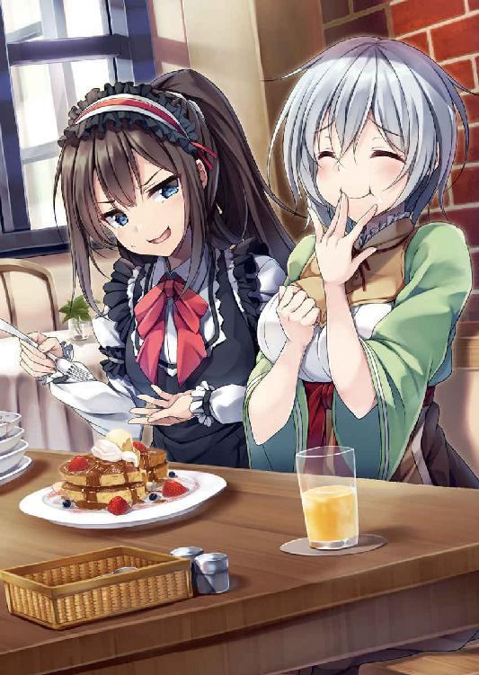
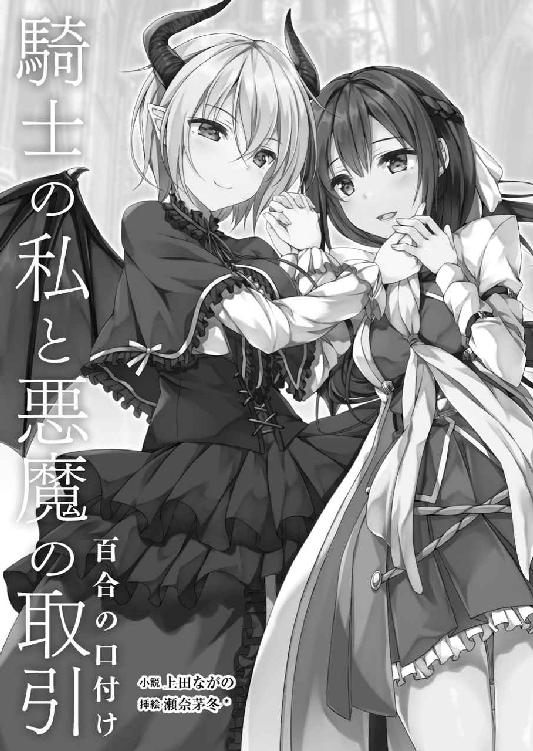
※本作品の全部あるいは一部を無断で複製・転載・配信・送信したり、ホームページ上に転載することを禁止します。本作品の内容を無断で改変、改ざん等行うことも禁止します。また、有償・無償にかかわらず本作品を第三者に譲渡することはできません。
※本作品は電子書籍配信用に再編集しております。
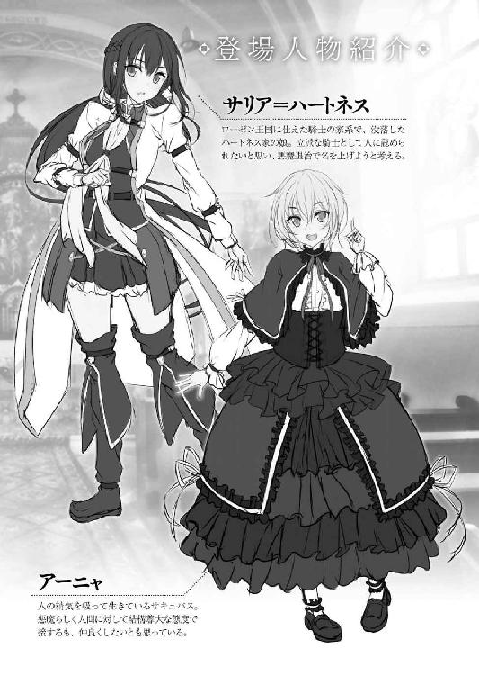
サリア＝ハートネスは剣を構えたまま立ち尽くしていた。
ローゼン共和国ガザラ地方の山中にて背後に崖を背負いつつ、目の前にいる存在──体長五メートルほどはあるだろう巨大な蜘蛛を思わせる化け物を見つめ、身体を硬直させていた。
（これが......悪魔......）
悪魔退治をすると決めた時から覚悟はしていたつもりだった。
どんな化け物が相手でも、どんなに恐ろしい存在が相手でも、決して退かない──と。
しかし、恐怖に身が竦む。
初めて目にする人外の存在に、心も身体も完全に気圧されてしまっていた。
後ろ髪に結った腰まで届く長い栗色の髪に、碧い色をした切れ長の瞳、真っ直ぐ通った鼻梁、柔らかそうな唇──まるで作りもののように整った端整な顔立ちが凍り付く。白と翠、そして赤を基調とした騎士服で包み込んだそれほど大きくはないけれど上向き加減で形がいい胸に、引き締まった腰、艶やかな曲線を描くヒップというスレンダーな身体がカタカタと震える。全身からは血の気が引いていた。
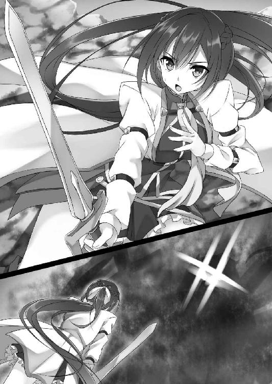
「恐ろしいか小さき者よ」
重苦しい声が響く。
サリアの恐れを見透かしたかのような、心の奥底まで届くような声が......。
声の主は目の前の巨大な蜘蛛──悪魔だ。
「愚かな者よ。力なき者よ......くくく」
悪魔は笑う。サリアを小馬鹿にしたように......。
「命が惜しいか？」
囁くように語りかけてくる。
「死にたくはなかろう？」
心の奥底に隠した──いや、必死に隠そうとしている感情を掘り起こすような言葉を向けてくる。
「わ......私はそんなこと......」
けれど認めるわけにはいかない。恐怖を押し隠し、悪魔に答えを返す。
「嘘をつくな。怯えているのが分かるぞ」
だが、見透かされてしまう。
「身体が震えているではないか。その場から動くことができぬではないか」
「そ......それは......」
言い返すことなどできない。悪魔の言葉はすべて真実だった。
「恥じる必要などないぞ、弱き者よ。しょせん貴様はただの人間に過ぎないのだ。人は魔には敵わぬ。それをお前の本能が悟っているのだ。だから......お前に機を与えよう」
「──機？」
冷や汗を流しながら首を傾げる。
「くくく......逃がしてやろうということだよ」
「逃がす？ 私を見逃す──と？」
信じられない言葉だった。
悪魔という存在に心はない。悪魔とはこの世界に巣くう闇そのものだ。人を襲い、命を奪う。他者の生命や恐怖の感情を糧にこの世界に存在し続ける存在だ。
悪魔にとって恐怖とは最高の美味であるという──人を見逃すことなどあり得ない。
「そうだ」
けれども悪魔はあっさりと頷いた。
「......何故だ？」
わけが分からない。
「弱き者、勇なき者の命を奪ったところでなんの面白みもないということだよ。殺す価値もないということだ。だから我はお前を逃がす。簡単なことだろう？」
悪魔らしい実に屈折した答えだった。
とはいえ、ある程度納得はできる。悪魔などという存在だったらそのようなこともあるのかもしれない。
（助かる。私は助かるのか？）
心が幾分軽くなったような気がした。
「さぁ、立ち去るがいい弱き者よ」
悪魔の言葉が向けられる。
（そうだ。早くここから──）
逃げるべきだ。
相手が見逃すと言ってくれているのだから素直に従うべきだ──心がそうサリアに語りかけてきた。
その感情に逆らうことなく従おうとする。剣を握る腕から力を抜こうとする。
（いや、駄目だ!!）
だが、サリアは心に従わなかった。
改めて剣を握る手に力を入れる。碧い瞳に浮かべていた怯えの色を消し、強く巨大な蜘蛛を睨み付けた。
「......どういうつもりだ？」
留まろうとする意思に悪魔も気づく。
「どういうつもりもなにもない！ 悪魔よ──私は貴様を斬る!! 私はその為にここに来たのだ！ 私は──騎士になるのだから!!」
恐怖がなくなったわけではない。正直言うと恐ろしい。できることならば逃げ出したいと今でも思っている。
しかし、それ以上に強い感情がサリアを支えていた。
（本当の騎士になる。すべての人々に認められる存在に！ だから......逃げないっ!!）
＊
ハートネス家は代々ローゼン王国を守る騎士を輩出してきた貴族の家柄である。王に剣を捧げ、いざという時には命を投げ出すということを誇りとしてきた──はずだった。
だが、現実はそうではない。
確かにローゼン王国が建国されたばかりの頃は、騎士の誇りに生きていたのだろう。けれども、長い年月のうちにその理念は名ばかりのものとなってしまった。
選ばれし貴族。何もしなくても平民の上に立ち続ける存在──そんな身分にいつしかハートネス家の人間、というよりも貴族全体が溺れるようになってしまった。
貴族は上で、平民は下。そんな国の構造に溺れ、貴族達は大勢の国民達を虐げた。
結果、招いたものは平民の反乱だった。人々が一斉に貴族に対して叛意を見せたのである。これに貴族達は驚き、慌てた。
何せ人数は圧倒的に平民達の方が上なのである。
もちろん、貴族だって当初は乱を制しようとした。けれども、乱を押さえる為の兵の大半も庶民である。勝てるはずなどなかった。
これにより己の無力を悟った貴族達は平民達の要求を受け入れることとなったのである。それでも一部の貴族達はなんとか己の既得権を守ろうと必死に抵抗し、貴族の力を強化しようと努めたりもしてみせた。
とはいえ、歴史の流れに逆らうことなどできず、ついには王が王権を手放し、ローゼン王国はローゼン共和国に生まれ変わったのである。
そうして人々は平等になった。貴族も平民もない。すべての人が等しく機を与えられる国ができたのである。
しかし、光あるところには必ず影ができる。
サリアはその影に生まれた。
既得権を守る為に平民達を弾圧しようとしていたハートネス家という影に......。
新しい社会の誕生を押さえ込もうとしていた家。ハートネス家中の者は生まれながらにして人々に蔑まれてしまう宿命を負うこととなった。
サリアという個人としてではない。ハートネスの人間としか見られない。
『あの家は貴族様だからな......』
幼い頃から蔑みの目を向けられてきた。
正直それが我慢できなかった。
ハートネス家が没落したこと自体は仕方がないことだと思っている。それだけのことをしてきたのだから......。
だが──
『ごめんねサリア......ハートネスのせいで......』
弱々しく自分に謝ってくる母の姿は耐え難かった。
『苦労をかけて済まんな』
子供である自分に頭を下げてくる父の姿に胸が痛んだ。
そんな二人に「違う！」と言いたかった。
「私は幸せだよ!!」
そう伝えたかった。
だからこそ決めたのだ。騎士になろうと。
ハートネス家は騎士の家柄だ。騎士は騎士として名を上げることで汚名をそそぐ。
そしてなるのだ。誰にでも認められる存在に......。
＊
（父上も母上ももういない......。でも、私は墓前に誓ったのだ。必ず立派な騎士になってみせるのだと!!）
流行病で若くして亡くなった両親──天国の二人に幸せな自分の姿を見せてやらなければならない。
「私は逃げるわけにはいかない!!」
切っ先を悪魔へと向けた。
ガザラ地方に巣くう悪魔。近隣の村々を襲っているという。これを退治することができれば、共和国騎士団に入団することも叶うだろう。そうなればきっとみんなも自分を認めてくれる。幸せになれるのだ。
「お前を必ず倒す!!」
自分に気合いを入れるように声を上げる。
同時にサリアは大地を蹴った。
「はぁああああっ!!」
気勢を周囲に響かせた。
「......愚かな」
悪魔が呆れたような言葉を口にする。
「身の程を知るがいい人間よ!!」
それと共に巨大な蜘蛛の身体から強烈な魔力が解き放たれた。
黒い波動のようなものがサリアの身体に襲いくる。
「うああっ!!」
ただそれだけで細身の身体は簡単に吹き飛ばされてしまった。
何度も地面に打ち付けられる。まるで蹴られたボールのようにサリアは地面を何度もバウンドすることとなった。
「ま、まだまだぁあああっ!!」
しかし、すぐに体勢を立て直す。身体中痛い。それでも諦めるわけにはいかなかった。
立ち上がり、再び魔物との距離を詰めるべく走り出す。
「しつこいな......ならば──」
これを見た悪魔が今度はその肉体に魔力を収束させていった。
（口元に集まってる？）
蜘蛛を模した身体の口部分に力が集中しているのが分かる。
「シャアアアッ!!」
次の刹那、悪魔は集めた魔力を糸状にしてサリアに向かって撃ち放ってきた。
蜘蛛が放つ糸──絡まれたらまずい事態になることは明白である。
「くっ!!」
回避すべく慌てて横に飛ぶ。
「あっ！ 馬鹿っ!!」
刹那、悪魔の口から可愛らしい声が漏れ出た。
先程までの耳にしているだけで心まで押し潰されそうになるほど重苦しい声ではない。まるで少女のような声だ。
「え？」
一体どういうことなのかとサリアは戸惑う。
が、理由を思考している暇などなかった。
「あっ──しまっ!!」
そこで気がつく。回避の為に横っ飛びをしたことで崖の端に来てしまっていたことに。
「くううっ！」
なんとかバランスを取ろうとする。
しかし、その瞬間足場が崩れた。今日は晴れてはいるが、この辺りは昨日まで雨が降っていた。その為、地盤が弱くなっていたらしい。
当然身体を支えることなどできない。
（そんな......父上......母上......こんなところで......）
崖下に向かって身体が落下を始める。
「ちいっ」
悪魔が舌打ちをしたのはこの瞬間のことだった。
同時に蜘蛛の姿が幻のように消え去る。その代わり姿を現したのは、漆黒のゴシックドレスに身を包んだ一人の少女だった。
短い銀色の髪に、紅い瞳──そして頭部には山羊を思わせる角を生やした少女。
（──綺麗だ）
一瞬状況も忘れて見とれる。
そして、サリアの意識は途絶えた......。
身体が落下していく。
どこまでもどこまでも下へ下へと......。
（死ぬのか私は？ 父上と母上への誓いも果たせないままで......）
感じるものは絶望だった。
助かることなどあり得ない。
だが、それでも、死ぬわけにはいかなかった。
騎士になるのだ。立派な騎士に。皆に認められる存在に......。
（だから、私は──）
「私はっ!!」
ガバッとサリアは身を起こした。
「......え？」
瞳を開く。
視界に映り込んだのは、見覚えがないゴツゴツとした岩場──というよりも洞窟の風景だった。
周囲を石に囲まれた岩穴。入り口方向からは明かりが差しこんできている。
（どういうことだ？ なんでこんなところに？ 一体何が......？）
何故自分がこんなところにいるのかがまるで分からない。
戸惑いつつ周囲を見回すと、洞窟の壁にご丁寧に剣が立てかけてあった。旅の荷物も一緒に置かれている。いや、荷物だけじゃない。器用に洞窟天井のくぼみとくぼみの間には枝がかけられ、濡れた騎士服が干されていた。
（ってことは......）
慌てて自分の身体へと視線を向ける。
「あ......くううっ」
全裸だった。衣服を一切身に着けていない。
ちょうど掌サイズの小さな上向き加減の乳房が、引き締まった腰が、薄い陰毛に隠された秘部が、剥き出しになっていた。
顔に血が上る。誰がいるわけでもないけれど、両手で胸と秘部を隠した。
この状況、どうやら誰かに運ばれたことは間違いないらしい。
（で、でも......一体誰が？）
戸惑いつつ必死に記憶を辿る。
覚えているのは巨大な蜘蛛を思わせる悪魔と戦っていたということ。しかし、その姿は実体ではなく、魔力で生み出されたものであり、その実体は美しい銀髪の──
「目が覚めたみたいね」
唐突に声がかけられた。
「──なっ!?」
壁の剣を取り、構えた。
「命の恩人に剣を向けるわけ？ まったく失礼な人間ね」
そこにいたのは一人の少女だった。
ショートヘアーの銀髪に、洞窟には不似合いすぎる漆黒のゴシックドレスを身に着けた少女だ。
そう、記憶にある悪魔の本当の姿......。
（いえ、でも......少し違う......）
が、そこで差異に気づく。
確かあの時見た悪魔には角が生えていたはずだ。それに瞳の色も違う。サリアの記憶にある悪魔の目は、血のように赤かった。けれど今の色は金だ。猫の瞳のように一点の穢れもない澄んだ宝石みたいに見える。
透き通るような白い肌に綺麗な瞳──身に着けているドレスに、サリアよりも頭一つ分小さな身体も相まって本当に人形のようだ。
「どうやら記憶にある私の姿とは違って混乱してるみたいね。だったらほら......これでどうかしら？」
サリアの疑問を読んだかのような言葉を口にし、僅かに少女は笑った。
同時に少女の小さな身体から魔力が溢れ出す。ピリピリと肌が痺れるほど強烈な力の奔流を感じた。
それと共に少女の肉体が変化する。
頭部からは角が伸び、金色の瞳が赤く染まった。あの時見た悪魔と同じ姿──いや、変化はそれだけでは終わらない。
背中からは蝙蝠を思わせる翼が伸びる。身に着けたスカートの中からは尻尾まで......。
その姿は明らかに人のソレとは異なるものだった。
「......あ、悪魔......」
剣を握る手に力を込める。
「そう。悪魔よ。私は悪魔......悪魔アーニャ......よろしくね」
切っ先が向けられていることにまるで動じることもなく、鈴の音のような声で悪魔──アーニャは名を名乗った。
「くうっ!!」
サリアは慌てて身を起こそうとする。とにかく立ち上がらなければ敵の動きに対応することはできないから。
しかし、立ち上がった瞬間、ふらっと身体のバランスが崩れた。まともに立つことができない。サリアはふらつき、背中を洞窟の壁に預けることとなってしまった。
「無茶しない方がいいわよ。崖から落ちて川で溺れた......かなり体力を消耗しているはずよ。まともに戦うことなんかできないくらいにはね」
「そ、そんなこと......」
強がってみせる。
「強がりなんてやめておきなさい。だいたい、そんな姿で凄まれても滑稽なだけよ」
クスクスとアーニャは笑った。
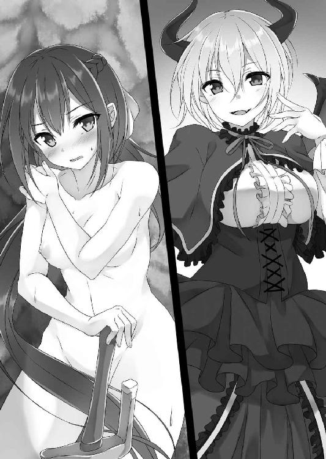
「え？ あっ──」
そこで自分が全裸だったことを思い出す。
再びサリアは両手で肌を隠そうと考えた。
（いえ、駄目よ......）
けれどもそれはできない。敵から切っ先を外すわけにはいかなかった。
顔を真っ赤に染めつつも、切っ先をアーニャへと向け続ける。
「なかなか根性あるみたいね。でも、そんなの無意味よ。私は別に貴女に危害を加えるつもりなんかないから」
「危害を加えるつもりはない？」
「ええそうよ。だから安心して剣を下ろしなさい」
語りつつ、アーニャは伸ばしていた角を消した。
瞳の色も赤から金に戻る。伸びていた羽や尻尾も消滅した。洞窟中に広がっていた魔力も霧散する。
どうやら危害を加えるつもりはないというのは本当のことらしい──とは思えない。何故ならば敵は悪魔なのだ。人を陥れる姦計くらい平気で使ってくるだろう。
当然剣を下ろすことはできない。サリアはふらつきながらも切っ先を構え続ける。肌を剥き出しにする羞恥に耐えながら......。
「その態度......私の言葉が信用できないわけ？」
「当たり前だ。お前は悪魔だぞ！」
「......まぁ確かにその通りね。でも、だったらなんで貴女はここにいるわけ？」
「なに？」
何を言いたいのだろうか？
言葉の意味が分からず、首を傾げる。
「だからね、崖から落ちて気絶した貴女を誰が水中から救ってあげたと思ってるわけってことよ」
「そ......それは......」
言葉に詰まる。
自分は誰かに助けられた。それは間違いない事実だろう。
だとすれば、一体誰が自分を救ったのか？
真っ先に考えられるのは目の前の......。
「いや、あり得ない。悪魔が私を助けた？ そんなことあるはずが......」
「事実よ。私は貴女の命の恩人ってわけ」
ニッコリとアーニャは楽しげな表情を浮かべてみせた。
「......通りかかった誰かが......いや......そんなこと......」
あり得ないということはサリアだって分かっている。
この森はかなり人里から離れた場所だ。しかも、悪魔が巣くっていると噂になっている場所であり、一般人が通りかかることなどまずあり得ない。もしかしたら自分以外の悪魔狩りの人間が──という可能性もなくはないだろうが、あまりに都合がよすぎる考えだ。
信じ難い。けれど、受け入れる以外にないらしい。
呆然としてしまう。全身から力が抜け、構えていた切っ先が落ちた。
「分かってくれたみたいで嬉しいわ」
そうしたサリアの態度に、アーニャは満足げだ。
「......だが、何故だ？」
呆然としつつ呟くように疑問を口にする。
相手は悪魔だ。人など食料としか思ってない存在である。そのような者が人間である自分を何故救ったのか？ まるで見当がつかなかった。
「どうして自分を救ったのかってことかしら？ だったら理由は簡単よ」
悪魔はジッとこちらを見つめてくる。
「......貴女にね、しばらくの間匿って欲しいのよ」
疑問に対する答えはそのようなものだった。
「匿う......意味が分からないな」
「こういうことよ。ほら」
そう言うとアーニャはパチンッと指を鳴らした。
するとその音に反応するように、アーニャの身に着けていたゴシックドレスが粒子となって消える。サリアの前に少女悪魔の生まれたままの姿が晒された。
サリアよりも白い肌。染み一つない絹のように美しい肌が剥き出しとなる。身長はサリアよりも小さいけれど胸はどちらかというと大きめだ。それでいてしっかりと腰は括れている。膨らんだヒップにムチッとした太股──実に女らしい姿だ。けれど、陰毛が一切生えていない秘部は妖艶な身体つきとは違い、どこか幼さを感じさせる。アンバランスさを感じさせるような姿。
（......やっぱり綺麗だ......）
同性だというのに一瞬見とれてしまった。
顔立ちだけじゃない。身体まで人形のよう......。
（って、そうじゃないっ!!）
が、すぐに我に返る。
「何故いきなり裸なんかに......」
「見れば分かるわ。ほらね......結構酷いでしょ？」
アーニャがそう口にした瞬間、彼女のちょうどヘソ辺りに傷のようなものが出現した。魔法で刻まれたと思われる火傷の跡が......。
「なっ!? それは一体？」
美しい姿には不似合いな傷だ。思わず顔をしかめて理由を尋ねる。
「悪魔狩りとやり合ってね、結構深い傷を負わされちゃったわけ」
アーニャは軽い口調で傷の原因を説明してくれた。
「悪魔狩り？ 来ていたのか？」
「ええ、正直参ったわよ。いきなり現れるんですもの。完全に不意をつかれたってところね。お腹に一発もらっちゃった......」
笑いながらアーニャは下腹部をさする。
態度や口は軽い。だからどの程度重い傷なのか予想はつかないが──
（あの傷から力の残滓のようなものを感じる。相手は高位の魔術師か？ だとしたら、かなりのダメージだということは間違いないのだろうな）
その程度の推測はできた。
「それで、悪魔狩りはどうした？ まさか殺したのか？」
「......それができればよかったんだけどね」
アーニャは首を横に振る。
「このダメージが大きすぎて反撃なんかできなかったのよ。逃げるのが精いっぱい。で、逃げてる途中で貴女に会ったってわけ」
語りつつアーニャは下腹部から手を離した。
すると浮かび上がっていた傷も消える。どういう仕組みかは分からないが、多分魔力で傷を隠しているのだろう。
「......なるほど、そういうことか」
だいたいの話は理解できた。
「って、まさか......」
そこで一つの答えに辿り着く。
「悪魔狩りからお前を匿えということか!?」
「まぁそういうことになるわね」
アーニャはあっさりとサリアの言葉を肯定した。
「もちろん、いつまでもってわけじゃないわよ。この傷が癒えるまでで構わない。傷さえ癒えれば自分の身を守るくらいのことはできるからね」
不意さえつかれなければ悪魔狩り程度に負けはしないと悪魔は語りつつ、
「どうかしら？」
上目遣いで尋ねてきた。
「どうって......もちろん駄目に決まっているだろう！ 悪魔を庇う？ あり得ない！ 私はお前を退治しに来たんだぞ!!」
もちろん受け入れることなどできるはずがなかった。
人が、人を害する存在である悪魔を庇うなどあってはならないことだから。ましてや自分は騎士を目指している人間である。人を守る存在になりたいのに、人に仇なすような真似をするわけにはいかない。
「なるほどね。貴女の言い分はもっともだわ。貴女と私は敵同士だもんね」
「当たり前だ！」
「でも、貴女は本当にそれでいいの？」
ニタアッとアーニャの口が不気味に歪む。
「妖しい笑顔だな......何を企んでいる？」
何か嫌な予感がした。
「企むも何も、私は貴女にとって命の恩人なのよ。私がいなければ貴女は死んでいた。間違いなくね。そんな命の恩人の願いを貴女は無下にしてしまって構わないの？」
「そ、それは......」
命の恩人──その言葉が深く胸に突き刺さる。
アーニャの言葉は間違いなく事実である。この悪魔がいなければ自分は間違いなく死んでいただろう。
だが、だからといって......。
「それに貴女......騎士になりたいんでしょ？」
「なっ!? どうしてそれを!?」
不意打ちのような言葉だった。まさかの事態に思わず瞳を見開く。
まさか悪魔は人の心を読むことさえできるというのだろうか？
「どうしてって......貴女が教えてくれたのよ」
「私が教えたって......そんなことした覚えは......」
「ここで寝てた時......私は騎士になる。死ぬわけにはいかない......って何度も寝言を言っていたわよ。ふふふ」
悪魔は実に楽しそうに語ってきた。
「寝言......くうっ」
対するサリアはがっくりと肩を落とす。
けれども完全に心を折ったりはしない。
「......確かにお前が言う通りだ。私は騎士を目指している。だが、それとこれに一体なんの関係があるというのだ！」
心を強く持ち、言い返した。
「大ありよ」
対するアーニャは余裕たっぷりである。
「......どうしてそうなる!?」
「だってそうでしょ？ 騎士というのは恩義に厚い存在。誰に対しても礼を尽くす存在でしょ？」
「そ、それは......」
その通りだ。
「だから、当然恩には報いないとならない。ましてや命の恩──これほど大きい恩義はないと思うんだけど......違うかしら？」
ニタニタ笑いながら真っ直ぐこちらの瞳を見つめてくる。
「う......く......くううっ......」
サリアはこの視線を必死に受け止め続けた。負けてはならないと自分自身に言い聞かせながら......。
けれど、やがて限界が訪れ、ついに観念したようにサリアは悪魔から視線を外した。
「......そ......その通りだ......」
サリアが目指す騎士は、どんな相手にでも認められる最高の騎士だ。まさに騎士の模範ともいっていい存在である。
恩義に報いる──騎士道の基本中の基本を軽視するわけにはいかなかった。たとえその相手が悪魔だったとしても......。
「認めたわね。それじゃあ......私を匿ってくれるかしら？」
勝ち誇ったような表情を浮かべてみせてくる。
身長やどこか幼さを感じさせる顔立ちと相まって、得意げな子供のようにも見える姿だった。
ちょっと可愛らしい。
が、今はそれを感じている余裕などない。
悔しさに奥歯を噛みつつ「......ああ、お前を匿う」とサリアは頷いた。
「そっか、ふふ、よかった。これでしばらくは住処に困ることはなさそうね」
ニコニコ笑顔である。
「......っ、ただし、ただしだっ!!」
そんなアーニャに対し、必死の形相でサリアは食いついた。
「ただし？ 何かしら？」
「お前のことは匿う。だが、それはあくまでも傷が癒えるまでだ」
「もちろん分かってるわよ」
アーニャは頷いてみせる。
「いいや、分かってない。いいか......傷が癒えたら匿うのをやめるだけじゃない」
そう口にして、今度はサリアの方から真っ直ぐアーニャを見つめると、
「私はお前を斬る。悪魔アーニャ......騎士としてお前を必ず退治してみせる!!」
はっきりとそう告げた。
この宣言に少しだけ驚いたようにポカンとアーニャは口を開ける。
とはいえ、その驚きは僅かな時間だけだったらしく、すぐにアーニャは再び笑みを浮かべてみせてきた。
「結構な力を見せてやったつもりだけど、なかなか根性あるわね。ふふ、いいわ。その時は私も全力で貴女の......えっと......」
そこで言葉を切ると、少し困ったような表情を浮かべる。
「サリアだ。サリア＝ハートネス」
悪魔が言いたいことはすぐに理解できた。
「なるほど......サリアか......。ふふ、いい名前ね」
噛み締めるようにサリア──と悪魔は呟き、
「全力でサリア......貴女の相手をしてあげるわ」
先程の言葉の続きを口にしてきた。
真っ直ぐサリアを金色の瞳で見つめながら......。
この視線を受け止める。
今度は目を逸らしたりなんかしない。
二人で互いの瞳を見つめ続けた。
「あ、そうだ......」
何かを思い出したかのようにアーニャがそう口にしてきたのは、それからしばらくしてからのことである
「どうかしたのか？」
「いえ、実はね、もう一つ貴女にお願いしたいことがあるのよ」
「もう一つ？ 匿うだけでも十分だろ」
「もちろんそうなんだけど、それだけだと貴女は永遠に私を匿い続けることになるわよ」
「......永遠って......まさか......自然治癒しないということか？」
そう問いかけると、アーニャは素直に頷いた。
「この傷......結構深いのよ。自然治癒に任せておいたら、多分貴女の寿命が切れるわ。だからね......傷を癒やす協力もして欲しいのよ」
「......なるほど。だが、私にできることなどなにもないぞ」
サリアが目指しているのは騎士であって医者ではない。ハートネス家に代々伝わっている騎士教本で戦場での応急処置技術などは学んではいるが、本格的な傷を癒やす術などは知らない。
ましてや相手は悪魔だ。
「別に貴女に治療して欲しいなんて言ってないわよ」
こちらの考えを読んだかのようにアーニャは苦笑してみせてくる。この悪魔、どうやらかなり聡いらしい。
「だったら何をしろというんだ？」
「簡単なことよ。傷を癒やす為の力──精気を吸わせて欲しいの。貴女の身体からね。わざわざ悪魔狩りに来たほどなんだから、貴女だって知ってるでしょ？ 私達悪魔の力の源がどんなものかを」
「それは......人の感情......」
「そう......」
悪魔は頷く。
「でも、正確には違う」
けれども首を横に振り、
「私達が欲するものは人の感情によって揺らぐ精気の力。特に恐怖とかね......」
そのような説明をしてきた。
「つまり、私を恐怖させると？」
「......それが一番手っ取り早いわね。だけど、恐怖ってのはなかなか作り出すのが難しい感情なのよ。不意をつくならまだしも、これから恐怖させますって宣言して怖がらせるなんておかしな話でしょ？」
納得できる話ではある。
だが、だとするとアーニャはどうするつもりなのだろうか？
「恐怖は駄目。だから別な感情で精気を作り出す」
やはりこちらが疑問を口にする前に、アーニャは答えを口にしてきた。
「恐怖の次に力を生み出す感情でね」
そう言うとゆっくりとアーニャはサリアへと近づいてきた。
全裸のままぺたぺたと洞窟内を歩き、やはり一糸纏わぬ姿を晒すサリアの至近にまで接近してくる。
「な......何を？」
同性とはいえ全裸には流石に動揺し、言葉が僅かではあるが震えてしまう。
そんなサリアの頬に、アーニャはそっと手を添えてきた。
「私が欲している感情は興奮よ」
囁くように口にしてくる。
「そう、興奮......」
それこそが、恐怖の次に美味しい感情なのだと悪魔は語った。
「興奮した相手に接触する。そうすることで私は精気を奪うことができるの」
語りつつ、ツツッと指で頬を撫でてきた。
いや、頬だけじゃない。首筋や胸元にまで手を伸ばそうとしてくる。
「なっ！ や......やめろっ!!」
慌てて距離を取ろうとした。
「駄目よサリア。逃げないで......逃げたら精気を奪えない。で、精気を奪えないと私の傷は治らない。それでいいの？」
「だが、こんなこと......無意味だ。私は騎士だぞ......こんなことで騎士は興奮など......」
正確には本当の騎士というわけではない。だが、心構えはできている。だからこのようなことで興奮などするはずがない。
「さて、それはどうかしらね」
ジッと見つめてくる。
先程までの視線とは違い、どこか熱感こもった視線だった。
「な......み、見るな......」
どこか淫靡さを感じさせるアーニャの態度に動揺してしまう。何故か胸がドキドキと高鳴るのを感じた。
この動揺を悟られるのがなんだか怖く、サリアはアーニャから距離を取ろうとする。
だがその刹那──
「んちゅっ」
「──んんっ!?」
サリアの唇にアーニャの唇が重ねられた。
柔らかい感触が伝わってくる。いや、柔らかさだけじゃない。温かさまで伝わってきた。
相手は人じゃない。悪魔だ──でも、温かさが心地いい。
一瞬身体から力が抜けていくような感覚を覚えた。
「な......何をするっ!!」
しかし、キスは一瞬でしかない。
すぐにサリアはアーニャを突き放す。
「こんな......いきなりなんてことを......」
起きた事態に戸惑いつつ、アーニャを睨む。
「んふふ」
そんなサリアに対し、アーニャは実に楽しげな表情を浮かべてみせてきた。
「な、何がおかしい!?」
「別に......ただ、ほら......奪えた」
動揺するサリアに対して向けてくるアーニャの笑み──まさに悪魔の微笑みだった。
「へ～、凄い。これが王都。大きいのね。これは想像以上だわ」
ガザラ地方からサリアの家があるローゼン共和国首都アスハへと戻る。
広がる首都の街並み──それを見た途端、アーニャは驚いたように瞳を見開いた。
「......王都というのは昔の呼び名だ。今は首都」
「細かいわね」
「我が国は王制から共和制に移行した国だ。その辺は細かくなければ困る」
「そう言われてもねぇ。私が生まれてからしばらくの間はずっと王都だったわけだし、今更呼び名を変えることなんかできないわよ」
そのようなことを言いながら、興味深そうに悪魔は街の様子を見回す。
「凄いわね。こんなに大勢の人間を見たの......初めてよ」
完全に田舎からのお上りさんと化していた。
「......生まれた頃から王都って......お前、一体何歳なんだ？」
王制から共和制に移行したのは今から五〇年も前の話だが......。
「一二〇」
あっさりと返事がきた。
一二〇──悪魔ならばあり得る年齢だ。とはいえ、人間換算だと一体何歳くらいになるのだろうか？
（って、悪魔のことなんか考えたところで仕方ないだろ。こいつは私が倒す相手だぞ。考えたところで......）
そう自分自身に言い聞かせる。
それに、今はそんなことを考えるよりも大事なことがある。
「......おい、さっさと行くぞ」
まずは家に戻ることが先決だ。
見た目こそアーニャはただの少女に過ぎない。それは誰の目にも明らかだ。とはいえ、魔術や悪魔に詳しい人間がいたら正体に気づかれてしまう可能性は十分あり得る。あまり人通りが多いところに長居はしたくなかった。
が──
「って、アイツどこだ!?」
気がつけばアーニャの姿は消えていた。
（まずい！ これはまずいぞっ!!）
慌てて周囲を見回す。
相手は悪魔だ。傷を負っているとはいえできる限り自分の目の届くところに置いておかねばならない。正体がバレるのも恐ろしいが、それ以上に警戒すべきはアーニャが誰かを襲うかもしれないということである。
血の気が引いていくのを感じつつ、どこかにいないかと必死にアーニャを捜した。
「へ～、これ美味しいわね」
いた。
「でっしょ～!! これね、昔のお姫様とその騎士が一緒に作ったっていわれがあるケーキなのよ。アスハ名物アスハケーキよ!!」
「そのまんまの名前ね。だいたいお姫様と騎士が作ったケーキっていわれも意味分かんないわね。なんで王女と騎士が一緒にケーキ作りなんかしてるのよ。でも、ホント美味しい」
ニコニコ笑顔で露店ケーキ屋のケーキを食べている。店員とも実に仲良さそうに話をしていた。
「お、お前！ 何をしているっ!!」
ホッとした感情と呆れ、そして怒りを抱えつつ悪魔へと近づいていく。
「ん？ サリア？ 凄いわよこれ。私......こんな美味しいケーキ食べたの初めてだわ」
本当に幸せそうだ。悪魔とは思えない。少女らしい笑顔である。ただ、唇にケーキのカスが少し付いている姿が間抜けな感じだった。
（って、唇......）
洞窟での出来事がフラッシュバックしてくる。
いきなりのキスを思い出してしまう。
あの時の柔らかさと温かさ──思い出すだけで顔が火照っていくのを感じた。
（って、か、考えるな！ あれは事故みたいなものだ！ キスとは違う。あれはその......そうだ！ 食事だ！ 悪魔にとってはただの食事！ だからノーカン！ そう、ノーカンだっ!! そうだろ！ だから忘れろ！ 忘れろぉっ！）
ブンブンッと首を横に振り、必死にキスの記憶を振り払う。
「どうかしたの？」
そんな態度を不審に思ったのか、アーニャが首を傾げてきた。
「べ、別になんでもないっ!!」
「そう？ ならいいけど......あ、それよりさ」
アーニャが話題を変えてきた。
そのことに少しホッとしつつ「なんだ？」と問う。
「貴女も食べてみる？ 美味しいわよ」
アーニャはケーキをフォークで切り取ると、サリアへと差し出してきた。
「なっ!? そ、そんなもの別に──」
「いらないわけ？ だったら私が食べるけど」
「それは......その......」
ジッと差し出されたものを見つめる。
美味しそうな匂いがするショートケーキだ。たっぷり塗られたクリームが実に食欲をそそる。見ているだけでぐうううっとお腹が鳴った。
そういえば最近あまり甘いものを食べていない。懐事情がお寒いから......。
一応ご先祖からの遺産というものはある。が、既に貴族の権威が失われて五〇年もの月日が流れているのだ。遺産だってだいぶ目減りしてしまっていた。余計なものを買う余裕などないのである。節制は必須だった。だから大好きな甘いものも控えてきたのだが......。
久しぶりに目の前に出されると心が揺らぐ。
「食べたいんでしょ？」
相変わらず察しがいい。
「違う......。私は......」
が、騎士は欲望に流されたりなどしない。
今大事なのは早く家に移動することだ。こんな茶番は無視するべきだ──と、理性が訴えてくる。
「ほら、あ～ん♪」
けれど、口元にケーキが寄せられる。
完全に悪魔はサリアをからかっていた。
それは分かっている。理解しているのだ。だけど──
「あ、あ～ん」
我慢できなかった。差し出されたケーキを食べてしまう。
パクッと一口口に入れる。
「お......おおお......美味しい......♥」
口の中が蕩けた。
ケーキを食べた瞬間、甘みが口内に広がる。バチバチッと脳内で火花が飛び散った。強烈な甘さのせいで身体がスライム状に溶けてしまうのではないかとさえ思えてしまう。思考まで滅茶苦茶になりそうなほどの美味しさだった。
頬を押さえてうっとりと瞳を細める。
（生きていてよかった♥）
心の底からそう思える美味さだった。
「凄い顔ね。騎士が見せていい顔じゃないわよ。なんというか......アヘェって感じ」
そんなサリアをちょっと呆れたような表情でアーニャが見つめてくる。
向けられる金色の視線──それを感じた瞬間、サリアは自分が置かれている状況を思い出した。
「......へ、へへ......変なことをいうなっ!!」
姿勢を正す。
「変なこと？ 事実だし」
「う、うるさいっ!! そんなことより、とっとと私の家に行くぞ！ お前は自分の立場というものを弁えろっ!!」
「自分が恥ずかしいからってすぐに人を怒る」
アーニャはニヤニヤ笑顔だ。
「だだだ......黙れぇっ!!」
顔が真っ赤に染まっていくのを感じつつ、サリアはアーニャの手を取ると、無理矢理彼女を引き摺って歩きだそうとした。
「待った!!」
が、引き留められる。
「まだ何か──」
アーニャをナイフのように鋭い視線で睨み付けようとした。
「私じゃないわよ」
しかし、止めてきたのはアーニャではなく、露店ケーキ屋のお姉さんだった。
笑みを浮かべながらこちらを見つめている。
「な、何か？」
一体何なのだろうか？ 嫌な予感がする。
「......代金の方──七〇〇レイお願いします♪」
ニッコリ顔で両手を差し出してきた。
「そうか......。おい、アーニャ」
買ったのならば代金は払わねばならない。
「......ないわよ」
しかし、悪魔はあっさりと首を横に振ってきた。
「はぁっ!?」
「はあっ!? なんて言われてもないわよ。私がお金なんか持ってると貴女は思うわけ？」
「そ......それは......」
確かに、悪魔が人間の通貨を持っているとは考え難い。
となると──
「もしかして無銭飲食ですか？ でしたら......」
お姉さんの笑顔が怖い。放っておいたら間違いなく衛兵を呼ばれてしまうだろう。
「払います！ 払いますからっ!!」
慌てて財布を取り出し、お姉さんにケーキ代金を払うのだった。
（うう......今月の小遣いが......）
泣いてしまいそうだった。
しかも、そうしてアーニャに困らされるのはケーキ屋の一件だけでは済まなかった。
その後も家に向かう道すがら、ひたすら悪魔は興味を持ったもの──主に食べ物に手を出し、そのたびにサリアは代金を払わされることとなった。
「ホント済まないわね」
謝ってくるけれど全然申し訳なさそうではない。
「うう......悪魔め......」
「だって悪魔だから」
ぐうの音も出ない返事だった。
「しかし、なんだって悪魔がそんなに食べ物を欲しがるんだ？ お前達の食料は人間の精気なんじゃないのか？」
「精気が必要なのは魔力回復の為よ。私達は存在してるだけでどんどん魔力を消耗しちゃうからね。食事はそれとは別。生命活動維持の為に必要なのよ......ってか、これもなかなか美味しいわね......うまうま♪」
語りながら露店で買ったパンを美味しそうに食べる。
「燃費が悪い連中だな」
「強大な力を持ってるデメリットみたいなものね」
「......なるほど」
結構説得力がある答えだった。
とはいえ、少し食べすぎのような気がしないでもない。
「......いつもこんなに食べないといけないのか？」
考えるとちょっと怖かった。
傷が癒えるまでこのペースで食べられたら、食費が幾らあっても足りない気がする。
「別にそういうわけじゃないわよ」
が、あっさりアーニャは首を横に振った。
「だってほら、見てみなさいよ。私の身長......普通の人間と変わらないでしょ」
「......確かに。まぁ私より小さい......というか平均より下だがな......」
「その小さな私よりサリアは胸がないけどね」
「ぐううっ！」
グサッと言葉の刃が胸に突き刺さる。
「あ、やっぱり気にしてるのね。あはは♪ って、話を元に戻すけど、悪魔とはいえ身体の大きさは人と変わらない。つまり、生命活動維持に必要なエネルギーも人と同じってわけ」
パクッとまた一口パンを食べながら語る。
「そうか......だとしたら今は相当お腹いっぱいなんじゃないのか？」
首都に来て以来アーニャは食べっぱなしだ。
「そりゃもちろんよ。正直お腹パンパン──ほら」
自分の下腹部を叩いてみせる。
あまり体型が出ないゴシックドレスのせいで分かりにくいけれど、多分下腹部は相当張っているのだろう。
少し呆れ、ため息が出る。
「別に無理して食べる必要なんかないだろ」
「まぁそれはその通りなのだけどね」
アーニャは苦笑してみせた。
「でもさ、ほら、こんなに大きな街に来たのもこんな美味しいものを食べるのも初めてなわけだしさ、テンション上がっちゃうのも仕方ないじゃない？」
「それは......」
納得できないこともない。
「ん？ でも待てよ。初めて？ 一二〇年も生きてるのにか？」
「......一二〇年しか──よ。悪魔としては私もまだまだ若輩者だからね」
「それでも、一二〇年もあれば首都──当時は王都か？ に、来るくらいの時間はあっただろ。そんなに忙しいわけじゃあるまい」
「まぁね。でもさ......ほら、人が多いってことは悪魔狩りに見つかる可能性だってあるじゃない？ こういうところは危険なのよ。貴女みたいにこっち側についてくれる人間でもいない限りね」
悪魔の力は人間のそれを遥かに超えるものである。
が、それでも決して敵わないほどのものではない。人の中には悪魔と対等にやり合うレベルの者も確かに存在していた。
そのような悪魔狩りを相手にするにはアーニャは若すぎたということなのかもしれない。
ただ、何故かサリアにはアーニャが都に近づかなかった理由がそれだけではないように感じられた。
その理由は簡単だ。アーニャの顔がどことなく寂しそうなものに見えたから......。
（って、気のせいだな。悪魔が寂しがる？ あり得ない）
生まれた考えを振り払う。
（確かにこいつは見た目こそ少女で可愛らしい。言動も悪魔とは思えないほどに軽い。しかし、人を襲い、人の精気を喰らう存在なのだ。油断してはいけない。いいか、絶対に気を許すな）
見た目や悪魔とは思えないほど気軽に話しかけてきたりするせいで、ともすれば忘れそうになってしまうが、アーニャは近隣の村を襲っていたと噂されていた存在である。絶対に油断してはならない。
そう自分に言い聞かせ、表情を引き締める。
「別に私はお前側についたわけじゃない。成り行きで仕方なくだ。私の目的はあくまでもお前を退治すること。それを決して忘れるなよ」
「......もちろん。分かってるわよ」
「分かってるならそれでいい」
冷たく言い放ち、歩く速度を上げた。
＊
「──一人暮らしにしては大きな家に住んでいるのね」
首都の一角にある一軒家に入ると、アーニャは興味深そうに室内を見回し始めた。
二階建ての家。一回にはリビングとキッチン、それに浴室、寝室がある。二階にも寝室が二つ──確かに悪魔が言う通り一人暮らし用にしては大きな家だった。
「昔は父と母、それに私の三人暮らしだったからな。それに......」
元貴族の家にしてはあまりに質素である。
王制が崩壊し、ハートネス家は所領を失った。残ったものは僅かな財産のみ。その財産で食べていくにはこれくらいの家を手に入れるのが限界だったのだろう。
ただ、そこまでは語らない。
アーニャも別に興味はないのか、それ以上突っ込んでくることはなかった。
「傷が治るまでの間なら、この家を好きに使ってもらって構わない。部屋もお前が気に入った場所を使え」
「好きに？ ふ～ん、太っ腹なのね」
「お前はかなり自由気ままな奴みたいだからな、制限したところで言うことを聞くとは思えない」
「へぇ、なかなか分かってるじゃない」
否定はしてこなかった。
（少しは遠慮しろ）
突っ込んだところで意味があるとは思えないので、心の中でのみ悪態をついておく。
「ただし、一つ条件がある」
「条件？」
「......絶対に人を襲うな。誰かを傷つけるな。もしそれをしたら恩があろうが気にせず私はお前を斬る」
言葉と共に本物の殺気を向ける。
「肝に銘じておくわね」
返事は笑顔だった。
これではどこまで本気か分かったものではない。
（取り敢えずは信用するしかないな。だが......気は抜くな）
改めて気を入れ直した。
ちょうどそんなタイミングでぐうううっとアーニャの腹が鳴る。
「う～ん、お腹空いてきたわね」
下腹をさすりながら、そのようなことを呟いてきた。
「なに!? お腹が空いただと？ お前......さっきあんなに食べたばかりだろ」
必要な摂取量は人間と同じではなかったのか？
「それはその通りなんだけどさ、今は傷を治すことに魔力を振ってるせいで力の消耗が激しいのよ。精気だけじゃなくて食べた食事の栄養分もそっちに回しちゃってるのよね。だからすぐ空腹になる。というワケだからさ」
ニヤッとアーニャは笑った。
妖しい笑みである。ちょっと怖い。
「な......何を考えている？」
「んふふ......じゃじゃ～んっ!!」
ドヤアッとアーニャがどこからか取り出してきたのは、一冊の本だった。
本の表紙には『王都食べ歩きマップ』と書かれている。
「それは......なんだ？」
「んふふ、いつか王都を訪れる機会があったらと、こういう本を手に入れておいたのよ。この本を見れば王都の名店すべてが分かるっていうね！」
「..................」
傷を癒やす為に云々というよりも、単純に食べることが好きなのかもしれない。この悪魔は......。
「何よその呆れたような目は！」
ジト目に悪魔は気づく。
「なによって......呆れもするだろ。悪魔が考えていることが食べ歩き？ 想像もしたことなかったぞ」
「うっさいわね。いいじゃない！ 人間の料理が好きなんだから!!」
「まぁ、人の......悪魔だが......嗜好に文句を言うつもりはないが......。ちょっとその本貸してみろ」
「ん？ はい」
悪魔から王都食べ歩きマップを受け取り、内容を確認した。
「どう？ 美味しそうなお店がいっぱいでしょ？」
本には店の名前や代表料理だけでなく、店の外観や料理の絵も載っている。
「確かに美味しそうだな......だが、悪いがこの本の店には行けない」
「なんでよっ!!」
アーニャの眦が上がる。
「なんでも何も......この本に載ってる店はほぼ全部、今はないぞ」
「──へ？」
悪魔の瞳が瞳孔が開くんじゃないかというくらい見開かれた。
「え？ な......ななな、なんでよ！」
「なんでも何もないだろ。一体これ、何年前の本だと思ってるんだ」
「──あ」
そこでアーニャも気づいたらしい。
本のタイトルには〝王都〟と書かれている。つまり、少なく見積もっても五〇年前の本というわけだ。
「そんな......楽しみにしてたのに......」
がっくりとアーニャは床に膝をつく。
その顔に浮かぶ表情は絶望だった。
（って、それほどか......）
突っ込みたくなるほどのオーバーリアクションである。
悪魔は本気で落ち込んでいた。
がっくりと肩を落とした姿──少女の見た目と相まって非常に可哀想なもののように見える。
「はぁ......仕方ないな」
そういうと再びサリアは食べ歩きマップに視線を落とした。
「で、お前はどの料理を食べたかったんだ？」
「どのって......今更そんなこと......」
「いいからいってみろ」
「それじゃあ......一三五ページのローゼンパスタ」
問いかけに対してえらく具体的な答えが返ってくる。実際言われたページを開いてみると、ローゼンパスタが載っていた。
ページ数を覚えるほど読み込んでいたらしい。悪魔は暇なのだろうか？ などということを考えつつ「分かった」と返事をするとサリアはキッチンに入った。
「......どうするつもり？」
不思議そうにアーニャがついてくる。
「どうするも何も......ローゼンパスタが食べたいんだろ？ その......店の味を再現することはできないが、近いものは作れるからな」
答えつつ騎士服の上にエプロンを身に着けた。
「作れる？ 貴女......料理できるの？」
「当たり前だ。私が一人暮らしを始めたのは五年も前だぞ。料理くらい作れる」
「五年前？ あんた幾つよ？」
「......十八だ」
答えつつ、運よくパスタの材料は揃っていたので手早く料理を始めた。
「......なかなか手慣れてるわね。どこで習ったの？ まさか独学？」
興味深そうに料理の手際を見つめてくる。
「いや、両親が亡くなった後、私の面倒を見てくれていた夫婦がいてな。教えてもらった」
没落した後もハートネス家に仕えてくれていた召使い夫婦のことを思い出す。皆がハートネスの人間を蔑む中、唯一仕えてくれていた一族の人間だ。サリアにとってはもう一組の両親ともいえる存在である。
だが、今はその二人もいない。残っていた遺産が目減りしてしまったせいで、二人への給金を払えなくなってしまったからだ。
それでも「給金などいりません。お嬢様を一人になんかできません。だからいつまでも一緒に」と夫婦は言ってくれた。
しかし、サリアはその申し出を断っている。
『二人の思いはありがたい。でも、それでは私の矜持が許さない。だから......私が立派な騎士になったらその時はまた......』
そう言って別れたのは一年前だ。
（なのに私は何をやってる？）
改めてそんなことを考えつつ、一応パスタを完成させた。
「ほら、できた。食べるぞ」
キッチンに置かれたテーブルに料理を置く。
「凄い。ホントに絵の通り......。これは意外な才能ね。女の身で騎士なんか目指してるもんだから、てっきり戦い以外はさっぱりなんだと思ってたわ」
「剣以外のことにだって興味はある」
「へぇ......ソレってどんなことかしら？」
流し目でこちらを見つめてきた。
妙に艶やかな視線である。
その上、見せつけるようにペロッと自身の唇を舌で舐めたりもしてみせてきた。
そんな仕草のせいでキスをした時のことを再び思い出してしまう。
「べ......別に、なんだっていいだろ。それ早く食べろ！ 折角作った料理が冷めるだろ」
誤魔化すように悪魔に告げた。
「それもそうね......それじゃあ、いただきます♪」
フォークを手に取り、アーニャはパスタを口にする。
「....................................」
瞬間、悪魔の動きが止まった。
フォークを咥えた状態で硬直する。まるで凍り付いたみたいだった。
「どうした？」
流石に気になってしまう。もしかしてまずかったのだろうか？
「──す」
問いかけに対し、一言口にしてくる。
「す？」
本当にどうしたのだろう？ なんだか心配になってしまう。
が──
「すっごく美味しいっ!!」
杞憂だった。
「これ、凄い！ 凄いわっ!! 嘘でしょ？ こんな......信じられない......」
アーニャはそのような言葉を繰り返しつつ、パスタをガツガツと食べ始める。
「普通こういう場合って凄くまずい料理が出てきて、ちょっと気まずくなったり、私がからかったりするのがセオリーじゃないの!? なのに......ホント？ これ......止まらない。食べるのやめられないわぁっ!!」
小説とかの類いも読んでいたのか、セオリー云々とか妙なことを口走りつつ悪魔は無我夢中で食事を続けた。
その姿にどのような反応をすればいいのか呆然としてしまう。
「ん？ どうしたのサリア？ もしかして貴女......食べないの？ だったら私にそれ......ちょうだい♪」
固まっていると、アーニャはサリアの皿にまで手を出そうとしてきた。
「なっ！ ま......待てっ!! 私だって食べるぞ！ だから待て!! ちょっ──あまり意地汚い真似はするなぁっ!!」
キッチンに悲鳴が木霊した。
＊
（あいつ......本当に悪魔なのか？ 私の想像とはあまりに違いすぎるぞ......）
夕食を終えた後、自室に戻ったサリアはタンクトップにボクサータイプのショートパンツという寝間着姿に着替えた状態でベッドに横になり、そのようなことを考える。
サリアが想像していた悪魔──それはまさに化け物のような存在だ。人のことなど歯牙にもかけない。餌としか思っていない存在。慈悲の心など持ち合わせない。当然会話を交わすことだって不可能。互いに殺し、殺される以外に道はない。悪魔とはそのような存在のはずだった。
けれど、アーニャはまるで違う。
（いや......油断するな。それがアイツの手なのかもしれない。人を油断させ、心の隙につけいる。そして相手のすべてを奪う──そんな悪魔だっているはずだ）
決して甘く見てはならない。
「失礼するわね」
キイッと突然部屋の戸が開いたのは、そんな思考途中のことだった。
「なっ!?」
ノックもなしに突然悪魔が部屋の中に入ってくる。
「ななな......いきなりなんだっ!!」
突然の来訪に動揺してしまう。
「ちょっと話があってね──って、これはなかなか、意外な部屋ねぇ」
室内を見回し、ニヤニヤとアーニャは笑った。
「意外って──あっ!!」
自分の部屋がどういう状況かということに気づく。
ピンク色のカーテンに、窓辺に飾られた花。それに可愛らしいぬいぐるみの数々というザ・少女趣味──としかいえないような室内状況を......。
「お固い男みたいな口調で話し、騎士なんか目指してるからどんな殺伐とした生活を送っているのかと思ったら、その実は料理が得意で可愛いものが大好き──か。うふふ、なるほどなるほど」
ぬいぐるみを手に取り、人を小馬鹿にするような言葉を口にしてくる。
「違うっ！ これは違うんだ！ だからほら、早く出てけ！ 出て行けぇえっ！」
悪魔に対してできることは、顔を真っ赤にして声を荒らげることだけだった。
が、もちろん意味などなく、アーニャは室内に居座り続ける。
「まぁそんなに恥ずかしがる必要なんかないわよ。私だって可愛いものとか好きよ」
「う......うるさい......」
ほとんど涙目だった。
「というかお前......私の部屋になんの用事で来た？」
とはいえ落ち込んでばかりもいられない。
必死に心を立て直し、部屋に来た理由を問う。
「なにって、もちろん寝る為よ」
「寝る為？ ここは私の部屋だぞ」
「それはそうだけど、貴女言ったわよね。好きな部屋を使っていいって」
それはその通りである。
しかし、部屋は他にも沢山空いているのだ。わざわざこの部屋を選ばなくても......。
「私が回復する為には精気が必要。で、私に精気をくれるのは貴女よね？」
「それは......確かにそうだが......」
だったら同じ部屋にいた方が何かと好都合だとアーニャは語ってきた。
「好都合？ どういう意味だ？」
「どういう意味も何も......一緒にいればこういうことだって簡単にできるでしょ」
そう言うとアーニャはベッドに乗り、サリアの身体を押し倒してきた。
「な......なななっ！ 何をっ!!」
突然すぎる出来事に動揺してしまう。
「何を──を何もないでしょ。今日は沢山食事をすることができたけど、肝心な精気を吸えてない。この意味......分かるわよね？」
「そ、それは......」
もちろん理解している。というか、分からないはずがない。
またしても洞窟でのキスが脳裏に蘇ってきた。
「だから......いいでしょ？」
「し、しかし......それは......私が興奮していないと駄目なんだろ？ 私は別に興奮なんてしていないぞ」
そう口にしつつ、自分にのし掛かる銀髪少女の唇へと視線を向ける。
艶々とした綺麗な口唇だ。皮が捲れているなどということもなく、とても瑞々しい。
（私......この唇とキスを......）
考えると喉が渇いた。思わずゴクッと唾を呑んでしまう。
（って、何を考えている！ 変なことを考えるなっ!!）
必死に自分自身に言い聞かせる。
だが、意識すればするほど何故か胸の鼓動が激しさを増していった。
「本当に興奮していない？」
小悪魔みたいな表情で尋ねてくる。
「あ......当たり前だ」
頷く以外に選択肢はなかった。
「それじゃあ......試させてもらうわよ」
一言口にしてくる。
それと共にゆっくりとサリアの唇に自身の唇を寄せてきた。
「あ......だ、駄目......」
制止の言葉を口にする。
しかし、悪魔は止まってなどくれず──
「んっ......んんんっ......」
再び唇に唇が重ねられた。
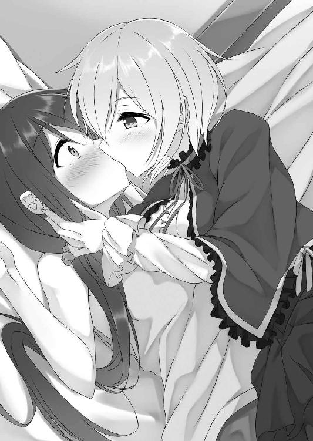
またしてもあの柔らかさと温かさが伝わってくる。
「んふふっ」
前よりも強く押しつけられた。
いや、今回はただ唇を重ねてくるだけでは終わらない。
（なっ......舌......舌がっ!!）
サリアの口内にアーニャは舌を挿し込んできた。
「んっふ......むふううっ!!」
まさかの事態に慌てて顔を背けようとする。侵入を防ごうと口唇を閉じようとする。
が、どんな抵抗も意味などないとでもいうように、悪魔は舌をより中へと進めてきた。
舌に舌が絡みつく。歯の一本一本を舌先でなぞってきた。上唇をハムッと口唇で挟み、チュルチュルと下品な音色を響かせて吸引を行ったりもしてくる。
「ちゅっぶ......むじゅるっ......くっちゅ......ちゅっちゅっ......ふじゅるるるぅ」
繋がりあった口唇と口唇の間から、下品ささえ感じさせるような音色が室内中に響き渡った。
（なんてイヤらしい音だ）
耳にしているだけでより羞恥が膨れ上がってくる。あまりの恥ずかしさに頭がどうにかなってしまいそうだった。
けれども、それほどの羞恥を感じているというのに、何故か肉体は火照り始める。舌で口内をかき混ぜられ、唾液を流し込まれ、口腔を激しく吸い立てられると、どうしてかジンジンと全身が疼くような感覚を覚えてしまう自分がいた。
（なんかこれ......き、気持ちいい？）
甘い痺れに全身が包み込まれていく。身体から力が抜けていくような気がした。
（違う。違う......気のせいだ......ああ......でも......）
こんな感覚は嘘だと思いたい。
しかし、舌の動きに比例して熱感が増幅してくる。
「んっんっんっ......」
抵抗などできない。
ただされるがままに口内を蹂躙され続けた。
やがて、身体から何かが吸われるような感覚が走る。
「んっふ......はぁああああ......はぁ......はぁ......はぁ......」
するとチュプッとアーニャの唇が離れた。
口唇と口唇の間に唾液の糸が伸びる。
「ほら......やっぱり興奮してる」
瞳を細め、熱感こもった声で悪魔が囁いてきた。
「違う......私は興奮なんか......」
認めず、否定の言葉を再び口にする。
けれども、説得力がないことは自分でも理解していた......。
「ホント頑固ね......意地っ張り」
そんなサリアを笑いつつ、優しくアーニャはこちらの頬を撫でてくる。
優しい手つき。母親に甘やかされていた時のことを思い出す。相手は悪魔だということは理解しているけれど、心地よさを感じざるを得ない。
「別に私は......意地......なんか......」
そんな状態で抵抗の言葉を口にしつつ、心地よさに身を任せるようにサリアは瞳を閉じ、そのまま眠りにつくのだった......。
＊
（結局あのまま昨日は寝てしまったのか......。不覚だ）
朝、カーテンの隙間から差しこむ日差しで目覚めたサリアが最初に抱いた感情は悔しさだった。悪魔に好きなようにされるなど、騎士としてあるまじきことである。
（第一、もし奴が私が寝ている間に何か悪さをしていたら......）
考えるとそれだけで恐ろしさを覚えてしまう。もし誰かが傷つけられでもしていたら、騎士になるどころではない。生きていることだってできないだろう。
（って、そういえばアーニャは!?）
そこまで考えたところで、室内にアーニャがいないことに気づいた。
（まさか......本当に街に......）
顔が青ざめる。
慌てて飛び起き、部屋を出た。
皿が割れるような音が一階から聞こえて来たのは、ちょうどそんなタイミングのことだった。
「なんだ!?」
慌てて音が聞こえたキッチンに飛び込む。
「あ～、しまったぁ」
キッチンに入るなり視界に飛び込んできたのは、頭を抱えるアーニャの姿だった。
それと、床中に散らばった陶器の破片......。何枚もの皿が割れていた。
「......こ、これはどういうことだ？」
まるで予想していなかった事態にプルプルと身体が震える。
あまりに酷い。家の中が滅茶苦茶だった。
「あ、その......あはは......ごめんね」
テヘッと舌を出して謝ってくる。正直可愛い。
が、その可愛らしさでは誤魔化しきれないほど、キッチン──だけでなく、リビングも荒れ果てていた。
「別に謝罪なんか求めてない......これは一体どういうことだ？」
静かに告げる。
「な、なんか怖いわよサリアちゃん」
「そんなことはどうでもいい──何をしたんだと私は聞いている」
「あ、あはは......その......えっとね......」
ダラダラとアーニャは脂汗を流しつつ、
「美味しい料理とか、濃厚な精気とかいただいたから......ちょっと御礼でもしてあげようかなって部屋を掃除してあげようとしたの。魔法を使ってさ......。でもその、傷のせいで上手く魔力を制御できなくて......め......め～んご♪」
コツンッと自分の頭を軽く拳で叩いてみせてくる。おどけた態度だ。少女のような見た目と相まってやっぱり可愛い。
だが──
「ああああにゃああああああっ!!」
そんなことはどうでもいい。
相手が悪魔だということも忘れて、まるで子供を叱るかのような怒りをサリアは爆発させた。
「やっ！ ちょっ！ まっ！ 待ったぁあああ！」
悪魔も悪魔らしくなく、半分涙目で悲鳴を上げる。
こうして、二人暮らしが始まった。
『お腹空いたんだけど～』
サリアが家の庭で剣を振っていると、唐突に頭の中に直接声が響いてきた。
いきなりの出来事に驚き、視線を家の窓へと向ける。
窓から見えるリビング──悪魔はそこにいた。
置かれたソファーの上に寝転がり、本を読みながら、ポリポリとお腹をかいていた。
実にぐうたらとした怠け者然とした姿である。
（本当にこいつは悪魔なのか？）
サリアの家に来て以来、アーニャはゴロゴロしているだけだ。サリアが想像していた悪魔の姿とはまるで違う。これではただの引き籠もりだ。
「夕食にはまだ早いぞ」
はぁっとため息をつきながら告げる。
『でもお腹空いちゃったんだから仕方ないじゃない』
開き直ったような返事がきた。
『どうせ暇なんでしょ？』
という言葉まで付け加えてくる。
「別に私は暇じゃない。見ての通り訓練中だ」
『っていっても、ただ庭で剣を振ってるだけじゃない。それ......なんか意味あるの？』
「もちろんだ！ こういう日々の鍛錬こそが重要なんだぞ！」
『はいはい。でも、今はそれ中断ね。ほら、早く何か作ってよ』
実に我が侭な奴である。
「私はお前の召使いではないぞ」
『ふ～ん、そう。だったら......外に出てもいいんだけど』
「......そ、それは駄目だっ!!」
悪魔を街中に解き放つことなどできない。
『だったら......分かるわよね』
やはりこの少女が悪魔であることに間違いはないらしい。
「あ～、やっぱり美味しい。サリア......貴女ってホント天才だと思うわ。騎士なんかやめてシェフになった方がいいんじゃない？」
料理を作って出してやると、アーニャは心の底から幸せそうな表情を浮かべてそれを食べる。
笑顔で料理にパクつく姿は、可愛らしい少女以外の何ものでもなかった。
本当に美味しそうに食べてくれる。ここまで喜ばれると正直嬉しい。
よくよく考えると、召使い夫婦と一年前に別れて以来こうして誰かに料理を振る舞うのは初めてのことである。
料理を誰かに賞賛してもらえる。美味しく食べてもらえる──なんだか凄く新鮮なことのように感じた。
自然と口元が緩んでしまう。
「......んふふ、可愛いわよねサリアって。褒められるとすぐ顔に出る。そんなに私に褒められて嬉しかった？」
悪魔はめざとい。
「な......ななな！ へ、変なことをいうなっ!! あ、悪魔などに褒められて私が喜ぶ？ あ、あり得ないぞ！ ふざけたことを口にするなっ!!」
顔を真っ赤にして悪魔に対して怒鳴りつけた。
「あはは......やっぱり可愛いわね♪」
そう言って笑いながら実に楽しそうに悪魔は食事を終えると、空になった皿を持って流しへと向かい、これを洗い始める。
食事や精気をもらった礼──そう言ってアーニャは部屋の掃除をしようとしてくれた。
あの時は傷のせいで魔力を上手く制御できずに部屋を滅茶苦茶にされてしまったが、どうやらその気持ちは本当だったらしい。
ここに来てから既に三日ほどが過ぎているのだけれど、その間、アーニャは毎日のように掃除や洗濯を行ってくれていた。
ただ、あまり慣れてはいないらしく洗濯の際には服を破ったり、食器などを洗ったりする時には──
「あっちゃ......しまったぁ」
今もそうなのだが、ガシャンッと皿を割ったりしている......。
（正直ありがた迷惑としか言いようがないな）
はぁっとため息をつきつつ、流しへと向かう。
「悪魔って不器用なものなのか？」
先程のお返しとばかりにちょっと嫌味を口にする。
「し、仕方ないでしょ。こういうことは全部魔法とか使い魔にやらせてたんだから......ぐぬぬぅっ......」
悔しそうな顔だ。見ているだけで自然に笑みがこぼれるのを感じた。
（って、駄目だ駄目だ！ 相手は悪魔なんだぞ。油断するな。いいか......気を抜いては駄目だ。絶対に！）
が、すぐに自分自身に言い聞かせ、気を引き締める。
けれど、こうして誰かと楽しく話をするなんて一人になってからは本当に初めてのことだった。
気を抜くな──そう言い聞かせつつも、どこかで今の生活を楽しいと思ってしまう自分がいた。
「さて、それじゃあ今夜もいただくわよ」
そんな日の夜、サリアの部屋のベッドの上で、悪魔と向かい合う。
「あ......ああ......」
猫を思わせる金色の瞳で自分を見つめてくるアーニャに頷きつつ、ドクンドクンッと胸を激しく鼓動させた。
「毎晩してるのに......慣れないの？ また、身体が硬くなってるわよ」
「......慣れるわけないだろ......こんなこと......」
「そっか......ふふ、そういうところ......嫌いじゃないわよ」
初めてキスをした時みたいに、そっと頬を撫でてくる。ツツッと指を動かされると、それだけでなんだかゾクゾクとしたものを覚えた。さらに胸が高鳴っていく。全身が熱を持ち、喉が渇いていった。
そんなサリアにそっとアーニャが唇を寄せてくる。
自分へと近づいてくる艶やかな唇。それに伴って温かな吐息まで届いてきた。
（また......私はこいつと......）
これからする行為を想像する。
全身をより硬直させながら、自然とサリアは瞳を閉じた。
「んっふ......」
「んんんっ」
唇と唇が重なりあう。
アーニャと出会って以来毎日のように感じてきた柔らかな感触が伝わってくる。
（何故だ？ 相手は悪魔だぞ。でも......なんでこんなに......）
唇と唇を重ねるというだけの行為が心地いいのだろうか？
自然と身体から力が抜けていく。無意識のうちに唇を半開きにした。
「むっふ......んちゅっ......ちゅっも......んちゅうぅ」
アーニャが舌を挿し込んでくる。
「あっふ......んんんっ......ふうっふうっふむぅう......」
舌を挿し込まれるのだってもう何度目になるだろう。気がつけば抵抗することなくこれを受け入れるようになっていた。
ほとんど自分でも意識しないままに舌に舌を絡めてしまう。アーニャの動きに合わせるように自分からも無意識のうちに舌を動かし、グチュグチュという淫靡な音色を奏でてしまった。
（ああ......吸われる......）
身体から力が抜けていく。まるで全力疾走でもした後のような疲労感に全身が包み込まれていくのを感じた。ただ、決して嫌な感じではない。それどころか寧ろ、気持ちよささえ感じてしまっていた。
「ふうう......今日もごちそうさま。どう？ 今日も気持ちよかったでしょ？」
唇を離したアーニャが尋ねてくる。
この問いかけに自然と首を縦に振ってしまいそうになった。
が、ギリギリのところで耐える。
「馬鹿を言うな......ただ唇を重ねただけで気持ちよくなどなるはずがないだろ！」
意地を張るような答えを返す。
「本当に？」
だが、悪魔は信じない。
真っ直ぐこちらの瞳を見つめながら重ねて問いかけてくる。
宝石のように綺麗で、吸い込まれそうなほどに清んだ瞳──自分のすべてを見透かされるような気分になる。
「き......騎士は嘘などつかないっ!!」
これは嘘だ。
騎士なのに嘘をついてしまった。
「も、もう寝るぞ！」
若干後ろめたいものを感じる。そんな感情から逃げるように、これ以上悪魔に見透かされないように、サリアはベッドに横になった。
「ふふ......そうね。お休み」
悪魔も横になる。
二人で並んで眠る。それほど大きなベッドではないので身体が密着し、悪魔の温かな体温を感じた。
伝わってくる温もり──それを感じているとなんだか胸がドキドキとする。先程のキスを思い出してしまう。
ただでさえ高鳴っていた胸が、より激しく鼓動するのを感じた。
（駄目だ！ 考えるな！ 考えるなっ！ 考えるなっ!!）
幾度も自分に言い聞かせる。
こんな毎日が、アーニャとの日常だった。
「これは......」
家に郵便が届いたのはそのような生活が始まって五日目のことだった。
届いた封筒の封をサリアは開ける。
「......そうか、もうそんな時期か......」
封筒の中身を見て、女騎士（になるのが夢）はポツリッと一言呟いた。
＊
「ちょっと出かけてくる」
アーニャが居候を初めて六日目、サリアがそのようなことを言ってきた。
「出かける？ どこに？」
身を起こし、女騎士に問う。
「別にお前には関係ないことだ」
が、返事は実ににべもないものだった。
「関係ないって......私を一人にしていいわけ？」
「......もちろん心配はある。だが、どうしても外せない用事だ」
かなり打ち解けている感はあるけれど、未だにサリアはアーニャを警戒している。だというのに出かけなければならないということは、余程の用件なのだろう。
「どうしても外せない用事って何？ もしかしてデートとか？」
ニヤニヤ笑いながらからかうように尋ねる。
「はぁ!? ふ、ふざけたことを言うな！ で......ででで......デートだと!? 私は騎士だぞ！ そんな浮ついたことをするわけがなかろう！」
顔を真っ赤にして怒ってきた。完全に予想通りの反応である。からかい甲斐があるというものだ。
「ふ～ん、じゃあ何なの？」
「だ、だからお前には関係ないといっただろ！ 話すつもりはない」
勢いで話してくれるかと思ったが、そこまでガードが緩いわけでもなかった。
「いいか、厳命しておくぞ。絶対に家から出るな。もし出たら場合によってはお前を斬らねばならなくなるからな」
「それは怖いけど、一人だと暇だし、お腹も空いちゃうんだけど」
「その点なら問題ない。作り置きはしてあるからな」
実に用意がいいことだった。
「作り置きか......。うん。分かった。それなら一応言うこと聞いてあげる」
別に家を出るつもりはない。未だ身体は万全ではないのだ。悪魔狩りに発見される可能性がある以上、できる限りあまり人通りが多いところにいきたくはなかった。
「まぁ、実際どうなるかは分からないけどね」
が、敢えて挑発的な言葉を向ける。
「......い、いいか！ 私は本気だからな!!」
これに対して分かりやすくサリアはムキになった様子を見せつつ、家を出ていった。
アーニャは一人残される。
（......静かね）
久しぶりの静寂を感じた。
こうして一人になるのはサリアと出会ってからは初めてのことである。
なんだか少し寂しさのようなものも......。
「って、感じるわけないでしょ。私は悪魔よ。悪魔......そうでしょ」
一人でいることが当たり前の存在。誰とも、どんな者とも交わることなく、孤高に生きる──そういう存在なのだ。
（ここにいるのはあくまでも力が回復するまでの間、悪魔狩りから逃げる為。それだけなのよ。幾らあの子が面白くて、可愛くたって......。それは分かっているでしょ？ 他でもない私自身が一番......）
考えながら昔のことを思い出す。
幸せだった〝あの頃〟のことを......。
（って、不毛ね......。忘れなさい。考えては駄目よ）
首を横に振り、脳裏に浮かんだ光景を消す。
それと共にパチンッとアーニャは指を鳴らした。
音色に反応して簡易魔法が発動する。空間に穴が空き、一冊の本が落ちてきた。
「......やっぱり暇つぶしには読書が一番ね」
独り言を口にし、ペラペラと本を捲り始めた。
変なことを考えないように。余計なことを思い出さないように......。
が、内容にあまり集中することができない。いつもだったら簡単に本の世界に没入することができるのに、今日は無理だった。
理由は簡単だ。気になってしまうのだ。サリアがどこに行ったのかを......。
「はぁ......読書は駄目ね。っていうか、お腹空いてて集中できないのかも。だから人間なんかのことを気にしちゃうのよ......ってわけで、少し早いけど......んふふ♪」
本を閉じてリビングのテーブルに置くと、キッチンへと向かった。
台所には作られた料理や菓子が並んでいる。
その量は一食分だけではない。三食分ほどの分量はあるように見えた。一体いつの間に作ったのだろうか？
（騎士にはまったく不必要な才能よね）
思わず苦笑しながら、取り敢えずおやつ用のクッキーを手に取り、これを食べ始める。
「相変わらず美味しい」
一口食べるだけで、口内に幸せが広がった。生きててよかった──悪魔のくせにそんなことまで考えてしまうほどの味である。
当然一口だけで終わることなどできない。躊躇なく用意されたクッキーをさらに口の中に放り込んでいく。
バリバリムシャムシャ──数十枚と用意されたクッキーをひたすら食べ続けた。
食べれば食べるほど美味しさが広がる。
しかし、どうしてだろうか？
（やっぱりなんか味気ないわね......）
そんなことを考えてしまう自分がいた。
「ただいま」
サリアが帰ってきたのはちょうど日が落ちた頃のことだった。もうすぐ夕飯という時間帯である。
「......遅かったわね」
ジトッとした視線を向けつつ、ちょっと険のある言葉を向ける。
「な、なんだ？ 不機嫌なのか？」
こんな態度を見せるのは初めてのことなので、戸惑ったような素振りをサリアは見せる。
「当たり前よ」
問いにはっきりとそう答えた。
「何故だ？」
「何故も何も......お腹空いたんだけど。今何時だと思ってるわけ」
「何時って......いつも夕食の時間にはまだ間があるはずだぞ。それに......作り置きだって」
「そんなの全部食べちゃったわよ」
「全部？ アレをか!? それでまだ足りない？」
量には自信があったらしく、驚いている。
「ええ、足りないわ。だから早く作りなさい」
今日一日久しぶりに一人だったせいで妙に時間の流れを遅く感じてしまった。食べても食べても満足できなかった。
お陰でイライラしてしまっている。
そのような感情をぶつけるように女騎士に命じるのだった。
「それじゃあいってくる」
翌日──再びサリアは出かける。
いや、翌日だけじゃない。
その次の日も、また次の日も、毎日のようにサリアは家を留守にした。
一体どこに行っているのか？ 正直気になり、毎日尋ねたが、彼女が答えてくれることはなかった。
お陰でまるでサリアを弄れない。毎日毎日暇な時間を過ごさせられることとなってしまった。
なんだか苛立ちが募ってしまう。
だからだろうか？ 少しサリアに意地悪をしてみたくなり──
「ねぇ、貴女を抱かせてちょうだい」
ある日の晩、アーニャはそんなことを口にしていた。
＊
「だ、抱く？ それは......ど、どういう意味だ？」
いつも通りキスをするのだと思っていたら、それ以上のことを悪魔は要求してきた。予想外の出来事に動揺し、声が裏返ってしまう。
「どうって......そんなことも分からないほど子供じゃないでしょ？」
ニヤニヤとした笑みをアーニャは浮かべてみせてきた。
「......それは......その......」
分かっている。
別に学校などに行っていたわけではない。が、父の蔵書を読んだり、召使い夫婦に教えてもらったことで一般教養は人並みに──いや、騎士を目指す上で必要なのでそれ以上に学んでいた。
それに、少女小説趣味もあって男女交際などのことも（創作知識のみだが）ある程度は理解している。
故にアーニャが言う、抱くの意味だって理解できていた。
「だ、だが何故だ......。どうしてそんな......いきなり......」
「理由は簡単よ。今のままじゃ全然足りないから」
キスだけでは必要分の精気を確保できないのだと悪魔は語った。唇を重ねるだけではいつまで経っても傷は癒えない。
「より多量の精気が必要なの。その為にはもっともっと貴女を興奮させて、これまで以上に身体を重ねないといけない。だから......」
理由は理解できた。
「し、しかしそれは......」
簡単に分かりましたと頷ける話ではない。
「イヤかしら？」
「あ、当たり前だろ!! 抱くとか抱かれるとか......そういうことは恋人同士がすべきことであって......」
「なるほど......少女趣味のサリアちゃんはいつか大事な人ができた時の為に──って、大事に処女を取っているわけね」
「な......ななな......へ、変なことをいうなっ!!」
アーニャの言葉は図星だった。確かに悪魔が言う通り、いつか好きな人ができたら──なんてことを幼い頃から想像していたから......。
お陰でより羞恥が膨れ上がってくる。
恥ずかしさを誤魔化すように、より言葉を荒いものにした。
「変なこと？ 普通のことだと思うけど」
「普通って......そ、それはそうかもしれないが......私は普通ではなくて、その......き、騎士を目指しているんだ。お......お前が言ったようなことを考える暇などない！ 好きな相手に抱かれるなんてこと......あるはずがないんだから......」
怒鳴っても動じない悪魔に言葉を返す。
好きな相手に抱かれることなどあり得ない──それもまた実際本心だった。
自分が目指しているのは騎士なのだ。女の身で騎士を目指す──この国には女騎士がいないわけではないけれど、一〇〇〇人に一人程度の割合でしかない。はっきり言って困難な道だ。色恋をしている暇などない。
騎士になった後だって、任務任務の毎日が待っているはずである。やはり男女関係に現を抜かすことなどできないだろう。だから誰かに抱かれることなどあり得ない。
「真面目なのね。疲れそうな生き方」
「だ、黙れっ！」
言われなくても分かっている。
けれど、こう生きるしかなかったのだから仕方がないではないか。
「ごめんごめん」
こちらの怒りに気づいたのか、あっさり謝罪してきた。やはり聡い。
とはいえ、すぐに悪魔は気を取り直して、
「でもさ......今後もそういうことがあり得ないのなら、後生大事に純潔を守る必要だってないんじゃない？」
などと言ってくる。
「......くっ......」
言葉に詰まった。
「色恋だ、誰かに処女を捧げるだ──そんなことよりも、貴女にとっては騎士になる方が大事だってことでしょ？ だったらさ......んふふ、私に抱かれた方がいいんじゃない？ だってそうでしょ？」
身体を重ねればそれだけ傷が早く癒える。そうなれば悪魔退治を再開できるではないか──というのがアーニャの言い分だった。
確かにその通りだと納得はできる。
ただ、だからといって「そうだな」と簡単に頷ける話ではなかった。
どう返事をすべきかと迷ってしまう。
「まぁでも、本当に貴女がイヤだっていうのならそれでもいいわよ。私の方でも今以上に精気を他に取り戻す術がないか調べてみるから」
「......はぁ？ そんなことができるのか？」
「調べるだけだから......」
確実とは言えない──と悪魔は口にしてくる。
しかし、確実とは言えずともそれができるのであればそうしてもらうのが一番のように感じた。
抱かせろという提案には簡単に返事をすることなどできないから......。
「だったら──」
そうしてくれと伝えようとする。
「でも、その場合一つ条件があるわ」
すんなりとはいかない。やはり悪魔は悪魔だった。
「私に調べ物をさせるんだからその代償をいただくわ」
「代償？ なんだ？」
悪魔が求めるものとは何か、と緊張を覚える。
が、その内容は──
「簡単なことよ。貴女が昼間どこに行っているのか......教えてちょうだい」
まるで予想外のものだった。
「──なっ!!」
これにサリアは絶句する。
「ほら、簡単でしょ」
ニヤッとアーニャは笑った。
この笑顔を見た瞬間、サリアはアーニャが最初からこれを狙っていたことを理解した。
最近悪魔は毎日のようにこちらの動向を気にしていた。そのたびに誤魔化してきたのだが、まさかこんな手に出てくるなんて......。
「どうしたの？ 何か迷うようなことでもしてるわけ？」
「べ、別にそういうわけじゃないが......。他のことでは駄目なのか？」
動揺しつつ、他の案がないのか尋ねる。
「......駄目よ。答えるか、抱かせるか──どっちかにしなさい。そのどちらも無理だっていうのなら......そうね、うん......街の人間から精気を奪うことにするけど、それでもいい？」
悪魔は瞳を細めた。
やるといったらやる──そんな目つきにも見える。
「それは許さんぞっ!!」
受け入れられるはずなどなかった。
「じゃあ、どうするわけ？ 答えは？」
「そ......それは......」
どう答えるべきか？
正直にどこに行っているかを話す？
（いや、しかし......あんなことを知られるわけにはいかない。だが、であるのならばこいつに抱かれる？）
改めてアーニャを見つめる。
相変わらず少女のような見た目だ。愛くるしい人形のような姿。街中で見かけたら間違いなく足を止め、マジマジと見つめてしまうような美しさである。
とはいえ、幾ら綺麗でも抱かれるなんて......。
以前洞窟で見たアーニャの肢体を思い出す。毎晩されているキスを思い出す。
考えるだけで、羞恥で頭が沸騰してしまいそうだった。
唇を重ねるだけでも恥ずかしいのに、多分抱かれるとなればもっと......。
想像するとクラクラしてしまう。やはり抱かれるなどという決断はあり得ない──そう思った。
（いや、でも......アレを話すということは私の誇りが許さない。騎士として知られてはならないことだ。となれば......）
考えつつ、先程アーニャが向けてきた言葉を思い出す。
『でもさ......今後もそういうことがあり得ないのなら、後生大事に純潔を守る必要だってないんじゃない？』
という言葉を......。
事実なのだそれは。紛れもなく。
だとすれば選択肢は──
迷いに迷い、悩みに悩み、サリアは一つの決断を下す。
「......分かった」
「へぇ、話す気になったんだ」
ニヤッとアーニャは勝利の笑みを浮かべる。
「......いや、違う」
首を横に振り、彼女の言葉を否定すると、
「話はしない。だからその......私はお、お前に......抱かれる」
はっきりそう告げた。
「はぁっ!?」
この返答はアーニャにとって予想外のものだったらしい。素っ頓狂な声を上げる。
「え？ 貴女......それ、本気で言ってるわけ？」
「もちろんだ」
「もちろんって......抱かれることの意味......分かってるんでしょ？ それでもいいの？」
「構わん。騎士としての誇りを傷つけられるくらいならば、抱かれた方がマシだ」
「騎士としての誇りって......ホント何してんのよ......」
興味津々といった視線を向けてきた。
が、アーニャは「って、考えても仕方ないわね。分かったわ」と表情を真面目なものに改めた。
「貴女がそう決断したならそれで構わない。私は貴女を抱くわ。いいのね」
真っ直ぐ見つめてくる。
「......騎士は己の言葉を曲げたりはしない」
実を言うと心の中では間違っていたのではないかという迷いもあった。が、口にしたことを撤回などしない。アーニャの視線を受け止めた上で、はっきりとそう告げた。
「..................」
この答えに悪魔は一瞬沈黙する。
その上で、
「わ......分かったわ。うん。よく分かった」
まるで自分に言い聞かせるようにうんうんと何度も頷くのだった。
＊
「準備はできた？」
黒いベビードール姿でサリアのベッドに座ったアーニャが問いかけてくる。
「だ......大丈夫だ」
そんな彼女にいつもと変わらぬタンクトップにショートパンツという寝間着姿でサリアは頷いた。
ただし、その髪はしっとりと濡れ、白い肌は僅かに紅潮している。行為前の準備として風呂に入ったからだ。たとえ相手が悪魔とは言え、初めての行為である。綺麗な身体で抱かれたかった。
「そう......なら......」
そう言うとアーニャは立ち上がり、サリアの目の前にまでやってきた。
小柄な少女の姿が至近にまで寄る。ともすれば息がかかりそうなほどの距離まで近づいてきた悪魔の姿に、普段キスをしている時以上の緊張を覚えた。
「身体が硬くなってるわよ」
見透かされてしまう。
「仕方ないだろ。こんなこと初めてなんだから」
「......それもそうね。うん......確かに......」
深々と何度も頷く。
どこかおかしな態度だ。
「......どうした？」
キスの時とはどこか違う態度に疑問を覚える。
「べ、別になんでもないわよ。それより......始めるわよ」
まともな答えはもらえなかった。
「......そうだな。その......よろしく頼む」
様子が変なことは気にはなるけれど、それに固執している余裕はない。ガチガチに緊張しつつ頷いた。
「......それじゃあ」
こちらの返事を確認すると共に、アーニャはいつも通り唇を寄せてきた。
「んっふ......」
「んんんっ」
口唇と口唇が重なりあう。
これまでも何度も、毎晩のようにしてきた口付けである。
だというのにどうして慣れることができないのだろうか？
唇を重ねられるとそれだけで、さらに緊張が高まり、風呂上がりの身体がより火照っていった。
「んっちゅ......ちゅっちゅっちゅっ......」
そんなサリアの興奮をさらに高めようとするかのように、アーニャは口付けを繰り返してくる。唇を啄むように、幾度も幾度も口唇を押しつけてきた。
そうして何度か軽いキスをした上で、今度は舌を挿し込んでくる。
「もっふ......むふうっ」
そこだけが別の生き物ように蠢く舌先が、こちらの舌に絡んできた。
蠢く舌で口腔がかき混ぜられる。下唇を甘噛みされ、上唇を強く吸引された。動きに合わせてぬっちゅ、ぐちゅううっという淫猥な音色も響き始める。
（なんてイヤらしい音だ......。私がこんな音を......）
自分の身体が奏でている音色なのだと考えると、さらに羞恥が膨れ上がってきた。
（恥ずかしい。こんなの恥ずかしすぎる......。ああ......でもなんだ？ 恥ずかしさだけじゃない。これ......まだキスしかしていないのに......）
これまで幾度も口付けしてきたからか、どこをどう責めればサリアが気持ちいいのかを悪魔は理解しているらしい。弄って欲しい部分を的確に舐め回してくる。
口腔粘膜に舌粘膜を密着させてきたり、頬を窄めて口腔を啜ってきたりした。
濃厚な舌愛撫──身体から力が抜けるような心地よさを感じる。
「むっふ......んふうっ......。んっんっ......むふうっ......」
気がつけばさらなる快楽を求めるように、自分からも積極的に舌を動かし始めてしまっていた。
ただ舌と舌を絡ませあうだけではなく、互いの身体を強く抱き締めあう。繋がっているのは唇だけでしかないけれど、まるで全身が一つに蕩けあっているような気がした。
アーニャの背中に回した手に力が入っていく。
「んふぅ」
すると悪魔は熱い吐息を鼻から漏らしたかと思うと、サリアの身体を躊躇することなく押し倒してきた。
ギシッとベッドが軋む。
「んはぁああ......はぁっはぁっ......キス......気持ちよかったみたいね」
一旦唇を離して問うてくる。
瞳を潤ませ、口唇と口唇の間に唾液の糸を伸ばしながら......。
「そ、そんなこと......」
確かに彼女が言う通りだった。
が、簡単に認めることはできない。
「本当に素直じゃないわね。でも......えっと......その......そう、こんなのはどうかしら？」
アーニャはちょっと困ったような表情を浮かべた上で、今度はサリアの乳房に手を伸ばしてきた。
「あっ！」
黒いタンクトップ越しに乳房を揉んでくる。細指が柔肉に食い込んできた。
サリアの胸は自分で言うのもなんだがあまり大きくはない。とはいえ完全に平坦というわけではない。愛撫によって形が変えられた。
「大きくはないけど、ちょうどいいサイズって感じね」
「そ、そういうことは言うな」
「でも本当のことよ。それに......大きさなんて関係ないでしょ？ ほら......どう？ 小さくても十分気持ちいいんじゃない？」
楽しげに微笑みつつ、さらに乳房への愛撫を続けてくる。何度も何度も捏ねくり回すように胸を揉んできた。
「べ、別に気持ちよくなんか......」
否定の言葉を口にする。
実際、そこまで気持ちいいというわけでもなかった。なんというかこそばゆさを感じる。
くすぐったさにも似た感覚に、幾度も身を捩った。
ただ、しばらく愛撫を受け続けていると、そんなこそばゆさが変化を始める。
（な、なんだこれ？ こんなの知らないぞ？）
グニグニという指の動きに合わせて、キュンッと胸が締めつけられるような切なさを肉体は感じ始めた。
「んっふ......くふうっ......んっんっんっ......」
自然と吐息も漏れ出そうになってしまう。油断すれば変な声──イヤらしい嬌声を漏らしてしまいそうだった。
口唇を引き締め、吐息を抑え込もうとする。
「......なかなか敏感な身体みたいね。ほら、我慢する必要なんかないわよ。啼きたいなら啼きなさい」
サリアが見せる反応に嬉しそうな表情を浮かべつつ、さらに愛撫を濃厚なものに変えてくる。より強く胸を指で圧迫してきた。
刻まれる刺激──ビクッビクッと肉体が震えてしまう。その動きによってベッドがギシッと軋んだ。なんだか生々しい音色である。
「はっふ......くふんんっ」
ベッドの軋みにユニゾンさせるように、熱感こもった吐息を漏らしてしまった。
「ほら、感じてる」
ニヤニヤと笑いかけてくる。
「そんなこと......んくんっ！ はっふ......んんんっ」
当然否定はした。
が、指の動きに合わせて震えてしまう身体を止められない。甘い響きを含んだ声を響かせてしまう。これではなにを言ったところで説得力などなかった。
肉体はどこまでも敏感だった。最初こそこそばゆさのみだったのに、ほんの少し愛撫されただけだというのに、明らかに快楽としか言えない感覚を覚えてしまっている。胸を揉まれるたびに身体中から力が抜けていった。
手の動きが激しさを増していくのに比例して、漏らす吐息も「はぁはぁ」という荒いものに変わってしまう。
「勃起してきたわね」
悪魔の言葉通り、乳頭も屹立を始めた。
「ち......ちがっ！」
「何が違うの？ ほらっ」
否定を否定するように、乳首に指を添えてくる。
「あっ」
下着越しにポツッと勃った乳頭に触れられた途端、電流のような刺激が走る。一瞬視界が白く染まるほど強い感覚だった。身体がはねる。眉間に皺が寄り、瞳が切なげに潤んだ。
「ほら、感じてる。違うなんていっても説得力がないわよ。いいんでしょ？ こうされるのが気持ちいいでしょ？」
サリアが見せる反応にアーニャは嬉しそうな表情を浮かべると、より乳首に対する愛撫を激しいものに変えてくる。
ただ指で摘まんでくるだけでは終わらない。クリクリと転がすように刺激してきたり、時には指で乳頭を押し込むように突いてきたりもした。
「ああ......こんな......嘘......んっく......あっあっあっ」
知識はあったし、ムラムラとして身体を持て余すような夜を過ごしたことだってある。サリアだって年頃の女なのだ。
けれども実際に自分を慰めるような行為をしたことはこれまでなかった。
自分は騎士になる。誰にでも認められる存在になり、ハートネス家を再興する。それまでは決して欲望に流されてはならない──そんな強い意志で耐えてきたから。
だからこそ、刻まれる性感はすべて生まれて初めてのものだった。
これまで感じたこともない甘い肉悦。アーニャの指が蠢き、乳房を刺激されるたび、全身が燃え上がりそうなほどに熱くなっていく。乳頭が、下腹部が、ジンジンと疼いていった。
「かなり感じてるみたいね......。本当に敏感......えっと、それじゃあ次は......」
悶えるサリアの姿にアーニャは次の行動に移ろうとしてくる。ただ、その手際はあまりいいものではなかった。
次は何をすべきか？ 迷っているようにも見える。
「あ......アーニャ？」
一体どうしたのだろうかと首を傾げる。
「べ、別になんでもないわよ！ そう......えっと......そうだ！ 次は直接してあげる」
少し焦るような素振りを見せつつ、今度はサリアのタンクトップを捲り上げてきた。
「やだっ!!」
プルンッと乳房が弾けるように剥き出しとなる。悪魔の前に自分の胸を晒す形となってしまった。
乳首が勃起した胸。それを他者に見せる──耐え難いほどの羞恥を感じ、サリアは両手でこれを隠そうとする。
「駄目よ。しっかり私に見せなさい」
が、アーニャはそれを許してはくれなかった。
ジッと真っ直ぐサリアを見つめて命令してくる。
「ううう......恥ずかしすぎる......」
できればこの場から逃げ出したいほどの羞恥を覚えつつも、一度抱かれると決めた以上逆らうことなどできず、両手の動きを止めた。
「いい子ね......それじゃあ......いくわよ」
こちらの反応に嬉しそうな表情を浮かべながら、アーニャは剥き出しの乳房に唇を寄せてくると、チュッと乳頭にキスをしてきた。
「くひんっ！」
口唇が乳首に触れた途端、先程指で弄られていた時以上の性感が走る。声を抑えることなどできず、女騎士は甘く喘いだ。
「んふふ」
そんな反応を上目遣いで見つめつつ、アーニャはさらに乳首へのキスを繰り返してくる。チュッチュッチュッと何度も口唇を押しつけてきた。その上で舌を伸ばし、乳首を舐めてくる。舌先で乳輪をなぞり、転がすように乳首をチロチロと刺激してきた。
「あっは......はふっ......んはぁあああっ......」
舌の動きに合わせて火照りがより大きくなっていく。乳頭を転がされると、それだけで身体がドロドロに蕩けてしまいそうなほどの心地よさを覚えてしまう自分がいた。
我慢できずに熱い吐息を漏らす。愛撫に合わせて「あっあっあっ」と啼いてしまった。
（なにこれ？ 知らない。こんな感覚初めて......。恥ずかしい。恥ずかしいのに......駄目。なんか......身体がジンジンする......）
疼きのような感覚が大きくなっていく。特にそれを感じるのは下半身だった。
ほとんど無意識のうちに太股同士を擦り合わせ、モジモジと腰を左右に振ってしまう。まるでこっちも弄って欲しいと無意識のうちに訴えてしまっているような動きだった。
「えっと......これ......あそこも弄って欲しいってことかしら？」
当然アーニャはサリアの欲求に気がつく。
「そ、そんなことは......」
もちろん認めることなどできなかった。
自分から秘部を弄って欲しいなどとはしたない真似はできない。
「本当に？ えっと......これでも？」
ちょっと考えるような素振りを見せた後、アーニャはサリアの下半身へと手を伸ばそうとしてきた。
「あ......そ、そこは......」
流石にちょっと怖さも感じてしまう。
「怖がる必要なんかないわよ」
そんなサリアに対し、アーニャは笑いかけてきた。
「大丈夫。初めてを奪うつもりはないから。処女は......そうね、貴女が将来会う大事な人の為に取っておいてあげる。好きでもない相手に純潔を捧げたくなんかないでしょ。その気持ち......私も分かるわ」
そこまで語った上で、
「私だって初めてを捧げるなら好きな人がいいしね」
ボソッとアーニャは呟いた。
「え......そ、それって？」
その言葉の意味を考える。
「へ？ あ......な、なんでもない！ なんでもないわよっ!!」
どうやら先程の言葉はほとんど無意識のうちに口にしたものらしい。アーニャはボッという音が聞こえそうなほどの勢いで顔を真っ赤に染めてみせてきた。
「もしかして......アーニャも......」
悪魔の言葉の意味に気づく。
「う、うるさい！ そんなことはどうでもいいでしょ！ それよりほら!! どう！ これでどうかしらっ！」
これに対し、アーニャは誤魔化すようにサリアの秘部に直接指を添えてきた。
「ああっ！」
乳房に対する愛撫によって濡れ始め、開き始めていた肉花弁に指が押しつけられる。途端に乳房を弄られていた時以上の刺激が走った。バチッと視界に火花が飛ぶ。ビクンッと腰がはねた。
「んふふ......凄い。貴女のここ......もう濡れてるわよ」
「あ......い、いうなっ！」
濡れ始めているだろうことは自分でもある程度分かってはいた。しかし、改めて他者にその事実を突きつけられると恥ずかしさを覚えずにはいられない。
「そ、そんなことない！ 私は濡れてなんか......」
濡れているという事実だって認めるわけにはいかず、違うと口にした。
けれども否定などなんの意味もない。
「そういう無意味な言葉は口にしない方がいいわよ。ほら、これでも？ これでもまだ濡れてないなんて言えるかしら？」
挑発的な言葉と共に、悪魔は指を蠢かしてくる。愛液でしっとりと潤み始めている秘裂を上下に擦り上げてきた。
ぐちゅっぐちゅっぐちゅっ──動きに合わせて淫猥な音色が響き渡る。明らかに水気を含んだ音色だった。
「ほら、こんな音が聞こえる。本当にイヤらしい音......。ねぇ、これでもまだ濡れてないなんて貴女は言うのかしら？」
「や......そんなこと......口にするなぁっ！」
首を左右に振る。
「でも、事実よ。気持ちいいんでしょ？ こんなにあそこを濡らしちゃうくらいに」
じゅっく......ぬちゅるっ......。くっちゅくっちゅくっちゅ......。
それほど激しい動きではない。寧ろ指の動きは緩慢と言ってもいいくらいだった。
それでも襞の一枚一枚を的確に擦ってくる。膣口を刺激され、陰核を擦り上げられるたび、甘い刺激が走る。
「あっあっあっあっあっ」
動きに合わせて甘い声で啼きながら、肢体を幾度となく震わせた。
「ああ......これ......何か来る。こんな感覚知らない。ああ......なんだ？ これ......あっあっ......私......どうなって......」
やがて、これまで感じたこともないような熱い何かが、下腹部から膨れ上がってくる。
身体だけじゃない。脳髄までも蕩けてしまいそうになる感覚だ。
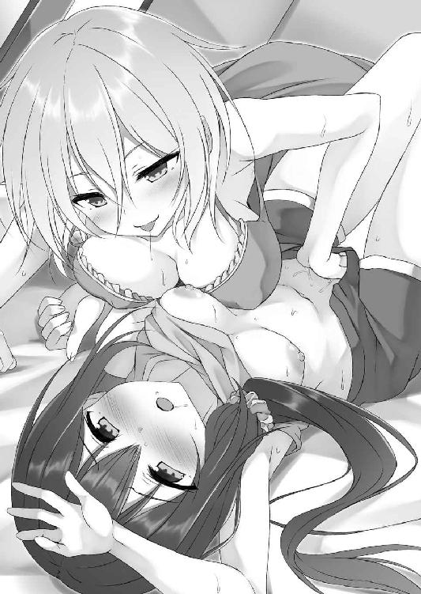
「駄目だ。これ......変になる。知らない......。こんなの初めてで......怖い！ アーニャ......ちょっと待って！ 止まって！ 頼むっ!!」
生まれて初めての感覚に恐ろしささえ感じる。だから必死にやめてくれと訴えた。
「大丈夫よ......その感覚、きっと心配するようなものじゃないわ。だから身を任せなさい。ほら、抵抗なんかしないで」
だがアーニャは聞き入れてなどくれない。
それどころかさらに指を激しくくねらせてくる。
「無理......抑えられない......」
「いいわよ。ほら......サリア......んっふ......んちゅうっ」
指で愛撫してくるだけでは終わらない。ニッコリと笑うと共に、アーニャは口付けまでしてきた。
「むっふ......んっちゅ......ちゅっる......んちゅううっ」
舌を挿し込み、激しく啜ってくる。
（駄目......き......気持ちいい......私......もうっ......）
限界近くまで昇り詰めていた肉体の後押しをするように、口付けの快楽が刻まれる。
「んっふ......んっんっ......んんんんっ!!」
肉悦が爆発した。
口付けしたまま全身を震わせる。切なげに眉根に皺を寄せながら、ぎゅううっとシーツを掴む。弓形に背中が反る。これまで感じたこともないほどの肉悦に全身が包み込まれる。
（ああ......いいっ......）
堪え難いほどの愉悦によって、サリアは達していた。
「んんんっ......はふぅうううっ......」
身体中から力が抜けていく。
全身が虚脱感に包み込まれていくのを感じつつ、女騎士は少女悪魔と口付けを続けた。
「はぁ......はぁ......はぁ......んふふ、どう？ 気持ちよかったでしょ？」
やがて唇が離れる。熱感こもった吐息を吐きながら、悪魔がそっと囁いてきた。
「ああ......よかった......」
強がりを言う気力もない。ほとんど無意識のうちに性感を肯定する。
「そう......よかった」
この答えに満足そうな表情を浮かべると、悪魔は再び唇を寄せてきた。
これにサリアも応える。
「んっ」
そっと唇と唇を触れ合わせた。
＊
「なぁ......私が言うのもなんだが、本当によかったのか？」
行為を終えてしばらくした後、ようやく落ち着いたらしいサリアがそのような言葉を投げかけてきた。
「は？ な......何がよ」
彼女が言いたいことは何となくだけれど分かっている。それでも誤魔化すように質問に質問を返した。
「何がってその......こ、こういうことをするの......アーニャも初めてだったんだろ？」
「そ......それはその......」
やはり行為の途中で思わず呟いてしまった言葉を聞かれてしまっていたらしい。
誤魔化すべきか？ それとも──迷う。
だが、今更強がったところで虚しいだけである。
「......そうよ。は、初めてよ。私だってこういうことするの......」
認める以外になかった。
「悪いっ!?」
「いや......別に悪くはないが......。ちょっと意外だな」
「悪魔らしくこういうことばかりしてる爛れた生活をしてるとでも思ってた？」
「それは......その......」
はっきりとは答えてこないが、サリアの見せた反応は明らかに問いかけに対する肯定を表すものだった。
「やっぱり」
「だ、だって仕方ないだろ！ お前はいきなり私にキスしてきたんだぞ。あんなことされたら誰だって......」
「まぁそれはそうね。でも、アレは私だって結構緊張してたのよ」
「緊張？ 何故だ......って、まさか」
こちらが言いたいことを理解してくれたらしい。
「まぁそういうこと。キスも......その、初めてだったってわけ」
今更隠しても仕方がないので素直に告げる。
「初めてって......」
「あの時、多分貴女が想像してるよりずっと私は消耗していたのよ。自分の存在を維持するだけで精いっぱいってくらいにね。だから、濃厚な接触が必要だった」
「......なるほど。しかし、だったら私と会うまではどうやって精気を集めていたんだ？」
「近隣の村の住民をちょっとね......」
「まさか」
サリアが瞳を鋭く細める。
「......別に殺したりなんかしてないわよ。そんな趣味はないから。ちょっと脅かしてただけ。森に入ってきたところを怖がらせて、恐怖の感情をいただいていたのよ」
「本当か？」
簡単には信じてくれない。当たり前だが......。
「......信じるか信じないかは貴女次第ね」
敢えてはっきりとは答えない。
「まぁ今は信じる......。そうするしかないからな」
しばらく考えた末、女騎士はそう口にした。
「しかし、話は変わるが......私が言うのもなんなのだが、よかったのか？ こんな初めてで本当に？ お前だって最初は好きな相手としたかったんだろ？」
考えたところで容易に答えは出せないと考えたらしく、話題を変えてくる。
「......それはその......」
恥ずかしいがその通りだ。
だから実際するつもりなどなかった。
今回の件はあくまでもサリアがどこに行っているのかを聞き出す為の方便でしかなかったのだ。まさか抱かれるなどという選択をするとは思ってもみなかったから......。
が、そんな計算ミスを教えることはできない。それこそ恥の上塗りだ。
「た、確かに貴女の言う通りよ。でもね、そんな初めてなんかよりも今は力を回復する方が重要ってわけ。いつまでも引き籠もってばかりもいられないしね。背に腹は替えられないってやつよ。実際、今のでかなりの精気を得られたわ」
それは事実である。
だからいいのだ。結果オーライ。大丈夫だ、問題ない。
何度も自分に言い聞かせた。
「そうか......まぁお前がそういう考えならいいが......」
と言いつつも、サリアはどこか浮かない表情を浮かべている。その顔は自分なんかが初めての相手で本当によかったのだろうか？ と、アーニャを気遣っているようにも見えるものだった。
自分だって初めてのくせに......。
本当に変わった騎士である。
そんな彼女を見ていると、これはこれで初めてとしてよかったのではないか──なんて感情が膨れ上がってくるのだから不思議だった。
「まぁ何にせよ、これはかなり効率がいい回復方法ね。キスとは比べものにならないわ。だから......んふふ」
意味ありげにサリアを見つめる。
「なんだその視線は？ って、ま......まさか......」
こちらが言いたいことに気づいたらしい。
「そのまさかよ。一度しちゃったんだから二度も三度も同じ......これからはこの方法で精気吸引をすることにしましょう」
ニッコリ笑顔でサーニャは女騎士にそう告げた。
「や......やっぱり恥ずかしいぞ。これ......キスだけじゃ駄目なのか？」
ベッドの上で一切服を纏わぬ生まれたままの姿を晒したサリアが、両手で乳房と秘部を隠す。灯りがついていない暗い部屋──それでも、悪魔の瞳ははっきりと女騎士の真っ赤になった顔を捉えていた。
普段は凛と引き締まった表情が、羞恥に塗れている。そんな初々しさを感じさせる反応に、可愛らしさのようなものを感じた。
「だからキスじゃ効率が悪いのよ。早くこの生活を終わらせる為よ。貴女だってその方がいいでしょ？」
「そ......それはその......確かにその通りなんだが......それでもやっぱり......」
肌を晒すのは恥ずかしいのだとサリアはいう。
「別に恥ずかしがる必要なんかないわ。貴女の身体......とっても綺麗だもの」
お世辞なんかではない。素直な気持ちだった。
実際サリアの身体は綺麗だ。染み一つない。
引き締まった下腹部にしなやかな太股、それほど大きくはないけれど形は美しい乳房──造り込まれた彫像のようにさえ見える肢体は、いつまでも見ていたくなるほどだった。
「そ、そういうことをいうから恥ずかしいんだ」
「なるほど......。だったらほら、これなら恥ずかしくないでしょ」
そう言うとアーニャはパチンッと指を鳴らそうとした。
が、思いとどまる。魔力を発動させて服を脱ぐという案は楽でいい。しかし、情緒というものがないような気がした。
だから敢えて見せつけるようにベビードールを脱ぎ捨てる。
しゅるりという衣擦れ音を響かせながら、乳房を、括れを、秘部を──女騎士の前にさらけ出した。
「ほら、これで貴女と一緒」
ニッコリと微笑みかける。
「う......うううっ......」
サリアは顔を真っ赤に染めつつ、ジッとアーニャを見つめてきた。
全身をジロジロと見つめてくる──特に胸元を重点的に......。
しばらくして、少し悔しそうな表情を浮かべてみせてきた。
「無い物ねだりはしないことね。貴女の年じゃ諦めた方がいいわよ」
彼女が何を言いたいのかを悟る。
どうやら胸のサイズを比較して、勝手に落ち込んだらしい。
「う、うるさいっ！」
実に悔しそうだった。
そんな姿にも可愛らしさを感じる。
「何にせよ......これなら恥ずかしくないでしょ」
同じ裸同士。自分だけじゃないのだから問題はないだろう。
「そ、そういうことじゃ......」
「何を言ってもだ～め♪ ほら、いくわよ」
瞳を細め、サリアに躙り寄るように近づくと、アーニャは躊躇うことなくキスをした。
「むんんっ！ んむううっ」
口唇を重ねただけで女騎士はビクンッと肢体を震わせる。初めて肌を重ねた時に感じたことなのだが、どうやらかなり敏感体質らしい。
「ちゅっむ......くちゅる......。ちゅっちゅっちゅっ......ふちゅううっ......」
もちろんただ口付けするだけで終わるつもりはなかった。
いつものように舌を挿し込み、口内を舌でかき混ぜる。唾液を流し込みつつ、頬を窄めてじゅるじゅると吸引行為も行った。
濃厚なキス──自然とサリアの身体からは力が抜けていく。
その隙を突くように、キスをしながら彼女の胸元に手を添えた。
「んふんっ」
乳房を揉むと、さらに敏感な反応を見せる。眉根に切なげな皺を寄せながら、まるで電流魔法でもかけられたかのようにビクンッと全身を震わせた。
「気持ちよかった？」
一旦キスを中断して尋ねる。
「べ......別にそんなこと......」
相変わらず素直ではない。
「本当に？ これでも？」
ただ、だからこそやり甲斐がある。
すぐさまアーニャは愛撫を再開した。
さらに乳房を揉む。捏ねくり回すように胸を刺激し、指で乳頭を摘まんだり、転がすように弄り回したりした。
「あっ！ それ......んっくぅっ！」
愛撫にあわせてさらに肉体をビクつかせる。
「むふうっ......ふうっふうっ......んふううっ」
ただ、嬌声は漏らしてくれなかった。
女騎士は必死に口唇を閉じ、喘ぎ声を抑え込む。
「頑固ね......なら、こういうのはどうかしら？」
我慢されると意地でも啼かせたくなってくる。
わき上がる想いに逆らうことなく、アーニャは乳房に顔を寄せると、勃起した乳首に舌を這わせた。
「あひあっ！」
レロッと舌先で乳頭を刺激した途端、これまで以上に激しく肢体を震わせる。我慢できなかったらしく、可愛らしい声も漏らしてくれた。
「これ......よさそうね？ こう？ こんな感じがいいの？ こうかしら？」
もっと悶える姿が見たい──感情の赴くままに舌を蠢かせる。ねっとりとした動きで乳首を舐め回し、やがては口唇でハムッと乳頭を挟んだ。乳首の先端部を舌で刺激すると共に、頬を窄めて吸う。じゅるじゅると淫靡な音が響いてしまうことも厭わずに......。
「あっあっ......駄目......んんっ......声が......あひんっ」
愛撫にあわせてサリアは身悶えた。
甘い嬌声を響かせ、全身を汗で濡らす。なんだか切なそうに腰を左右にくねらせたりもしてみせてきた。
心地よさそうな姿だ。
見ていると、それだけでアーニャの身体もなんだか熱くなってくる。身体中──特に下腹部がジンジンと疼くような感覚を覚えた。
気持ちよさそうなサリア──自分も一緒に感じたい。
そのような感情が膨れ上がってくる。
「だいぶいい感じみたいね。それじゃあ......今日は私も一緒に気持ちよくさせてもらおうかしら」
本能に素直にアーニャは従うことにした。
「い、一緒に......はぁはぁ......気持ちよく？ どうやって？」
荒い息を吐きながら、首を傾げてくる。
「こうするのよ」
サリアと肌を重ねるまで、アーニャはこのような行為をしたことはなかった。ただ、それでも、一二〇年も生きていればそれなりに知識は得ている。
サリアの足に手をかけると、グイッと左右に大きく開かせた。
クパッと秘部が口を開く。キスや胸への愛撫でかなりの快楽を得ていたのか、既に肉襞は愛液に塗れていた。ムワッとした女の匂いに鼻腔がくすぐられる。嗅いでいるだけで、さらにアーニャの身体も熱くなるような生々しい匂いだった。
「やっ！ こんな格好駄目だ！」
両足を大きく開き、秘部を見せつけるという体勢──流石に恥ずかしいらしく、やめてくれと訴えてくる。
「駄目よ」
けれども抗議は受け付けない。
女騎士の訴えを一言のもとに切って捨てると共に、アーニャも両足を開くと、彼女の秘部にやはり愛液で濡れ始めている自分の秘部を、グチュッと押し当てた。
「んあっ！」
「んはぁあっ」
媚肉と媚肉が密着しあう。
股間同士を密着させただけに過ぎない。けれど、それだけだというのに身体中から力が抜けそうになるほどの刺激が走った。
「な......なんだこれ？」
サリアも同じように感じているのか、戸惑いの声を漏らす。
彼女の戸惑いも分からなくはなかった。
（こんな......想像以上......）
実際、思っていた以上に気持ちがいい。正直動揺さえ覚えてしまう。
「んふふ......ここは女の身体で最も敏感な部分よ」
が、表面上は余裕を装ってみせる。
「お前......何を......」
「もちろん、こうするのよ」
答えると共に、ゆっくりとアーニャは腰を振り始めた。
ぐっちゅ......。ぬちゅううっ......。ぐっちゅぐっちゅぐっちゅ......。
「んっは......あっ！ なっ......これ......んんんっ！」
濡れた秘部で濡れた秘部を擦る。
襞と襞を混ざり合わせ、溶け合わせるように、強く腰を押しつけていく。
「ああっ！ な......くんんっ......あっあっ......これ......いい......かもっ......」
敏感部が敏感部によって刺激される。するとそれだけで、ただでさえ火照っていた肉体がより熱を持ち始めた。ビクビクと肢体が震える。自然と口が開き、甘い声が漏れた。
快楽としか言えない感覚が、身体中を駆け巡っていく。
（私......こんなに敏感だったの？）
自分でも驚いてしまうほどだった。
ただ、驚きつつも腰の動きは止めない。いや、それどころかより速く、激しいものに変えていった。
もっと気持ちよくなりたい──とでも訴えるように、グッチュグッチュと粘膜が絡み合う卑猥な音色を響かせる。
「あふんっ！ ちょっ......だ、駄目だ！ こんな激しく......んくうっ......あっあっ......これ以上は......」
ギシギシとベッドを軋ませていると、サリアがそう訴えてきた。
「これ以上は......何かしら？ んっふ......あはぁああ......はぁっはぁっはぁっ......もしかして、イキそうになってるとか？ この前までは全然知らなかったのに、あれから何回かしただけなのに......もう気持ちよくなることを覚えちゃったんだ......んふふ♪」
「そ......それは......そんなことは......ち、違う！」
首を左右に振ってみせてくる。
だが、その表情は本当に切なげなものだった。半開きの口からも「あっあっ」という喘ぎ声が断続的に漏れている。
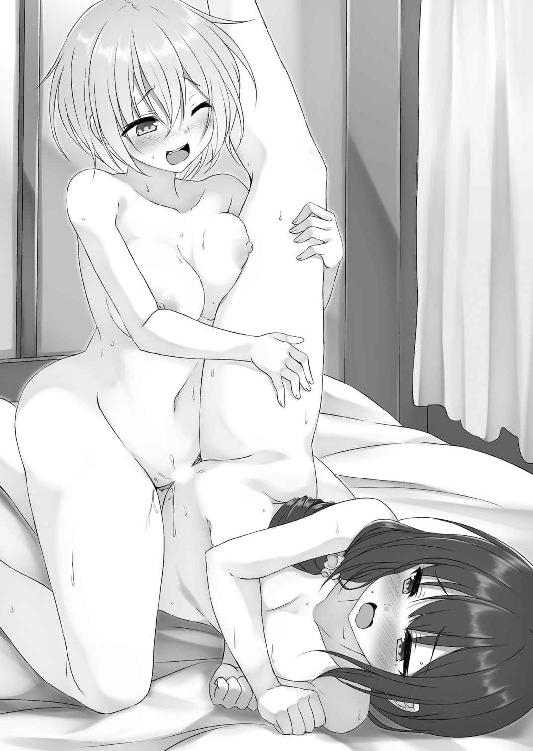
違うとは口にしてきたけれど、まるで説得力というものがなかった。
「本当に違うの？ これでも？ ほら......本当にイキそうじゃないの？」
嗜虐心をくすぐられる。
もっと悶える姿が見たいと思ってしまう。
わき上がる劣情にアーニャは逆らわなかった。
「これでも？ んっんっんっ......これでもまだ違うなんて言える？ ほら......あっふ......んはぁあ......あっあっあっ」
より強く腰を押しつける。その上で秘部だけを擦るのではなく、陰核に陰核を擦りつけたりもした。
（んんん......凄い......私も我慢できない......）
性感帯同士の接触──身体が溶け、一つに混ざりあってしまうのではないかと思うほどに心地がいい。抑え難いほどの絶頂感が膨れ上がってくるのを感じた。
「こんなの......私......んんんっ......も、もうっ......」
達しそうなのはサリアも同じらしい。これまで以上に多量の愛液を分泌させながら、ほとんど無意識のうちになのだろうが、アーニャの動きに合わせて腰を振り始めたりもしてきた。甘い声で喘ぎながら......。
「サリア......」
切なく喘ぐ姿──それを見ていたら何故かキスがしたくなってきた。
その想いに逆らうことなく、悪魔は女騎士の唇に自身の唇を寄せていく。
「あ......アーニャ......」
これに応えるようにサリアは瞳を閉じた。
「むっふ......んふううっ」
「んっんっ......んんんっ」
熱い口付けを交わす。
もちろん一回だけではない。何度も何度もチュッチュッチュッとキスを繰り返し、その上で舌を挿し込んだ。
「むっふ......んふううっ」
腰を振りつつ、これまでもそうしてきたようにサリアの口内をかき混ぜる。
するとサリアの方もアーニャの口内に舌を挿し込んできた。
ちゅっぶ......。くちゅるっ......。んっちゅぶ......。ちゅっちゅっ......ちゅずるるるぅ。
互いに互いの口腔を吸いあう。卑猥な音色が響いてしまうことも厭わない。まるで全身で繋がりあおうとしているかのように、濃厚な口付けを続けた。
「も......もうっ......サリア......」
やがて肉悦がどうしようもないほどに膨張する。
「あああ......私も......アーニャ......んんんっ」
二人に絶頂感がシンクロする。
そして──
「ああ......いくっ！」
「あっあっ......ああーっ......!!」
悪魔と騎士は同時に絶頂に至った。
強く互いの身体を抱き締めながら、肢体を痙攣させる。お漏らしでもしているのではないかと思うほどに肉花弁を愛液で濡らした。
身体中が気怠さに包まれていく。
アーニャは全身から力を抜き、小柄な身体をサリアに預けた。
「はぁああ......凄い......気持ちよかった......」
肩で息をしながら囁くように告げる。
「私も......はぁあああ......」
サリアも意地を張ることなく、素直に快感を認めてくれた。
「んふふ......んっちゅ」
そんな彼女にもう一度キスをする。
「はっふ......んっんっ......んんんっ......」
抵抗することなく、サリアも口付けを受け入れてくれた。
初めて肌を重ね合わせて以来、こうしてアーニャは毎晩のようにサリアとの行為を続けていた。
（お陰でかなり力も回復したわね。本当に想像以上......。まさかこんなに多量の精気を奪えるなんて思ってもみなかった......）
悪魔の中には人を犯す為に襲うものもいる。その気持ちも多少は分かるような気がするほどの回復量だった。
だが、それだけではない。
力が回復するから──という以上に、サリアとの行為に堪らないほどの心地よさを覚えている自分がいた。
粘膜と粘膜を接触させるだけの行為に過ぎない。だというのに何故か心まで満たされるような気がする。
（いえ......その点は違うわね）
セックスだけが充足感を与えてくれるのではない。
「本を読むのはいいが、放りっぱなしにするなといつも言ってるだろ。しっかり片付けろ」
とかいう小言や、
「へぇ......悪魔の中にはそんな存在もいるんだな」
アーニャの知識に感心してくれるような姿、
「その......今日は料理の手伝いをしてくれて......あ、ありがとうな......」
不器用に感謝の言葉を伝えてくる姿──そういったものすべてがアーニャを満たしてくれていた。
まるで〝あの頃〟みたいに......。
（いつか必ず終わりは来る。私の傷が癒えたら......。それは分かってるわ。でも......）
今の生活をいいものだと思ってしまう感情を消すことはできなかった。
ただ、そうして幸福感を覚えつつも、不満な点はある。
それは、昼間サリアがどこに行っているのかが分からないという点だ。
本当に一体何をしているのだろうか？
（身体を差し出してまで隠そうとしてること......もう我慢も限界ね）
暴いてやろう──そうアーニャは決意し、サリアの跡をつけることとした。
（悪魔狩りに見つかる可能性もゼロじゃないけど......まぁ大丈夫でしょう）
サリアが用意してくれた朝食を食べつつ、ニヤッと邪悪な笑みを口元に浮かべる。
「なんだその顔？ 何か企んでるのか？」
一緒に暮らし始めて既に一ヶ月ほどが過ぎている。それだけの間共同生活をしてきたからか、いつの間にかサリアはアーニャのちょっとした変化にも気づくようになっていた。
「別になにも～」
表情の変化を悟られてしまったことに多少動揺しつつも、それを表には出さない。
「まぁそれならそれでいいが......。あ、そうだ、今日の夕飯は何がいい？」
「え？ そうね......ああ、あれがいいわ。前に貴女が作ってくれた茶色い辛みのあるスープ」
「茶色いスープって......あんまり気持ちがいい言い方じゃないな。あれはカーレという名前だ」
「ああ、それそれ......それお願いね」
「......分かった。お前の方は......洗濯の取り込みと風呂の掃除を頼むぞ」
「任せといてよ♪」
パチッとウィンクしてみせる。
「......それじゃあ、行ってくる」
そんな朝のやり取りを済ませた後、いつも通りサリアは家を出ていった。
「いってらっしゃ～い♪」
アーニャは笑顔で見送る。
が、サリアが家の前の角を曲がった辺りで、少女悪魔はニコニコ笑顔を──不敵な悪巧み顔に変えた
「んふふ......覚悟しておきなさいサリア。今日こそ貴女の秘密を暴いてあげるから」
誰にともなく呟いた。
それからだいたい一時間ほど経ってから、アーニャも家を出る。しっかり戸締まりをした上で、街中に向かって歩きだした。
既にサリアが家を出てからかなりの時間が過ぎている。当然尾行など不可能だ。
（でも......私には魔法がある。私に精気を与えてきたことを後悔しなさい♪）
心の中で勝ち誇り、悪魔は魔法を発動した。
捜し出したい人物が今どこにいるのかを把握する魔法を......。
（この魔法を使えば誰だって捜し出すことができる──ってほど万能なわけじゃない。捜せる相手は自分がよく知ってる相手だけ。だからかなり限られた相手しか捜せない。でも、それで十分。一ヶ月も一緒に暮らしてれば......）
サリアの姿を脳裏に想起する。
（いた）
途端に反応が返ってきた。
（それじゃあ、行きますか）
そちらに向かって悪魔は歩きだす。
結果、辿り着いた場所は──
「なに、ここ......？」
首都大通りに面する一軒のこぢんまりとした店へとサリアは入っていった。
店の入り口には看板が立っている。そこには『首都名物元祖侍女喫茶おかえりなさいませ』という店名が書かれていた。
「......侍女喫茶？ ってあれよね」
侍女喫茶──そんな店があるという話は聞いたことがある。
確か店員が侍女に扮し、客を主としてもてなすという店のはずだ。誰でも気軽にかつての貴族様気分を味わえる──とかいうのが売りらしいが......。
サリアの反応があるのはこの店の中からである。
（なんでこんなところに？ まさかサリア......）
一つの可能性に辿り着く。
サリアの家は没落貴族だ。しかも、現体制に反対して落ちぶれた家だという、現代社会においてある意味差別されるような存在だ。実際、一緒に暮らすようになってからサリアの知り合いという人物に会ったことがない。
（孤独という寂しさを紛らわせる為？ もしくは......）
かつてご先祖様が味わっていただろう貴族様気分に浸る為か......。
何にせよ面白い。
（これはいいネタを手に入れることができそうね♪）
ニヤッと笑いつつ、店へと足を踏み入れた。
「おかえりなさいませお嬢さ──」
途端にメイド服を身に着けた店員が声をかけてくる。
ただ、その言葉は最後まで続かなかった。
「......はへっ!?」
お嬢様といいきる前に、言葉を止め、店員は間の抜けた声を漏らしてきた。
「はぁっ!?」
しかし、それは店員だけじゃない。
アーニャもポカンと口を開き、驚きの表情を浮かべる。
「サリア？」
「あ......アーニャ!?」
エプロンドレスに白いカチューシャ、黒のニーソックスというメイド服に身を包んだ店員は──サリアだった。
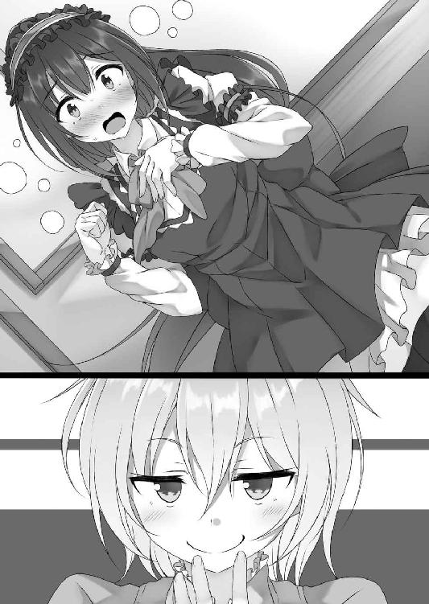
＊
「んふふ......バイト。そう......バイトか......。なるほどねぇ」
店のテーブルに腰を下ろしたアーニャが自分を見つめてニヤニヤと笑っている。完全に人を小馬鹿にしている顔だ。
（ぐううっ......なんたる屈辱......。くそっくそっくそぉおおおおっ！）
穴があったら入りたい──それほどまでに恥ずかしく、悔しい状況だった。
「しっかし、サリアがこんなところで働いていたとは......。意外ねぇ。らしくないっていうか......。まぁ仕事をしてること自体は分かるんだけど、どうしてわざわざ侍女喫茶なんか選んだわけ？ もしかして侍女服に憧れてたとか？ それとも騎士よりもメイドになりたかった──とかかしら？ ねぇねぇ、どういうことなのぉ？」
からかいの言葉を向けてくる。
「そ......そんなわけあるか！ 仕方なく！ 仕方なくだっ!!」
「仕方なく？」
「そうだ......」
これは嘘ではない。
この店で働くことになったのはあくまでも不可抗力だった。
「お前も知っての通り、私は一人暮らしだ。一応父上達が残してくれた遺産があるので最低限の生活はできている状況だが、遺産などというものは使っていればいつかはなくなってしまう。それは悪魔であっても分かるだろう？」
この問いかけにアーニャは「まぁね」と頷く。
「だから遺産に甘えることなく私は働く必要があった。とはいえだ。私が目指しているのはあくまでも騎士。自主訓練をしたり......」
「私のような悪魔を退治したりして名を上げたりしなくちゃいけない？」
「......まぁそういうことだ」
だから仕事を選ぶ際にもある程度自由時間があるものが必要だった。
そこでサリアが選んだのが派遣ギルドである。
「派遣ギルド......ああ、聞いたことがあるわ。仕事が必要な人には仕事を、人材が必要な人には人材を派遣するギルドね」
「そういうことだ......。で、この前ギルドから連絡があったんだ。次の派遣先が決まった──と」
「......それがここだったってわけね」
流石に察しがいい。すぐにサリアの状況を理解してくれた。
「まぁそういうことだ......」
頷いてみせる。
「なるほどねぇ」
やはりにやついたまま納得したように頷きつつ、悪魔は店内を見回した。
「しかし、それにしてもまさか......サリアが侍女喫茶とはねぇ。女騎士サリアさんがメイドになるなんて......」
アーニャの肩が震える。
「それにしてもまさか......身体を差し出してまで隠したかったことがこれとは......。ふふ......うふふふふ......あは......あははは」
我慢できないといった様子で悪魔は笑いだす。
「だ......だから隠したかったんだ......」
想像通りの反応である。騎士としてこれほどの屈辱はない。口惜しさにギリッと奥歯を噛み締めた。
「それにしても......酷いじゃないか！」
そんな悔しさを誤魔化すように、アーニャを睨む。
「何が？」
はてなっと悪魔は小首を傾げた。
「何がもなにもないだろ！ 私はその......何をしているのか話さない代わりにお前にその......だ......だだだ......抱かれたんだぞ。なのに、ここに来て私の秘密を暴くなんて......」
「ああ、なるほどね。でも、それは言いがかりってものよ」
「言いがかりだと？」
「ええそうよ。だってそうでしょ？ 私は貴女から聞き出すのを諦めただけなんだから。自力で見つけない。貴女が何をしているか探らない──なんてことは一言も口にしていないんですけどぉ。私が言ってること、何か間違ってますかぁ？」
詭弁である。
けれども彼女の言葉は事実であり、言い返すことができない。
「ぐうう......悪魔めぇ」
「はい。悪魔で～す♪」
一々癪に障る奴である。
なにか一言言い返すことはできないだろうか？
そんなことを考えている最中、ガランッと店の戸が開いた。
「ほら、お客さんが来たわよ」
挑発的な視線を悪魔は向けてきた。
「くっ......ぐううっ」
現在店にいるのは料理担当の店長と自分だけである。放っておくことはできない。
「......お、おかえりなさいませ、ご主人様」
アーニャには絶対に見せたくない姿だ。が、仕事を放棄するわけにはいかず、客を迎え入れた。精いっぱいの笑顔（ただし引き攣っている）で......。
＊
（これはなかなか面白いものが見れたわね。想像以上というか......想像の斜め上を行っていたというか......。何にせよ、ここに来てよかったわ）
アーニャは実に上機嫌だった。
何しろあのお固いサリアの恥ずかしい姿を見ることができたのだ。これをネタにすれば向こう一月──あるいはもっと長い時間からかうことができるだろう。
（この話題を出すたびにサリアがどんな反応をするか......想像するだけでもワクワクしてくるわね）
などということを考えつつ、ニコニコ顔でサリアの働きっぷりを見つめ続けた。
だが、どうしてだろうか？ 理由はよく分からないのだが、しばらくサリアの働きぶりを眺めていたら、なんだか少しムカムカしてきた。
別段アーニャが不機嫌になるようなことをサリアはしているわけではない。ただ仕事をしているだけだ。
笑みを浮かべ──
「おかえりなさいませご主人様」
客を迎え入れる。
「ご主人様、紅茶でございます」
注文されたものを客に差し出す。
「え？ ふ......フーフーサービスでございますか？ あの......その......わ、分かりました。ではその......始めますね」
恥ずかしがるような素振りを見せつつも、客が注文した特別サービスに応え──
「ふーふーふーふー、おいしくな～れ♪」
などと料理に自分の息を吹きかけたりもした。
アーニャを意識しているのか、その顔は真っ赤である。
はっきり言って本来であれば実にからかい甲斐がある姿だった。これは面白いとこれまで以上にニヤついた笑顔を見せつけてやるべき場面である。
しかし、どうしてかこの状況を気に入らないと思ってしまう自分がいた。
確かにサリアは間違いなくこちらを意識してはいるだろう。ただ、だからといって構ってくれるわけではない。
アーニャのことを意識しつつも、サリアの意識は客にばかり向いていた。
そのことにムカムカとしたものを感じてしまう。
（なに？ この感じ......なんなのよ......）
苛立ちばかりが募っていった。
だからなのだろうか？ 気がつけばアーニャはテーブルの上に置かれたベルを鳴らしていた。
「......なんだ？」
不機嫌そうにサリアがテーブルへとやってくる。
「なんだ？ 客に対する態度には見えないんだけど」
「だ、だがお前は......」
「今はお客様です～」
エッヘンと胸を張ってみせる。これに対しサリアは、何故か真顔になった。
「なによその顔？」
「......知ってるかアーニャ。お客になるには条件があるんだぞ」
「え？ 何よそれ？」
どういう意味だろうか？
「店が客を遇するのは、それに見合った代金をいただくからだ。アーニャ......お前は代金を持っているのか？」
「..................」
返事ができない。理由は簡単だ。持ってないから......。だが、しかし、ここで引き下がるのは悔しい。だからこそ、アーニャは笑う。
「それくらいどうとでもなるわよ。私は悪魔よ。それは貴女が一番よく知ってるでしょ？ だ・か・ら......私はお客様よ」
ジッとサリアを見つめる。この視線に対してサリアは「......確かに、そういうこともありうるか......」とブツブツ呟いた。こうなったらもうこちらの勝ちである。
「さぁ、店員らしく私に振る舞いなさい！ お客様は神様よ」
「神様って......お前は悪魔だろ......。だが、客となると......ぐ、ぐぬぬぬぅ」
悔しそうな表情を浮かべる。
しかし、流石は生真面目な騎士様と言うべきか、
「な......なんでしょうかお嬢様？」
ヒクヒクと表情を引き攣らせながらもしっかり接客してきた。
「それでいいの......んじゃ、この店のメニュー......全部私にちょうだい」
「──は？ ぜ、全部？」
「そう、全部。お腹空いてるの」
「いや、だが......」
「私はお客様よ」
「ぐ......か、かしこまりましたお嬢様」
頭を下げ、サリアは厨房へと入っていった。
しばらくするとまずはフワフワの卵で米を包んだオームという料理が運ばれてきた。
「なかなか美味しそうね」
「ごゆっくりお嬢様」
すぐにサリアは下がろうとする。
「待ちなさい」
そんなサリアを引き留めた。
「ま......まだ何か？」
「何かも何もないわ。美味しい呪文とお絵かきサービス......お願いするわね」
口角を上げ、不敵に笑う。
侍女に「おいしくな～れ♪ おいしくな～れ♪」と呪文を唱えてもらいながら、好きな文字や絵をケチャップでオームに描いてもらうというサービスだ。
「お願いするのは字よ。大好きですアーニャお嬢様♥ ってね」
「なっ！ そ......そんなの......」
「できるわよね？」
有無を言わせない。
貴女は侍女で私はお嬢様──分かってるわね？ と視線で訴える。
これには逆らうことができないらしく、やがて観念したようにサリアは「分かりましたお嬢様」と頷くと、ケチャップをを手に取り──
「お、おおお......おいしくな～れ。おいしくな......なぁれ......」
実にぎこちない様子で呪文を唱えながら、しっかり命じた通りの言葉をオームに描いてくれた。
ただし、その字は酷く歪で歪んでいたが......。
「はぁあああ......」
しかも、字を書いただけだというのに大変な大仕事を終えた後のように大きく肩で息をする。
そのような有様がまた、アーニャに楽しさを感じさせてくれた。
「まったく大げさねぇ」
「う......うるさい。私にだって矜持というものがあるんだぞ！」
「矜持か......ふふ、流石は騎士様って感じね。でも、まだまだ注文は残ってるのよ。最初の一回でその有様でこれから保つわけ？」
まだ仕事は残っているのよと教えてやる。
「──あ」
これにサリアはポカンと口を開き、間の抜けた表情を浮かべた。
そうしてその後も散々アーニャはサリアを扱き使った。
他の客達に見せつけるようにサリアにスープをフーフーさせ、その上で「は、はいお嬢様......あ、あ～ん」もさせた。
ケーキを切り分けさせたり、時には歌を歌わせるなどと言うことまで......。
他の客達が悔しそうな表情を浮かべるくらいに、サリアを独占してやった。
お陰でイライラが消える。料理こそサリアが作ったものではなかったので少し不満が残ったが、それでもとてもいい気分で一日を過ごすことができた。
「はぁああ～、今日はホント楽しかったわ。こっちに来てから一番充実した一日だった気がする。ありがとねサリア♪」
最高に満足げな笑みを浮かべつつ、立ち上がる。
「......も、もう二度と来るな......」
対する女騎士はぐったりとしていた。
「それじゃあね」
そのような姿にさえも喜びを覚えつつ、店を出ていこうとする。
「いや、ちょっと待て！」
が、サリアに呼び止められた。
「なによ？」
「なによじゃないだろ。代金だ」
「ダイキン？」
一体なんのことだろうかと首を傾げる。
「だから、注文した分の金だ！」
「ああ......なるほど。って......そんなこと言われても無理よ」
「無理？」
「だってそうでしょ？ お金なんか持ってないもの」
一日中サリアの家でグータラしてるだけの生活である。それに自分は人ではなく悪魔だ。金など持ってるわけがない。代金など払えるはずがなかった。
「持ってないって！ お前......さっきは悪魔だからどうとでもなるって......」
プルプルサリアは震えだす。
「ええ、どうとでもなるわ。だってそうでしょ？ 立て替えてくれる人がいるんだもの」
「は？ だ、誰だそれ!?」
キョロキョロとサリアは周囲を見回す。
そんな反応を見つめながらニタッと笑いつつ、アーニャはサリアを指差した。
「なんだ？ どうして私を指差す？ って......ま、まさか......」
流石に察してくれたらしい。
「んふふ♪ そーいうこと。代金を払うのは貴女よ」
「な、なんでそうなる!? どうして私がお前の為に!?」
「......ここで無銭飲食で捕まったら......私が悪魔だってことがバレちゃうわよ。それでもいいの？ そうなったら貴女も罪に問われるかもよ。悪魔を匿った罪ってやつで」
「......そ......それは......確かに......」
「そういうわけだから立て替えておいてね。んじゃ♪」
ヒラヒラと手を振り、店を出ていこうとする。
「駄目だ」
しかし、首根っこを掴まれてしまった。
「な、なによ？」
「なによじゃない。いいか、流石に店のもの全部の立て替えなんかできないし、するつもりもないぞ」
「でも、払えないし......。そうなると無銭飲食で......」
「分かってる。だからな、考えたんだ」
目を血走らせながらサリアは笑う。
「え？ な......何を？」
なんだか嫌な予感がした。
「......知られてしまったからには一蓮托生だ。悪魔アーニャ......お前にも恥をかいてもらうからなぁ」
そう言うと共に、サリアはアーニャを引き摺って店の奥へと向かう。
「な、なによ！ ちょっと放して！ 放しなさいよぉおおおっ！」
悪魔の悲鳴が店内に響き渡った。
＊
（散々私をからかってくれたアーニャにも同じ辱めを与えてやる。代金を払い終えるまで己がしたことを悔いるがいい──と、そう思ったのに、何故だ？ どうしてこうなる？ なんでアイツは......）
アーニャが店にやって来てから数日後の仕事中、サリアは悪魔のメイドとしての働きぶりを見つめていた。
「おかえりなさいませご主人様♪ さぁ、こちらへどうぞ♥」
サリアが身に着けているものと同じエプロンドレスに白いカチューシャ、黒のニーソックスという姿で、悪魔は客を迎え入れ、テーブルへと案内する。実に手慣れた様子で、実に堂に入った態度だった。
（アイツはどうしてこんなに簡単にこの状況に溶け込んでるんだっ!?）
羞恥などまるで感じさせない。
サリアなんか今でも「ご主人様」「お嬢様」という時には恥ずかしさで赤面してしまうというのに......。
（いや、だが......奴は態度こそ堂々としてるが......仕事ぶりは酷いぞ。今だってほら......）
悪魔が厨房から紅茶を運んでくる。店内はそれほど広くはないので、歩く距離は僅か十数歩ほどに過ぎない。だが、それほどの距離でしかないというのに、悪魔はいきなりつまずいてスッ転んだ。
ガッシャアアアンと紅茶が割れる。
「あっちゃ、またやっちゃったぁ」
床に広がる紅茶と陶器の破片を見て、あ～あと悪魔はため息をついた。
またやった──その言葉通りこうしてカップを割るのはこれで十回ほどになる。働き始めて数日しか経っていないというのに......。その数はあまりにも多かった。
どうやら本当にこれまで身の回りのことはすべて魔力を使って済ませていたらしく、恐ろしく悪魔は不器用だったのである。
はっきり言って酷いなんてものじゃない。
（こんなの......みんな呆れるだろ）
蔑まれてたっておかしくない仕事ぶりだった。
だが、だというのに──
「アーニャちゃんはホントドジだなぁ」
「でも、そういうところがまたいい！」
何故か客達からの評判は上々である。
アーニャがしたことで紅茶の到着が遅れるというのに、怒りだしたりしない。それどころか喜んでいるようにさえ見える。
「てへへ♪」
コツンッと自分の後頭部を叩いてペロッと舌を伸ばすアーニャ。はっきり言ってあざといことこの上ない姿だ。ちょっとムカッとするレベルである。
「ああ、可愛い！ あざと可愛いよアーニャちゃん！」
だというのにどうして大人気なのか？
（どうしてだ？ 何がいいんだお前ら！ そこの窓辺に座ってる客！ お前なんかこの間スープをぶちまけられて火傷までしてたじゃないか！ なのになんでそんなにデレデレした表情を浮かべられるんだ!?）
わけが分からない状況だった。
どうして？ 何故？ なんで？ 疑問ばかりが浮かんでくる。
理由を探る為に仕事しつつアーニャの様子を観察し続けるのだが、理由はさっぱり分からなかった。
「ねぇねぇアーニャちゃん」
観察の最中、一人のちょっと軽薄そうな見た目の常連客がアーニャに声をかけた。
「ん？ なんでしょうかご主人様♪」
悪魔とは思えないほど可愛らしい笑みを浮かべ、男に近づいていく。
「あのさ、この後......暇？」
すると男はそのような言葉をアーニャへと投げかけた。
「この後？ 仕事ですけど」
「いやいや、そうじゃなくてさ、その後だよ。仕事が終わった後暇なのかってこと」
「ああ、そういうことですか。でも......暇だったらなんなんです？」
無邪気な様子でアーニャは首を傾げる。
男が何をいわんとしているのか、すぐにサリアは理解することができた。もちろん、見た目こそ少女だが既に齢一〇〇歳を超えているアーニャにだって彼がいわんとしていることは分かっているのだろう。
ただ、それは決して表に出さない。
（..................）
そんな態度になんだか少しムカッとするものをサリアは感じた。
理由はよく分からない。けれど、なんだかイライラしてしまう。
「なにってその......もし暇なら遊びに行かないかなって思ってさ。どうかな？ いいところ知ってるんだけど」
そのような苛立ちには当然気づかず、男はアーニャにそのような言葉を投げかけた。
「いいところ？ それってどんなところかしら？」
アーニャもそれに乗っかる。
「どんなってそれはねぇ」
アーニャにペラペラと男は話しかけ続ける。
「へぇ、凄いですね。それ......ちょっと興味あるかも」
悪魔も拒むことなくその話に乗った。
そのような態度にさらに苛立ちが募る。何故か見ていたくなかった。
だからだろうか？
「はい、話は終わり。仕事中よ」
気がつけばサリアは二人の会話に割って入っていた。
「え？ ちょっと待ってよ～」
男が抗議の言葉を向けてくる。
「申し訳ありませんご主人様──私達も忙しいもので」
そんな男を刃のように鋭い視線で睨み付ける。
「へ？ あ......は......はいっ......」
男は呆然とした表情を浮かべ、コクコクと頷いた。
「さぁ、働きなさい」
むんずっとアーニャの手を取り、引っ張る。
「ふ～ん」
すると悪魔はなんだか楽しそうな表情を浮かべ、サリアを見つめてきた。
「な、なんだ......？」
「別になんでもないわ。ただ......やっぱり貴女って可愛いところあるわよね」
意味深な言葉を向けてくる。
わけが分からない。ただ、何となく恥ずかしさを感じ、サリアは顔を赤く染めた。
「へ、変なこと言ってる暇があったら働くぞ！」
「はいは～い♪」
サリアの言葉に頷き、アーニャは空になった食器を下げようとし──また割るのだった。
スッ転び、少し痛そうに自分の頭を撫でる。ただ、その表情はなんだかとても楽しそうなものだった。
＊
「働くっていうのも意外に悪くないわね」
仕事をした帰り道、夜空の下を一緒に並んで歩いていると、アーニャがそのようなことを口にしてきた。
実に悪魔らしくない言葉である。こんな言葉をアーニャが口にするなんてまるで思ってもいなかったので、あまりの驚きに一瞬サリアは足を止め、ポカンと口を開いた。
「何よその反応。そんなに私の言葉が意外だったかしら？」
心外な反応だ──とでも言いたげな表情を浮かべてみせてくる。
「それはそうだろ。お前は悪魔なんだから」
人間の仕事をして悪くないなどという悪魔など聞いたこともない。
「無理矢理働かせておいてその言い草？」
「それはそうだが......でも......」
人がイメージする悪魔とは、絶対的な強者だ。
弱者である存在から何もかもを奪う存在。己の欲望のままに生きる──それが悪魔という存在のはずである。
ということを告げた。
「なるほどね。まぁその認識はあながち間違ってないと思うわよ。人は弱者で悪魔は強者──それは事実なんだから。だから実際......」
悪魔は他者のものを奪うことを当然のことだと思っている──とアーニャは語る。
「だって奪えるんだからね」
労働をして対価を得るなど考えることもできないらしい。
「だろ？ だからお前の言葉を意外に感じたんだ。悪魔が労働して楽しいだなんて、想像もできないだろ？」
「ああ、確かにそうね」
クスッと悪魔は同意するように笑った上で、
「でもさ、意外なことってのは大事なことなのよ。想像もしてないことをしてみたり、させてみたりすると、新たな一面が発見できる。そういうことで世の中の楽しさってのはどんどん広がっていくのよ」
そう言葉を繋げてきた。
これに再びサリアは驚き、立ち尽くす。
「またその反応？」
不満そうにプクッとアーニャは頬を膨らませてみせてくる。
「あ......いや、すまん。でも、ちょっと本当に予想外だったから......。まさか悪魔の口からそんな言葉が出るなんて」
仕事云々の話よりも遥かに意外な意見だった。
「確かにそれはそうかもね。普通は言わない。私はその......自分で言うのもなんだけど、悪魔としてはちょっと異端だからね」
異端──そう口にした時、アーニャは少しだけ寂しそうな表情を浮かべた。
なんだか少し気になってしまう。
これまで、アーニャは悪魔だ──そうサリアは自分自身に言い聞かせ続けてきた。そうすることで深く彼女に踏み入れないようにするかのように......。
けれど、今の姿や言葉に、初めて悪魔ではなく、アーニャ自身のことを知りたいと思った。
「その......もしよかったら、私にお前のことを聞かせてくれないか？」
躊躇うことなく尋ねる。
「私のこと？」
「ああ、イヤだったら別にいい。でも、知りたい。私はお前のことが」
はっきりと自分の想いを告げた。
「退治する悪魔のことを知って何か得なことでもあるのかしら？」
茶化すような言葉を向けてくる。
けれど、サリアは瞳を逸らすことなくアーニャを見つめ続けた。
この視線を真っ直ぐ悪魔は受け止め──しばらくした後「はぁ......分かったわよ」と頷いてくれた。
「ただし、あんまり面白い話じゃないけどね」
街外れの少し小高い丘──夜空に輝く星々がよく見える場所で、アーニャはサリアに自分の話をしてくれた。
「私はね......人に育てられた悪魔なのよ」
「人に？」
「そう......私の親はね、それはもう......人間の価値観からすれば悪い悪魔だった。それこそさっき貴女が話したイメージ通りのね。一体何人の人間を殺したのか......。多分本人達にも分からないでしょう。だから殺された。悪魔狩りにあっさりとね」
力に慢心し、力で他者を虐げてきた。だから力に破れたのは因果応報という以外にない、とアーニャは笑った。
「で、その時まだ子供だった私も当然殺されそうになった。当たり前よね。人間にとって悪魔は悪をなす魔の存在なのだから......」
しかし、助けられたのだという。
「悪魔だから等しく悪なのではない。悪魔だとか人間だとか関係なく、悪として育ったものが悪なのだ。だから殺す必要などない──私を救ってくれた悪魔狩りの言葉よ。でも、正直それはどうなんだろうって幼いながらに思ったわ」
「何故？」
「理由は簡単。私は私の両親の死に、なんの感慨も抱かなかったから。悪魔ってね、無慈悲な存在ではあるけれど、結構同族に対する想いは強かったりもするのよ。だから両親にはそれなりに優しく育てられた。なのに......力がないから死んだ。弱い存在だから滅びたのだ......な～んて悪魔らしいことしか思わなかった」
肉親に対する情などない。
両親を殺した者に対しても憎しみさえ抱かない。
育ちなど関係ない。悪魔は悪魔でしかないのだ──と、アーニャは考えたらしい。
「だから私は私を救った悪魔狩りに言ってやったの。私は悪魔。人とは相容れない存在。きっと貴方は私を滅ぼさなかったことを後悔することになるってね。そうしたら......なんて答えられたと思う？」
などと言いながら、当時のことを思い出したのか、アーニャは楽しそうに笑った。
「そんなことを言って後悔するのはお前の方だ......って言ったのよ。お前は幸せになる。でもって、幸せすぎて悪魔とはとても言えない存在になる。だから、そんな生意気な口をきいたことを絶対後悔することになる。きっと今の言葉を後々思い出して、なんであんな恥ずかしいことを言ってしまったんだぁああああって、悶々とした夜を過ごすことになるだろう──ってね」
「な、なかなかお茶目な悪魔狩りだな」
「ホントにね」
頷きながら昔を思い出すようにアーニャは遠い目をした。
「でも、おかしな人間だったけど本当に凄い奴だったわ。まるで本当の親みたいに私を育ててくれた。周りからは悪魔なんかを育ててるってことで色々蔑まれたりもしながら......。それでも、私のことをいつも一番に考えてくれていた。色々なことを私に教えてくれた」
「......それが悪魔っぽくない思考の正体か」
「そんなところね。でも......しょせん私は悪魔。どんな生き方をしてもそれは変わらない。それを私はイヤというくらいに教えられた」
そこで一旦言葉を切ると、悲しそうな表情を悪魔は浮かべた。
「..................」
気持ちがいい話ではないのだろう。それは理解できた。だから促すことなく言葉の続きを待つ......。
しばらく沈黙が広がった。
後、アーニャは口を開く。
「同胞である私を奪いに別の悪魔が私が暮らしていた村に現れたのよ。大勢の村人が殺されたわ。当然悪魔狩りはそいつに戦いを挑んだ。でもね、その悪魔──私の両親なんかよりも遥かに強い奴だったのよ。悪魔狩りでも歯が立たないくらいに......」
でも、それでも、悪魔狩りは力を振り絞って悪魔を滅ぼしたのだとアーニャは語った。
「ただ、戦いの最中に致命傷を負ってね......。そのまま死んじゃった」
そこでアーニャは言葉を切ると、夜空を見上げた。
「で、悪魔狩りの......義父さんの死体を見て思ったのよ。ああ、やっぱり私は悪魔だったんだなって」
「......どういうことだ？」
「簡単なこと。涙一つ流れなかったから。義父だった。本当の父よりもずっと......。なのに、私は涙一つ流さなかった。感情もほとんど揺らがなかった。というよりも、完全に消えていた──で、思ったのよ。ああ、私はやっぱり悪魔なんだってね」
人間と悪魔は一緒にいてはいけない。絶対に。何故ならば根本からなにもかもが違う存在なのだから......。
「私は悪魔。義父さんは魔法が使える悪魔狩りだったから私に魔法で精気をくれることができた。でも、義父さんは死んだ。だから私は人を襲わないともう生きてはいけない。人の村では生きてはいけない......」
だから人里を離れ、森に入ったのだとアーニャは語った。
「とはいえ、森暮らしでも精気はいるからね。当然人を脅かして、たっくさん奪ったわ。まさに悪魔の所業ね。ふふ」
そこまで語り笑みを浮かべると──
「ってわけで、私の話はおしまい。ほら、面白い話じゃなかったでしょ」
などとあっけらかんと告げてきた。
重い話をした後とは思えないほど晴れやかな顔である。普段と何ら変わることのないように見える顔......。
けれど、何故だかサリアにはその表情が痛々しいものに見えた。小柄な身体もなんだかいつもよりもずっと小さく......。
「さて、それじゃあさっさと家に帰りましょうか。今晩は確かパスタだったわよね。ちゃんと美味しいもの作りなさいよ」
などと言いながら悪魔は歩きだす。
そんな彼女の手を、サリアは無言で掴んだ。
「サリア？」
不思議そうにアーニャは首を傾げてくる。
サリアはその問いに答えることなく、アーニャの身体をギュッと抱き締めた。満天の星の下で......。
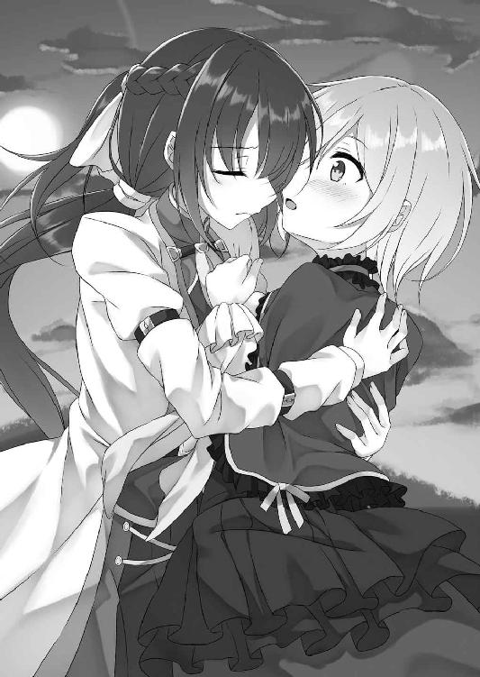
「ちょっ──」
突然の出来事にアーニャは驚きの表情を浮かべると、身を捩って逃げようとしてみせてきた。
しかし、放さない。
ギュッと抱き締め続ける。
するとアーニャは諦めたように抵抗する力を抜いてきた。サリアに身を任せてくる。
女騎士はそのまましばらくの間、悪魔の身体を抱き締め続けた。
「って、いつまでこうしてるわけ？」
が、流石に長すぎたのか、やがて悪魔が呆れたように呟いてきた。
「へ？ あ......そ、その......すまないっ！」
アーニャの言葉で正気に戻される。
慌ててサリアは少女悪魔の小柄な身体を放した。
「......別にいいけどね。でも、いきなりどうしたわけ？」
「どうって......それは......」
自分でも理由はよく分からない。ただ、アーニャが寂しそうに見えて......。
なんと答えればいいのか分からなかった。
動揺し、視線を泳がせる。
「......ねぇ、一つお願いしていいかしら」
するとアーニャがいきなりそんなことを言ってきた。
「お願い？ なんだ？」
「......精気が欲しくなったわ。もらってもいい？」
ジッとこちらを見つめてくる。
宝石のように綺麗な瞳だ。何故かこの目を見ていると心が落ち着いてくる。
「......ああ」
動揺が収まるのを感じつつ、頷いた。
「ありがとう」
アーニャは笑う。
そして、微笑みながら、サリアの唇にそっと唇を重ねてきた......。
「その......もしよかったら出かけないか？ 今日は仕事も休みだし」
休日、サリアは少し緊張しつつもアーニャにそう声をかけた。
「出かける？ それ、本気で言ってるわけ？」
流石に驚いたような表情をアーニャは浮かべる。
「もちろんだ」
頷いてみせると「なんでまた？」と首を傾げてきた。
「簡単なことだ。いつも引き籠もってばかりじゃ身体に悪い。だからたまには出かけたって構わないだろう」
「なるほどね。まぁ、貴女がそういうなら別にいいけど、でも、本当に構わないの？ 悪魔と一緒に街を歩くなんて許されないわよ。それに、危険だって考えないわけ？」
「それは......」
流石に即答はできない。
「でしょ？ なのにどうして？ もしかして、この間の話をしたから？ でも、私が言うのもなんだけど、あんまり信用しない方がいいわよ。私は悪魔。平気で嘘だってつく存在だってこと......忘れてるんじゃない？」
分かりやすいほどの悪巧み顔をアーニャは浮かべてみせる。
確かに彼女が言う通りではあった。悪魔の中には人の心につけいるものも存在している。言葉巧みに人につけ込み、洗脳してしまう。心も身体も虜にし、己の思うがままに動く操り人形に変えてしまうのだ。
この間の過去話だって、もしかしたら洗脳の足がかりだったという可能性だって十分考えられる。
だが、それでも──
「分かってるさ。でも、お前が本当にそういうことを考えているのなら、信用しない方がいい──なんて言わないと思うが」
自分が感じたことを素直に伝える。
するとアーニャは一瞬言葉に詰まり、顔を赤く染めた。
「ほら......図星だろ？」
初めてこの悪魔に対して上に立てたような気がした。嬉しくなり、笑う。
「な......何言ってんのよ。こういう反応さえも狡猾な罠かもしれないのよ！」
「それはそうだ。でも、それならそれでいいさ。その時はお前を斬る。騎士としてな」
笑いながらいつも腰にぶら下げている剣をぽんぽんと叩いてみせた。
この反応にアーニャは少しだけ考えるような間を置いた後「はぁ」と息を吐く。
「貴女の考えは理解できた。はいはい......。だけどさ、本当になんでいきなり？」
サリアの考えが理解できないというように首を傾げてみせてくる。
「なんでって、もちろんお前の話を──特にお前の父親の話を聞いたからだよ」
「義父さんの？」
「そう。お前の父親が言った、悪魔だから等しく悪なのではないって言葉......それで思ったんだ。悪魔としてではない。アーニャとしてのお前を知りたいってさ」
そう言って真っ直ぐアーニャを見つめた。
この視線を受けた悪魔は一瞬こちらから視線を外す。なんだか動揺しているような態度にも見えた。
ただし、それはあくまでも一瞬であり、すぐさま皮肉っぽい表情を浮かべてみせてくる。
「私は悪魔よ。それ以外の何ものでもない。そう話したと思うけど」
義父が死んでも涙さえ流さなかった悪魔──確かにアーニャは話の中で自身をそのように評した。
「そうだな。でも......それはお前の主観でしかない。私は私でどうなのかを判断させてもらうよ」
「......馬鹿ね。悪魔なんかと一緒に行動？ もし誰かにバレたら騎士になれないわよ。悪魔の眷属──悪魔崇拝者と思われても仕方ない。その意味、理解してるわけ？ そうなったら、貴女はずっと孤独の中で生きることになるわよ。もちろん、悪魔崇拝の罪で死刑という可能性だってあり得る」
厳しい言葉である。
けれどそれは事実だ。
もしアーニャのことが誰かに知られたら、ハートネス家を再興するどころではない。家の滅びにも繋がってしまうだろう。
それはサリア自身理解している。
だから迷いもあった。
（関わってはいけない。悪魔なんかに......）
──と。
しかし、過去を話してくれた時のアーニャの表情を思い出すと、放っておくことなんかできなかった。
（話し終えた時、アーニャはなんでもない風に笑った。いつも通りのあっけらかんとした顔で......。だけど......）
サリアの目にはその笑顔がなんだかとても痛々しいものに見えた。
放ってなどおけない。
「やっぱりお出かけなんてやめておく？」
「いや、行くぞっ！ 騎士は己の言葉を曲げたりなんかしないからな！」
迷いなどない──とでも訴えるように、少女悪魔に対して胸を張ってみせた。
「......そう、分かったわ。なら私も遠慮しないからね」
これに対してアーニャは不敵な笑みを浮かべてみせる。なんだか悪巧みしている時の顔にも見えた。
「な、なんだその顔？ 何が言いたい？」
嫌な予感がする。
「何って......簡単なことよ。出かけるのなら、しっかり楽しめる場所に行かないとね──ってわけで、どじゃ～ん！」
どこからか一冊の本をアーニャは取り出してみせてきた。
表紙には『首都アスハ観光ガイド』と書かれている。
「な......そんな本......いつの間に!?」
「店の本棚に並んでたのよ。だからちょっとね」
「まさか......盗んだのか!!」
ギロリッと睨む。
「いやいや、泥棒みたいな真似はしないわよ。単純に店長にちょうだいって頼んだだけ」
「ああ......なるほど......」
さもありなん。
店長は結構、可愛い女の子に弱いところがある。客で来た女性にサービスを頼まれたら断れないタイプだ。それをアーニャも分かっていてお願いしたのだろう。
脳裏に「店長これ下さい。お願いします♥」などと色目を使うアーニャの姿が思い浮かぶ。
すると、なんだかムカムカしてきた。腹が立つ。
「え？ どうしたの？ なんか不機嫌そうだけど」
サリアの変化にすぐアーニャは気づいた。
「別に」
「いやいや、そんなことないでしょ。あ、もしかして......ヤキモチ？」
ニヤアアッと面白い玩具を発見した時のような表情をアーニャは浮かべた。
「なっ！ へ......変なことをいうなっ！ ヤキモチ？ 私が!? お......お前に？ ばばば......馬鹿なことを言うな！ そんなことあり得ないだろ!!」
慌てて否定する。
だが、動揺は明らかだった。
なんでこんなに動揺してしまうのか？ さっぱり理由が分からない。
「面白い子ね」
楽しそうにアーニャは笑う。
「う、うるさい！ それより......どこに行きたいんだ？ 一日は短い！ 早く行くぞ!!」
誤魔化すように言うと、さっさと一人家を出た。
「あ、ちょっと待ってよ～」
後を追ってアーニャが出てくる。
こうして女騎士が少女悪魔と共に街へと繰り出した。
＊
そんなやり取りをして以降、二人で休みのたびに出かけた。
アーニャが目をつけた場所に、一緒に向かう。
昔王制が壊れる切っ掛けとなった王女強奪事件が起きた教会や、その王女の友人であり、侍女喫茶の創始者と言われるカリスマメイドの生家など、色々な場所へと足を運んだ。
ただ、観光地とはいっても、実際足を運んでみると然もないことが多い。ただの古びた家が一軒だけ建っているとか、誰でも作れそうな雑な石像が飾ってあるだけとか......。
それでも──
「いやいや、これはないでしょ。美味しい郷土料理が食べられるっていうから、馬車を乗り継いで半日くらいかけてきたのに......米に卵をかけるだけとか......」
「だいたい生卵なんて食べられるのか？」
「こんな手抜き料理......美味しいはずがないわ。はぁ、足を運んで損した」
「でも、折角来たんだし食べるぞ」
「まずいものなんか食べたくないんだけど──って、うまぁああああいっ！」
「あ、ホントだ。なんだこれ？ ただ卵をかけてるだけなのに......なんでこんな!?」
アーニャとそのようなやり取りをするだけでも十分楽しむことができた。
ぺちゃくちゃとおしゃべりをする。人間同士のやり取りと何も変わらない。アーニャが人とは違う存在などとはとても思えない生活だった。
だが、それでもアーニャが悪魔であるということに変わりはない。
人間とは違う存在であることは間違いなかった。
見た目は少女。会話だって通じる。けれど、アーニャは生きていく為には食事だけではなく、人の精気が必要なのだ......。人を襲わなければ生きてはいけない悪魔......。
「今日も沢山ちょうだいね」
夜、旅先の宿、ベッドに並んで座っていると、そっとアーニャが囁いてきた。
「ああ、分かってる」
ドキドキと胸が高鳴るのを感じつつ、サリアは頷く。
「もう何度もしてるのに......いつまで経っても緊張するのね」
身体がガチガチになっていることに気づいたアーニャが笑った。
「......仕方ないだろ。こんなことに慣れることなんかできるか」
「生真面目ね。でも......そういうところ、結構好きよ」
好き──その言葉に、何故かドキドキとさらに胸が高鳴っていく。
そのようなこちらの変化に気づいているのかいないのか、アーニャはそっとサリアにキスをしてきた。
「んっふ......んんんっ」
いつも通り最初は触れ合うだけのキス。
けれど、すぐに舌を挿し込んでくる。
「あっふ......んふうっ......むっむっむっ......」
口内がかき混ぜられる。
（何故だろう？ どうしてこんなに気持ちがいい？）
舌を動かされるだけで、口腔を吸われるだけで、身体中から力が抜けていく。全身が、特に下半身が熱く疼き始めた。
モジモジと太股同士を擦り合わせる。
するとアーニャがサリアの身体をベッドに押し倒してきた。
「キスだけで我慢できなくなっちゃったのかしら？」
こちらにのし掛かった状態で一旦唇を離し、問いかけてくる。
「な......そ、そんなこと......」
頷けるはずなどなかった。
「否定なんかしても無駄よ。ほら......これでもまだそんなこと──なんて言えるかしら？」
首を横に振っても意味などない。アーニャは器用に騎士服のロングパンツの中に手を入れ、ショーツ内へと指を挿し込んできた。
「あっ」
秘部に触れられる。
途端にグチュッという音色が聞こえた。
同時に甘く痺れるような性感が走り、思わず声を漏らしてしまう。
「ほら、濡れてる」
ニヤニヤとアーニャは嬉しそうに笑った。
「い、言うなぁ」
堪え難いほどの羞恥を覚えてしまう。
「だけど本当のことよ。ほら......こうされたいんでしょ？ こういうのが気持ちいいんでしょ？ んふふ♥」
けれどアーニャは止まらない。それどころかサリアが恥ずかしがれば恥ずかしがるほど、さらに指を淫靡にくねらせ、秘部に対する愛撫を激しいものに変えてきた。
秘裂をなぞり、陰核を押し込んでくる。襞の一枚一枚をグチュグチュと擦り上げてきた。
「あっあっあっ......」
嬌声を抑えることができない。指の動きに合わせて啼き声を響かせつつ、ベッドシーツを掴み、身悶えた。
「気持ちよさそうね。でも......もっとよ。もっと感じさせてあげる」
「もっと？ これ以上何を？」
「もちろんこうするのよ」
そう言うとアーニャはサリアのロングパンツと下着を脱がせてきた。散々愛撫され、愛液に塗れた肉花弁が剥き出しにされてしまう。
しかも、ただ服を脱がせてくるだけでは終わらない。両足を掴み、大きく股を左右に開いてきたかと思うと、クパッと開いてしまった肉穴に顔を寄せてきた。
サリアの女性自身をアーニャの息が届くほどの至近でマジマジと見つめてくる。
「や......駄目......。恥ずかしい。見ないで」
女として最も恥ずかしい部分を間近で見られる──頭がクラクラしてしまうような状況だった。
「別に恥ずかしがる必要なんかないわ。ヒクヒク襞が動いてる有様......すっごく綺麗よ。それにこの匂い。女って感じがする。なんだか私まで興奮してくる匂いだわ」
一々具体的に感想を述べられるのが辛い。
「だ、だからそういうことは......」
「とか言うけど、本当は期待してるんでしょ？ その証拠に......どんどんエッチな汁が溢れ出してくる......」
そう口にすると共にアーニャは秘部に口付けをしてきた。
「んっちゅ」
口唇が敏感部に押しつけられる。
「あひあっ！」
媚肉が唇で圧迫された。
途端に指で弄られていた時以上の刺激が走る。思わず顔をのけぞらせ、部屋中に響くほどの喘ぎ声を漏らした。
「んふふ......ほら、気持ちいい。んっちゅ......ちゅっちゅっちゅっ......はちゅうっ......んっちゅ......れろっちゅ......ちゅっちゅっ......ちゅれろぉ」
サリアが見せる反応を上目遣いで見つめつつ、キスを繰り返してくる。いや、キスだけじゃない。舌を伸ばし、敏感部を舐め回すなどという行為までしてきた。
溢れ出す愛液を唾液で上書きしようとするかのように、襞全体を舐め上げてくる。その上で、唇を強く押しつけてきたかと思うと、じゅるじゅるという下品な音色が響いてしまうことも厭わず、肉花弁を吸引するという行為までしてきた。
「あっあっあっ！ それ......駄目っ!! んんん......感じすぎる......」
愛撫の激しさに比例して愉悦が増幅していく。自然と腰が浮いてしまった。思わず手を伸ばし、股の間のアーニャの頭を掴んでしまう。
「もう少しの我慢よ。この程度で満足しちゃ駄目。ほら......ちゅっろ......れっちゅる......ちゅずるるるぅ......もっと感じさせてあげるから」
何をしたところでアーニャは止まってはくれなかった。
それどころかより強い快感を刻もうとするかのように、膣口や襞だけではなく、クリトリスにまで舌を這わせてくる。与えられた性感によって勃起し始めていた陰核を、舌先で転がし、幾度も舐め上げてきた。
「んひんっ！ それ......ああ......無理......。イクッ！ 私......イッちゃう......」
当然のように絶頂感が膨れ上がってくる。
「いいわよ。ほら、イッて。イキなさい」
後押しをするように、舌の動きを激しいものに変えてきた。
「駄目......。駄目よ......駄目ぇええっ！」
けれど、抑え込む。必死に全身を包み込もうとする性感に耐え続けた。
「どうしたの？ 何故我慢するの？ 遠慮する必要なんてないわよ」
不思議そうに尋ねてくる。
「なんでって......だって......それじゃあ私だけが気持ちよくなってしまう。なんか......それは......い......いやだ......」
どうしてこんな感情がわき上がってくるのか理由は分からないけれど、アーニャにも一緒に気持ちよくなって欲しいと思っている自分がいた。
悶えつつ、それを伝える。
「......ふ、ふ～ん」
この答えに一瞬アーニャは頬を赤く染めた。動揺したように少し言葉に詰まったような素振りも見せる。
ただ、それはほんの僅かな時間でしかなかった。
すぐに少女悪魔は嬉しそうな笑みを浮かべると「それじゃあ私も感じさせてちょうだい」と口にし、体勢を入れ替えてきた。
股間への愛撫を続けつつ、サリアの顔を跨ぐ──いわゆるシックスナインである。女騎士の眼前に、アーニャのスカートの中身が突きつけられた。
ショーツが見える。レースの下着だ。色は子供っぽい外見とは裏腹に、大人っぽさを感じさせる黒。そんな下着が濡れていた。内側から溢れ出す愛液によって......。
「濡れてる」
「当たり前よ。ほら......結構もどかしいから早くして」
フリフリと腰を左右に振ってみせてきた。
「......ああ......」
ゴクッと唾を呑みつつ頷くと、サリアはアーニャの腰に手を回すと共に、秘部へと顔を近づけていった。
ちゅっろ......れろぉおおっ......。
ショーツのクロッチ部分を横にずらし、剥き出しになったピンク色の肉花弁に本能のまま舌を這わせる。
「あふっ！ んんんっ......いいっ」
少し舐めただけでしかない。が、すぐにアーニャは快楽の悲鳴を漏らしてくれた。
いい──その言葉を証明するみたいに、さらに愛液を分泌させたりもしてくれる。ムワッとした発情臭も広げ、鼻腔をくすぐってきた。
「あ......アーニャっ！ アーニャっ！ ふっちゅ......れろっ......ちゅれろぉっ」
我慢できないほどに興奮が膨れ上がる。
わき上がる本能に後押しされるように、サリアは少女悪魔の秘部を舐め回した。
技巧もなにもない。滅茶苦茶な愛撫だった。
ただ、それでもアーニャは感じてくれる。
「んんんっ......そう、あっあっあっ......そんな感じよ。いいわ......んふうっ......感じる......あっあっあっ」
舌の動きに合わせて可愛らしい啼き声を聞かせてくれた。
自分の舌でアーニャが感じている──そう考えるとなんだか嬉しい。もっと気持ちよくしてやりたくなるし、もっと啼き声を聞きたくもなってくる。
欲望に抗うことなどできない。
サリアは舌の動きを激しいものに変え、肉襞を愛撫する。ヒクヒク蠢く肉穴を舌先で刺激し、勃起したクリトリスを啜った。
そうして愛撫を激しくすればするほど、アーニャは敏感に反応してくれる。艶やかな嬌声を漏らしながら、小刻みに肢体を痙攣させてくれた。
「あああ......イク......。これ、凄いわ。凄くよくて......んんんっ......我慢できそうにない」
ついには限界を訴えてくる。
「いいぞ......。んんっ......イキたいなら我慢するな......んっちゅ......れろっれろっれろっ」
絶頂感の後押しをするように愛撫をより激しいものに変えていく。
「くひんんっ！ それ......感じすぎる......ああ......でも......一緒......イクなら......貴女も......んだから......んっちゅ......ちゅううっ」
肉悦に悶えつつ、アーニャも舌をより淫らに蠢かしてきた。一人ではなく、達する時は一緒に──と訴えるように敏感部を責め立ててくる。
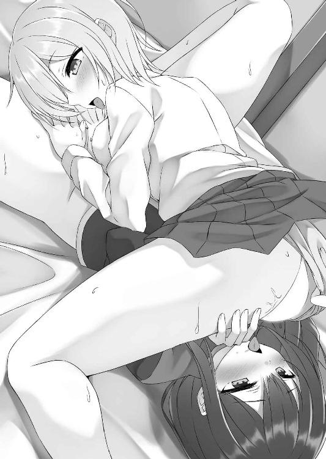
「あああ......い......いいっ！ アーニャ......私......もうっ」
散々刻まれた愛撫によって肉体は既に限界近くにまで昇り詰めてしまっていた。快感の上に重ねられる快感──どうしようもないほどに絶頂感が高まってくる。
「あああ......い......いくっ......アーニャっ」
「私も......サリアっ......」
互いに互いの名を呼びながら、陰部に口付けする。
「あっあっ......はぁああああっ！」
「んんんっ......いくっ......」
そして二人は同時に絶頂に至った。
ヒクヒクと重ね合わせた肢体を震わせる。秘部から愛液をジュワッと分泌させながら、心地よい絶頂感に溺れた。
「はぁはぁはぁ......凄く......よかった」
全身から力を抜いたアーニャがうっとりと呟く。
「わ......私も......」
心地よい脱力感に包まれながら、サリアも頷いてみせた。
「サリア......」
そんなサリアの唇に、体勢を入れ替えた悪魔が自身の唇を寄せてくる。
「アーニャ......」
これに応えるようにサリアも身体を起こし、そっとキスをした。
「んんんっ......」
「んっ」
柔らかさと温かさが伝わってくる。
（何故だろう？ 幸せだ......）
これはあくまでも精気を与える為の行為に過ぎない。だというのに、唇を重ね合わせていると、これまで感じたこともないほどの幸福感を覚えてしまう自分がいた。
ただ、感じるものは幸せだけではない。
（疲労感が凄いな......。身体が重い。それだけの精気を奪われたということか......）
行為を終え、スウスウと寝息を立てるアーニャの隣で横になりつつ、サリアは眠ることなくそんなことを考えていた。
自身の掌を見つめる。
手を挙げるだけでも結構しんどく感じるレベルだ。
行為後の疲労感──これを感じるたびに、アーニャはやはり悪魔なのだと再認識させられる。人からこうして精気を奪わなければ生きていけない存在なのだと......。
（私はどうすればいい？ どうすれば......）
横目でチラッとアーニャを見つめる。
可愛らしい寝顔だ。まるで子供みたいに無邪気な寝顔......。
この国は平等だ。努力さえすればなんにだってなることができる国だ。けれど、例外はある。その例外とは国の成り立ちを阻害した貴族の一族だ。
共和制に反対した者達。今の体制を受け入れようとしなかった者達──共和国となってから五〇年。当時を知るものは流石に少なくなっている。だから出自などどうでもいいと考える人々が増えていることは事実だ。
ただ、それでも公の機関に旧貴族がつくことはできないし、差別だって間違いなく存在している。
だからこそ、旧貴族出身者が騎士になるには、誰かに認められるには、それだけの手柄を立てる必要があった。
例えば悪魔を退治するというくらいの......。
（どうすればいい？ 私はどうすれば......）
アーニャの寝顔を見つめ、迷う......。
＊
二人の前にその男が現れたのは、それから数日後──バイトからの帰り道のことだった。
「どうも......」
僧服を身に着け、手には杖を持った若い男が、ほとんど人通りがない首都の裏通りにてペコリッと頭を下げてくる。
「お前は......確か......」
サリアにも見覚えがある男だった。
侍女喫茶によく来る常連客。前にアーニャに声をかけた軽薄そうな男である。
ただ、今日はなんだか雰囲気が違った。
どこか硬い表情を浮かべ、ジッと視線をアーニャへと向けている。デートに誘いにきたという雰囲気ではなかった。
それどころかまるで憎い敵でも見るかのような様子である。明らかに様子がおかしい。
「なるほどね」
そんな男の視線を真っ直ぐ受け止めた上で、アーニャはそう呟いた。男がここに現れた理由に気づいたらしい。
「どういうことだ？」
意味が分からずサリアは首を傾げる。
「結構鈍いわよね貴女って」
クスッと悪魔は笑った。
「......ああそうだ。私は鈍い。だから答えを教えろ」
小馬鹿にされているようで少し腹が立つ。が、怒りを抑え、尋ねた。
「簡単なことよ」
悪魔は男から視線を外すことなく、
「その男は私を狩りに来たのよ。つまり......悪魔狩りというわけ」
そう答えてくれた。
「......まさか......」
サリアも改めて男を見つめる。アーニャの言葉が本当なのかと問いかけるように......。
「正解です」
その視線に対し、男はあっさりと頷いた。
「正解って......ただの客じゃなかったのか......」
「そういうことです。まぁ、お店は結構楽しかったですよ。でも、店に行ってたのは楽しむ為じゃない。悪魔の存在を確認する為です」
「悪魔がいる可能性には気づいていたということか......」
「そういうことです。魔力を感じたのでね」
男は淀みなく答える。
「明らかに人のものとは異なる力──悪魔の魔力の残滓をあの店からね......。正直驚きましたよ。まさか首都で悪魔の存在を感じることになるだなんてね。とはいえ、感じる力は極々小さなものだった。気のせいなんじゃないかと思うほどに......。ただ......」
悪魔狩りとして気のせいだと見過ごすことはできない。確認してみなければならないと考え、店の内偵を始めたのだと男が語った。
「......そうか、あの店は結構サリアの家から離れているから......」
男の言葉に何かを納得したようにアーニャはそう口にする。
一体何を納得しているのだろうかと、サリアは首を傾げる。
一人だけ蚊帳の外だった。わけが分からず「どういうことだ？」と尋ねる。
「悪魔はね、存在しているだけでも常に魔力を周囲にばらまいてしまうのよ。悪魔のことを知り尽くしている悪魔狩りはそれを知っている。つまり、魔力を探知することで悪魔が存在していることに気づくことができるの。当然場所を突き止めることだって......」
だからアーニャはサリアの家の周囲に結界を張っていたらしい。魔力が外に漏れ出ないようにする結界を......。
けれど、結界の範囲は侍女喫茶にまでは及んでいなかった。
「私が働くようになってからは、店にも結界を張ったわ。ただ、結界を張っていても内部にまで侵入されたら意味がない。あの男は私が働くより前からの常連なんでしょ？」
「ああ、そうだ」
男が店に来るようになったのは、確かサリアが働き始めてから三日目のことである。
「多分あの男は貴女の身体についた私の魔力残滓を感じて店に来たのよ」
「そういうことです」
アーニャの言葉を男は肯定する。
「サリアさんの身体に悪魔の魔力が残っているのを感じた。ただ、それはあくまでも魔力残滓に過ぎない。サリアさんが悪魔ではないことは明白だった」
とはいえ、サリアが悪魔と何らかの関わりを持っている可能性はあると男は考え、店に出入りするようになったらしい。
その結果、アーニャと出会った。
「......アーニャさんからはサリアさんよりもずっと強い魔力を感じた。ただ、その力は悪魔というには明らかに弱かった」
「傷を癒やすことに全力を注いでいたからね......」
その為、表に出る魔力はかなり弱まっていたらしい。
「傷の治療......なるほど。これで得心がいった。貴女はガザラの悪魔か」
「私のことを知ってるんだ」
「ガザラで悪魔に大きな傷を与えたものの逃げられた──という仲間の話がありましてね。なるほどなるほど、魔力をあまり感じなかったわけだ」
力が弱すぎてアーニャが悪魔だという結論を下すことができなかったらしい。
だが、それでも悪魔狩りは今、ここにいる。
「アーニャが悪魔だという確信を持てたということか？」
「そういうことです。何しろ、アーニャさんの魔力は日に日に大きくなっていましたから。近くにいる悪魔に影響されて──というレベルではないほどに。これはもうアーニャさん自身が悪魔なのではないかと思わざるを得ないほどに......ね」
そう言うと同時に男は杖を構えた。
「そういうわけですからアーニャさん。いえ、悪魔アーニャ。貴女を滅ぼします」
静かに告げてくる。
それと共に全身からサリアでも分かるほど強烈な魔力を放出し始めた。
「な......魔力？ 人間なのに!?」
魔力とはその名の通り魔の力だ。本来人の身で扱えるものではないはずなのだが......。
「悪魔狩りは悪魔と同じ力を使うことによって悪魔と対等に渡り合うのよ。あれくらいはできて当然ってわけ......。でも、まぁ......ちょっと想像以上だけど」
想像以上──その言葉を証明するみたいに、アーニャは表情を硬くする。いや、それだけじゃない。冷や汗だって流し始めた。
この態度を見れば分かる。どうやら本当にかなりの力の持ち主のようだ。
「アーニャ......」
この場合自分はどうすればいいのだろうか？ 混乱してしまう。
あまりに突然すぎる事態だった。視線が泳ぐ。対処方法が分からない。
するとアーニャは「貴女には関係ないことだから帰りなさい」と告げてきた。
「帰れって......でも......」
分かった──と簡単には頷けない。
「......そう。貴女には関係ありません。帰りなさいサリアさん」
アーニャに同意するような言葉を悪魔狩りも向けてきた。
「何故悪魔などと一緒にいたのか？ どのような事情があったのかは分かりません。ですが貴女は人だ。悪魔とは違う存在だ。だから......立ち去りなさい」
静かに告げてくる。
「悪魔を滅ぼす──私が興味を持っているのはそれだけです。だから......」
今なら見逃すことができると、言外に悪魔狩りは告げてきているようだった。
「結構話が通じそうな奴ではあるわね。ふふ......ほら、あいつもああ言ってくれてるんだし、迷う必要なんかないでしょ。貴女だって元々は私を退治するつもりだったんだからさ」
それはその通りだ。
「ほら、行きなさい。悪魔がどうなろうが関係ないでしょ？ というか、寧ろ人間としては歓迎すべきことでしょ？ 手柄は立てられないかもしれないけど、人に仇なすものが滅びるんだからさ」
硬い表情を浮かべつつも、クスッとアーニャは口元に笑みを浮かべてみせてくる。
「......それはその......」
確かに彼女が言う通りだった。
悪魔が滅びる。それは人として喜ぶべきことのはずだ。人を襲うものが減るというのは間違いなくいいことのはずである。
だが──
（滅びる？ アーニャが？）
そう考えると心が冷えていくのを感じた。
毎日一緒に暮らしてきたアーニャ。毎日会話を交わしてきたアーニャ。毎日自分の料理を美味しいと言ってくれたアーニャ。毎日キスをして、身体を重ねてきたアーニャ──そのアーニャが滅びる？
脳裏に地面に倒れ伏す少女悪魔の姿が思い浮かぶ。命を失い。冷たくなった姿が......。
想像すると、血の気が引く。
動きだせない。この場に立ち尽くしてしまう。呆然とアーニャを見つめ続けてしまう。
「何をしてるのサリア。早く行きなさい。早く行かないと、貴女も異端者として扱われる。だから早く行きなさい。行くのよっ!!」
そんなサリアに、普段のにこやかな姿からは想像もできないほど厳しい声をアーニャが向けてきた。
「でも......貴女が......」
それでも頷けない。
「......馬鹿」
躊躇いを見せるサリアに、呆れたような表情を浮かべてみせる。
「でも、ありがとう」
が、すぐにアーニャは笑った。
笑顔を見るのは初めてじゃない。それどころか、寧ろイヤと言うほど何度も見せつけられてきている。けれど、今浮かんでいる微笑みは、これまで見てきたどんなものよりも本当に嬉しそうなものに見えた。
そのせいだろうか？ なんだか凄く嫌な予感がしてサリアは固まってしまった。
「楽しかったわよ」
さらに言葉を重ねてくる。
同時に、小柄な身体から禍々しい魔力を噴出させてきた。
角が伸びる。金色の瞳が赤く染まった。
「なっ──これっ!?」
溢れ出した魔力が、サリアの身体を包み込む。
「あ......なに......力が......」
それと共に全身から力が抜けていくのを感じた。
「アーニャ......何を......」
ガクッと膝を落とす。
「これまで見てきたものはただの夢よ。私は悪魔......人とは相容れないもの。だから......」
向けてくる視線──瞳に浮かぶ色は、悲しそうな、寂しそうなものだった。
（だ......駄目......）
悪魔の視線を感じつつ、サリアはその場に倒れ伏す。身体中が重かった。自分の意思では動かせそうにない。
目蓋が閉じそうになる。少しでも気を抜けば、意識が飛んでしまうような気がした。
「さぁ、これで邪魔者はいなくなったわ。だから遠慮する必要はないわよ」
倒れたサリアから視線を外し、アーニャは悪魔狩りへと声をかける。
「......人を庇う......妙な悪魔ですね。しかし、関係ない。悪魔は悪魔。滅ぼすのみです」
男が応じる声が聞こえた。
それと共にさらに力を増幅させる。これまで以上に強大な魔力を、倒れながらにサリアは感じた。
肌がピリピリと痺れる。全身の毛が総毛立ちそうなくらい、全身がゾクゾクとした。
「悪魔は滅ぼすのみ......か。分かりやすくていいわね。それくらいの方が私もやりやすいってものよ。さぁ、始めましょうか」
強大な力──明らかに未だ傷が癒えていないアーニャよりは上だろう。それでも少女悪魔は臆することなくこれに応じた。
「潔い悪魔だな。ふふ......いいだろう。敬意を表して苦しまぬように終わらせてやる。さぁ、喰らうがいいっ!!」
そんなアーニャに対し、悪魔狩りが魔力を解放する。
魔力弾を作り出し、それを少女悪魔に対して撃ち放った。
「......無駄よ」
これに対抗するようにアーニャも魔力弾を作り出す。
巨大な力と力が、地面に倒れるサリアの目の前でぶつかりあった。
爆発が起こる。凄まじい衝撃波が周囲に広がった。
「くうううっ」
身動きが取れないサリアの身体は簡単に吹き飛ばされる。何度も地面を転がった。全身に痛みが走る。
「しまった！」
これにアーニャが焦るような表情を浮かべた。
「どこを見ているんです？ 余所見をしている暇なんかありませんよ」
この隙を悪魔狩りは見逃さず、再び魔力弾を作り出す。しかも、数は一つや二つではない。三個、四個──いや、十個ほどはあるだろうか？
「──なっ!?」
人間がそれだけの力を発揮するとは思ってもいなかったらしく、アーニャは驚きの表情を浮かべる。
「行けっ!!」
悪魔の動揺など気にしない。
悪魔狩りは容赦なく作り出した魔力弾すべてを撃ち放った。
「くううっ!!」
アーニャもこれに応じるように再び魔力弾を作り出し、解き放つ。
飛び交う魔力と魔力が激突する。一、二、三、四──敵の攻撃を次々とアーニャは撃墜していった。
だが、やはりまだ傷が完全には癒えていない為か、幾つかの魔力弾がすり抜ける。
「──あっ」
アーニャの表情が凍った。
刹那、爆発音が響く。
「ああああっ!!」
少女悪魔に敵魔力弾が直撃した。
小柄な身体が吹き飛ぶ。
先程のサリア以上にアーニャの身体は地面を何度もバウンドすることとなった。
痛々しい悲鳴が響く。
「まだまだですっ!!」
それでもなお、悪魔狩りは攻撃の手を緩めない。
それどころか追い打ちをかけるべくまたしても魔力弾を作り出し、撃ち放った。
「あぐあああああっ!!」
雨霰のように攻撃が降り注ぐ。
体勢を崩したアーニャには対応することなどできない。
魔力弾の直撃を受け、さらに痛々しい絶叫を響かせた。
（あ......アーニャ......）
この光景をサリアは見つめ続ける。
意識が途切れそうなほど強烈な脱力感を全身に感じながら......。
悲鳴を上げている。ずっと一緒に暮らしてきた少女が......。
小さな身体が傷ついていく。いつも人を小馬鹿にするように笑っていた顔を、苦しそうに歪ませている。
（......アーニャが......。このままじゃ本当に......）
連続で悪魔狩りは魔力弾を放ち続けている。今のアーニャではこの状況から逃れることなどできない。
つまり、待っているのは滅びだけ......。
死ぬ。アーニャが。間違いなく。
斬るつもりだった。アーニャを。何故ならば彼女は悪魔だから。人に仇なす存在だから。悪をなす魔だから......。魔を滅ぼし、皆に認められる騎士になる為に......。
そのはずだったのに、どうしてだろう？ 何故だろう？ 傷つく彼女を見つめていると、自分の胸まで激しく痛むのを感じた。アーニャが傷つくたびに、自分まで同じように痛めつけられているかのような気分になってくる。
（私......私は......）
強烈な魔力に蝕まれながらも、拳を強く握り締めた。
同時に蘇ってくる。
「ありがとう」
アーニャの言葉が......。
「楽しかったわよ」
アーニャの笑顔が......。
感情がわき上がる。強い想いが膨れ上がる。失いたくない──そんな想いが......。
「とどめだ！」
そんなサリアの目の前で、悪魔狩りがこれまで以上に巨大な魔力弾を作り出す。
（させない！ 絶対にっ!!）
だから──
「うあああああっ!!」
女騎士は絶叫した。
大きな声を響かせ、身体中を包み込む虚脱感を振り払い、立ち上がる。
それと共に──
「ああああああっ!!」
走りだした。
「滅びよ──悪魔っ!!」
サリアの行動には気づかず、悪魔狩りが魔力弾を放つ。
「..................」
アーニャはこれを無言で見つめた。諦めるように......。
「させないっ!!」
刹那、サリアはアーニャを庇うように魔力弾の前に立った。
「──なっ!?」
少女悪魔が驚愕に瞳を見開く。これまで見た中でも一番の驚き顔だった。
（驚かされてばかりだったのに......。今日は私が驚かせてる。ふふ......）
少しだけおかしさを感じる。
感じつつ、サリアは魔力弾の直撃を受け、吹き飛ばされた......。
「なんだとっ!?」
悪魔狩りが驚愕する。
「くっ！ 馬鹿な人です！ ですが......まだです！ 次こそっ!!」
ただ、驚きつつもすぐに気持ちを立て直した様子だった。再び魔力を集中させ始める。再び巨大な魔力弾が形成されていった。
「邪魔をした貴女が悪い......恨むのならば自分自身を恨みなさいっ!!」
サリアを巻き込んでも致し方なし──というほど強烈な力を感じた。
「さ......させないっ！ サリア──サリアぁあああああっ!!」
瞬間、アーニャが絶叫した。
それと共に少女悪魔の傷ついた身体が再生していく。これまでとは比べものにならないほど強大な力が小柄な身体から溢れ出した。
「な......なんだその力はっ!?」
想定外の事態に悪魔狩りが目を剥く、
「させない──サリアには何もさせないっ!! 守るっ！ あああああっ!!」
アーニャが力を解き放つ。
（......眩しい......でも、綺麗......）
魔力が輝きを放つ。
その有様を呆然と見つめつつ、サリアは意識を失った。
＊
「馬鹿......本当に馬鹿よ。何してるのよ......貴女は......」
声が聞こえた。聞き慣れた声が......。
全身に痛みを感じつつ、サリアはゆっくりと目を開ける。
「あ......アーニャ......」
視界に少女悪魔の姿が映った。
彼女は泣いている。ポロポロと眦から涙を零していた。
「......悪魔だって......泣けるじゃないか......」
手を伸ばし、涙を拭ってやる。
「うるさいわよ。仕方ないじゃない......。というか......なんでこんな馬鹿なこと......。悪魔なんか庇うなんて......わけが分からないわ......」
泣きながら責めてくる。
「なんでって......か、簡単なことだ」
責められているのに、身体中痛いのに、なんだか嬉しい。
「泣いてるから......。お前は泣ける。私達と何も変わりはない。悪魔とか人とか......そんなこと......関係ない。アーニャはアーニャ......。それだけが分かってればそれでいいと思ったから......」
守りたい。そう思った。だから......。
「悪魔だから悪なんじゃない......。人は人。お前はお前......。あ......アーニャのお義父さんの言葉、よく分かったよ」
語りながら微笑みを浮かべる。
この笑顔に再びアーニャは驚きの表情を浮かべた後、涙を零しながらも笑みを浮かべてくれた。
「本当に馬鹿ね......」
「私もそう思う」
二人で微笑みあった。
「それで......その......あの男は？」
とはいえ、いつまでも浸っているわけにはいかない。悪魔狩りはどうなったのだろうか？
「大丈夫。アイツは気絶してるから......」
「そうか......。でも、どうする？ 知られてしまったが......」
「その点なら大丈夫よ。気絶してる状態なら魔法抵抗力はほぼゼロ。だから......魔法で記憶を奪うことくらいできるから」
悪魔狩りは個人で動く存在だ。組織ではない。一人一人が己の利の為に動く賞金稼ぎのようなものである。だから記憶を奪えば当面脅威はなくなるだろう。
「そうか......」
そのことにホッとサリアは息を吐いた。
「これでまた一緒に......」
いつもの日常が戻ってくるのだと、安堵する。
しかし、そんなサリアに対してアーニャは悲しそうな視線を向けてきた。
「......アーニャ？」
なんだか嫌な予感がし、首を傾げる。
「ごめんね」
すると少女悪魔は謝罪の言葉を口にしてきた。
「どういう意味だ？」
「......もう一緒にはいられない。そういう意味よ」
あっさりとした返事がくる。
「何故？ だって悪魔狩りの記憶を消せば......。それにまだ傷が癒えたわけじゃ......」
「それはその通り。でも、もう無理......貴女は私は私だと言ってくれた。でも、私はやっぱり悪魔。悪魔と人は一緒にいてはいけないのよ」
「な......何を言ってる？」
「私といたら貴女は人の中にはいられなくなる。目指していた騎士にもなれない。ずっと孤独になる。それに、きっとまた今日みたいに悪魔狩りに襲われることだってある。そうなったらまた傷つくことになるわ。だから......」
「ま、待て！ アーニャっ!!」
アーニャが何をしようとしているのか理解し、止めようとする。
「......貴女との時間......悪くなかった」
だが、願いは届かない。
短い言葉が耳に届いた瞬間、サリアの身体は少女悪魔が放った魔力に包み込まれた。
「あ......アーニャ......」
全身が脱力感に包み込まれる。それと共に堪え難いほどの眠気を感じた。目蓋がどうしようもないほどに重くなる。
「一眠りすれば貴女はすべてを忘れる。私のことはただの夢だった......。そう夢......これは全部......」
「そんなこと......」
必死に抵抗しようとする。けれど、抗えない。ゆっくりと目が閉じていく。
「......さようなら」
囁くような声が聞こえた。
同時にそっと唇を重ねてくる。
「んんっ」
これまでしてきたどんなキスよりも、優しい口付けだった。
温かな唇の感触──それを感じながら、サリアは再び意識を手放した......。
ぎゅるるるっと腹が鳴る。
「......はぁ、お腹空いた......」
ガザラ地方山中に建てられた小屋にて、アーニャは大きくため息をついた。お腹と背中がくっついてしまいそうな状況である。
フラフラしつつ、小屋の地下に作った食料貯蔵庫に入る──が、なにもない。
（そういえば全部処分しちゃったんだった）
貯蔵庫には一年分近くの食料を溜めてあった。が、サリアのもとに半年近く身を寄せていた間に、すべて腐ってしまっていた。貯蔵庫には食料保存の魔法をかけてはあったのだけれど、アーニャが離れたことで効果が切れてしまったらしい。
腐った食料を置いておくわけにもいかず、捨ててしまったことを思い出す。
（このままじゃまずいわね。使い魔を使って──って、今の状況じゃ無理ね......）
未だアーニャの傷は癒えていない。だというのに、こちらに帰ってきてから一ヶ月、悪魔は精気補充を行ってはいなかった。お陰で魔力はほぼゼロである。本当に簡単な魔法くらいは使えるが、消費が大きい使い魔使役などを行使することは不可能だった。
小屋から少し山を下りたところには村がある。そこの住民を襲えば精気を回復することは可能だ。半年も小屋を空けていたお陰で悪魔狩りも諦めたらしく、気配は完全に消えている。だから村を襲っても危険なことなど当面はないだろう。躊躇う必要などない。
けれど、何故か人を襲おうという気分になれなかった。
別に殺すわけじゃない。ほんの少し脅かして、ちょっと力をもらうだけだ。相手が感じるのは少しの恐怖と疲労感だけである。
だというのに、何故か動きだせない。
人を襲おう──そう考えるとちらついてしまうのだ。サリアの顔が......。
するとやる気がなくなってしまう。人を襲えば彼女が悲しむかもしれない──そう考えると、生きる為に必要な行為だとは分かっていても何故か動きだせなかった。
（意味が分からない。私......悪魔なのよ。人とは違う悪魔。親が死んでも、義父が死んでも涙一つ流さない悪魔......。なのに......どうして？）
サリアのことを思い出すとなんだか悲しくなってくる。彼女のことを想起するだけで、涙を零しそうになってしまう自分がいた。
（もう会うことなんかないのにね......）
胸にぽっかりと穴が空いたような気分になる。
酷い孤独感を覚えた。
山の中にたった一人──以前と変わらない生活だ。だというのにどうしてだろうか？ 前よりもずっとずっと寂しさを感じた。
いるはずのものがいない。いつもの軽口を叩く相手がいない。からかうこともできない。
本来の自分に戻ったはずなのに、どうしようもないほどに寂しかった。
「はぁ......なんか虚しい......」
孤独と空腹を感じつつ、再びため息をつく。
そのような状況だからだろうか？ 考えてしまう。自分はなんの為に生きているのだろうか──などということを。
人を襲わなければ、誰かを傷つけなければ生きていけない存在。誰かと共に歩むことなど絶対にできはしない。ずっと一人だ。
そのようなものが生きていく意味などあるのだろうか？
（永遠に私は一人。誰かと交わることなんかあり得ない。ただひたすら孤独に生きていく......。そんな一生に価値はあるの？）
生きていると言えるのだろうか？
考えるとなんだか馬鹿馬鹿しくなってくる。
このまま終わってしまってもいいのかもしれないとさえ思った。だって、自分が世界に存在していることに意味などなにもないのだから......。
そんなことを考えながら、ぐうううっと腹を鳴らしつつ、アーニャはベッドにゴロッと横になった。
ちょうどそんなタイミングのことである。山に誰かが侵入してきた場合、その存在をすぐに探知することができる結界が反応したのは......。
（侵入者？）
身を起こす。
一体何者だろうか？
（もしかして......村人？）
可能性はないこともない。
以前は麓にある村の人間が山に入って来ることなどあり得なかった。山には悪魔がいると彼らは知っていたから......。
けれど半年アーニャは小屋を空けている。
（ここに来た悪魔狩りは私に止めを刺せてはいない。だから村人達に悪魔を退治できたとは言ってないと思う。それでも、追い払ったくらいのことは話しているかもしれない。だから......）
安心して山に入って来ているという可能性はある。
（それならまだいいわね）
村人ならば自分に害は及ばないだろう。
（だけど、もし村人じゃなかったとしたら......）
悪魔狩りが戻ってきたという可能性を考える。
その場合は非常に問題だった。
首都にて自分の限界を超えるような力を解放してしまった上、精気の補充も行ってはいない。結果、現在のアーニャの力は傷をつけられた直後よりも落ちてしまっている。この状況でもし悪魔狩りに遭遇したら、多分逃げることさえもできないだろう。
確実に殺される。
死の予感が膨れ上がってくる。
想像すると恐ろしい。
殺されてしまうかもしれないと考えると、それだけで身が震えた。
（悪魔のくせにお笑いよね）
人に死を予感させる存在が、死に怯える。なんだか滑稽だった。思わず苦笑さえしてしまう。それでも、怖いものは怖かった。
（やっぱり逃げようかしら？ 今ならまだ間に合うかもしれないし......）
侵入者は山中にいる。それでもまだここまで辿り着くにはだいぶ時間があるはずだ。接触さえしなければ......。
そのようなことを考えつつ、パチンッと指を鳴らす。なけなしの魔力が発動し、一つの水晶玉を作り出した。
（敵を確認する。もしかしたら悪魔狩りではない可能性だってあるし......）
村人ならば焦る必要もない──そのようなことを考えながら、意識と魔力を水晶玉に集中させていく。これに反応するように球体は輝き、映し出す。侵入者の姿を......。
「──嘘」
刹那、思わずそう口にしていた。
驚きで瞳を見開く。自分が見ているものが夢ではないのかと確認するように、ゴシゴシと目を擦りもした。
だが、映像は変わらない。
そこに映っていたのは、一人の騎士だった。
後頭部で長い髪をまとめている。スレンダーな身体。身に着けているのは騎士服。それほど胸は大きくない。ただ、服の上からでも腰が引き締まっているのが分かる。脚も長い。非常にスタイルがいい。
腰に剣をぶら下げ、肩には荷物が入っているだろう袋をぶら下げている騎士──女騎士。その顔は、精巧に作られた人形みたいに整っていた。
切れ長の瞳。真っ直ぐ通った鼻梁。柔らかそうな唇。同性の目から見ても魅力的な顔立ちだ。街で出会ったら立ち止まり、いつまでも見ていたくなるような顔......。
「なんで？」
そんな美しい女騎士を呆然と見つめる。
だってあり得ないから。ここに彼女がいるなんて、絶対にあるはずがないことだったのだから......。
「......サリア」
その名をアーニャは口にした。
ただ、名を呼んだところでもちろんサリアは気づかない。
女騎士は険しい表情を浮かべつつ、草木を掻き分け、ひたすら山を登ってくる。小屋の位置までは分かっていないらしく、進む方向は一定したものではない。ただ、それでも一つの目的に向かって進み続けていることは表情を見ればすぐに理解できた。
彼女が何を目的としているのか......。
（考えるまでもないわね）
間違いなく自分だろう。それ以外にはあり得ない。
（でも、どうして？ 私はサリアから記憶を奪った。サリアは私のことを覚えていないはず。それは間違いない）
魔法を失敗することなどあり得ない。
だが、だとするとどうして......。
サリアから視線を外さぬまま腕を組み、思考する。
（ああ、そうか......）
やがて、一つの答えに辿り着いた。
（悪魔狩り......悪魔退治に来たのね。そう、考えるまでもない。サリアの夢を考えればそれしかないじゃないの）
悪魔を倒し、名を上げる。そして本物の騎士になる。多くの人々に認められる本物の騎士に......。
（変わってないってことね......）
なんだか嬉しくなってしまう、
自然と口元には笑みが浮かんだ。
抱いてしまっていた恐怖も当然のように消えていく。
サリアの目的は悪魔狩りと変わりはしない。悪魔である自分を滅ぼしに来たのだろう。サリアはあくまでも独学で剣を学んだだけの一人の少女でしかなく、悪魔を殺す術を学び尽くした悪魔狩りとは比べものにならないほど力は弱い。それでも、今の弱り切った状況で戦えば勝ち目はないだろう。間違いなく殺される。確実だ。
だというのに、相手が彼女だと思うと恐ろしくないから不思議だった。
それどころか（サリア相手なら別にいいかもしれないな）などとさえ思う。
（サリアは悪魔も人も関係ないと言ってくれた。私は私だと......。あの言葉嬉しかった。義父さん以外であんな言葉を向けてくれる人間がいるなんて思いもしなかったから......）
だからこそ、サリアが相手ならば......。
（私がサリアの夢の礎になれるのなら......）
自分は悪魔だ。この世に害悪しかもたらさないものだ。生きていても仕方がない。であるのならば、最後くらい何かの力になりたい。
一つの決意を胸に抱き──アーニャは小屋を後にした。
水晶玉を頼りにサリアのもとへと向かう。しばらく歩き続け、やがてアーニャは山中を歩く女騎士の姿を視界に捉えた。
（......サリア......）
まだこちらには気づかず、キョロキョロ森の中をどちらへ進むべきかと迷っている彼女を見つめる。
別れた時と変わらぬ姿──一ヶ月ほどしか経っていないのだから、変わっていないのは当然のことかもしれない。それでも、一緒にいた頃のままの姿を見つめていると、なんだか胸の中に熱いものがこみ上げてくるのを感じた。
声をかけたい──そのような感情がこみ上がってくる。
けれどそれを抑え込み、
（いくわよ......サリア）
心の中で声をかけると......。
女騎士には聞こえない程度の大きさでパチンッと指を鳴らした。
魔力が発動する。自分の中に残っている搾りカスみたいな力をすべて引き出した。
霧状に溢れ出した魔力が全身を包み込む。そのまま霧はゆっくりと形を変化させ、一匹の巨大な蜘蛛のような形状を作り出した。
幻覚魔法──これでサリアには自分の姿は蜘蛛の化け物としか見えないはずだ。
（そういえば、初めて会った時もこの魔法を使ったわね）
我ながらワンパターンなものだと苦笑してしまうが、これでいいと考える。
（あの子はアレで結構優しいところがあるからね。多分人と同じような姿じゃ斬れないはず。だから......化け物の姿で......。ふふ、私の優しさに感謝しなさい）
少しでもサリアの負担にならないように──そのような思いを胸に抱きつつ、アーニャは足を踏み出した。
「──なっ!?」
女騎士は驚きの表情を浮かべ、進めていた歩を止める。
まぁそれも当たり前のことだろう。いきなり森の中から巨大な蜘蛛の化け物が現れたのだ。動揺しない方がおかしい。
「くくく......」
敢えて尊大に笑ってみせる。人を下に見る絶対的な存在──悪魔らしく。
「悪魔......」
呆然としたままポツッとサリアは呟く。
「そうだ人間よ。くくく......我は悪魔だ」
頷くと共に、僅かではあるけれど魔力を周囲に振りまく。これを受けた木々が枯れた。大地が壊死する。
（結構辛いわね......。でも、我ながら禍々しい演出。実に悪魔っぽいじゃない）
心の中で自画自賛した。
そのような光景に、サリアは身体を硬直させ続ける。
「恐ろしいか小さき者よ」
きっと彼女は恐れている。目の前に現れた悪魔を......。
その心を見透かしたような言葉を紡ぐ。普段の自分とはまるで違う重苦しい声で......。
これに対しサリアは反応を示さない。やはり固まったままだ。
（初めて会った時よりも驚いてるみたいね。ふふ、ちょっと面白いわよ）
などということを考えながら「我を退治しにでも来たか？ だが、その有様で我を滅ぼすことなどできぬぞ」と発破をかけるような言葉を向ける。
が、それでもサリアは反応を示さない。ただ呆然とこちらを見つめ続けてくるだけだ。
（なに？ もしかして、驚かせすぎちゃったのかしら？）
少し心配にもなってしまう。
ただ、そのような感情を表に出すわけにはいかない。自分は冷酷な悪魔なのだ。慈悲などない存在なのだ。サリアを躊躇わせるような素振りを見せるわけにはいかない。
「愚かな者よ。力なき者よ......くくく」
さらに言葉を続ける。
「我を前にして臆したか？ 命が惜しくなったのか？」
語りながら圧力をかけるように一歩前に出た。
「もしや貴様......自害でもしに来たのか？ 我に殺される為にわざわざ来たのか？」
言葉も続けていく。
だというのに、サリアはやはり動かない。
（どうしたのよ？ なんからしくないんじゃないの？）
女騎士の態度に不可解なものを感じ、心配してしまう。
（もう少し脅してみた方がいいのかしら？ 本当にどうしたのよ......）
焦りさえ覚えた。
そんな時だった。
「──やっと......やっと見つけた......」
サリアがそう口にしたのは......。
いや、ただ言葉を紡いできただけではない。女騎士はポロポロと涙まで零し始める。
まるで想像もしていなかった反応だ。
「な......え......ええっ!?」
思わず自分が蜘蛛の化け物になっていることも忘れ、驚きの声を上げてしまう。驚きすぎたせいで声を変えることも忘れる。普段と変わらず鈴の音のような声だった。
「ふふ......見た目とは全然違う声」
これを聞いたサリアが笑った。
「あ......ちがっ！ 今のは違うっ!!」
慌てて否定する。
「何が違うんだ。お前って......長生きしてる割には結構間抜けだよな」
クスクスと実に女騎士は楽しそうに辛辣な言葉を向けてきた。
「ま......間抜けぇ!? それは聞き捨てならないわよ！」
思わず声を上げる。
「聞き捨てならないって......でも本当のことじゃないか。そうだろ？ 家の掃除をしようとして逆に汚くしたり、お金がないのに無銭飲食したり、ウェイトレスのバイトで店の備品を壊しまくったりさ」
ムキーッとなるアーニャに対し、楽しそうに語りかけてきた。
「貴女......え？ そ......それって......」
その内容に悪魔は思わずポカンとしてしまう。
だってそうではないか。今話している内容、それは本来であれば忘れているはずのものなのに......。どうしてサリアは？
「ほら、間抜けだろ？」
わけが分からず混乱していると、サリアは距離を詰めてきた。
こちらが化け物であっても気にしない。簡単に至近にまで入ってくる。
「でもさ、今の話は間抜けだけど、これから話す間抜けっぷりには全然敵わない。だってそうだろ？ 記憶を消す──そんなこと言って、ロマンチックにお別れのキスまでしてきたくせにさ......消せてないんだもん」
言葉と共にサリアは手を伸ばしてきた。
蜘蛛の身体に触れられる。
「あっ......」
途端に幻覚の魔法が解けた。
ないものを存在しているように見せる魔法──相手に幻だと見破られてしまった瞬間、効果は消えてしまう。
蜘蛛の姿は消滅し、アーニャの姿は元の少女悪魔のものに戻った。
消えていない。覚えているんだ。サリアは自分のことを......。でも、何故？
（そういえば聞いたことがある......長い間悪魔の影響下にいた人間には、魔力を用いた魔法が効きにくくなることがあると......）
それが理屈といえば理屈。でも、今はそんなことどうでもいいのかもしれない......。
「久しぶり......アーニャ」
そう口にすると共に、ギュッとサリアはアーニャの身体を抱き締めてきた。
身体と身体が密着する。温かな体温が伝わってきた。背中に回された手。全身が包み込まれるような気がする。堪らないほどの心地よさを感じた。
「迎えにきた」
こちらを抱き締めたまま囁いてくる。
心の奥底にまで沁み込むような、気持ちいい言葉だった。
「な......なんで？」
ただ、気持ちよさを感じつつも問わずにはいられない。
「何がだ？」
「何がって......だって......私は悪魔なのよ......」
「関係ない。言っただろ。アーニャはアーニャだって」
前にも聞かせてもらった言葉だ。
耳にするだけで、涙が出そうなほどに胸が詰まる。
「でも、悪魔だってことには変わりはない。私はね、人を襲わないと生きていけないの。分かってるでしょ!?」
サリアの言葉は嬉しい。けれど、素直に受け止めることはできなかった。
「確かにそうだ。でも、それは人だって変わらない。人間だって他の生物の命を奪って生きてる。人も悪魔も同じだよ。いや、悪魔の方がまだマシだ。だってお前は命まで奪うわけじゃないんだから」
「詭弁よ。言い訳みたいに聞こえる」
「......かもな。だけど、私の言葉は事実だろ？」
「そ、それは......」
言葉に詰まる。
「......で、でも！ だけど......騎士になりたいんじゃないの？ みんなに認められたいんじゃないの？ それが貴女の夢なんでしょ？」
それでも必死に言葉を続けた。
「ああ、そうだ。それは私の夢だ。でもさ、多くの人に認められても、大勢の人に受け入れてもらっても、意味なんかないんだ」
けれどサリアは一歩も引くことなく言葉を続けてくる。自分の想い──そのすべてをアーニャに伝えようとするように......。
意味がない。それって一体どういう......。
「......大切な人に、一番認めてもらいたい人に認めてもらわなくちゃ。その人に隣にいてもらわなくちゃ......。そうだろ？」
語りながらさらにアーニャを抱き締める手にサリアは力を入れてきた。少し痛いくらいである。でも、心地いい。
「大切な人って......」
「悪魔だけどな」
サリアは苦笑する。
「でも、大切な人だ。気づいたんだ。お前がいなくなって、お前との時間がどれだけ楽しくて幸せなものだったのかってことにさ」
ずっと一人で生きてきた。それが当たり前だった。でも、イヤだった。一人でなんかいたくなかった。だから誰かに認められたくて、騎士を目指した。自分はここにいる。それをみんなに知ってもらいたかったから......。
「でも、私は気がつけば一人じゃなくなってたんだ」
始まりは嫌々だった。成り行き上仕方なく。
だいたい悪魔と生活するなんてあり得ない。退治するはずだった存在に......。
ずっとそう思っていた──と、サリアは語った。
「でも、気がつけばお前との生活は私の一部になっていた。お前といることが当たり前だった。そう思うようになってたんだ。そのことに......お前がいなくなって初めて気づいた。この気持ち......お前にも......アーニャにも分かるだろ？」
「それは......」
真っ直ぐな問いかけに、アーニャは一瞬息を呑む。
一緒にいることが当たり前になっていた──サリアの言葉。それが胸に染みる。
同時に思い出す。ずっと感じていた孤独感を......。寂しさを......。
だからだろうか？ 無言でアーニャは頷いた。
「だろ？ だから......迎えにきた。一緒に生きよう。ずっとずっと一緒に......」
想いが伝わってくる。
言葉だけでなく、心の底からのものだということはすぐに理解できた。
「悪魔と生きる......辛いわよ。本当に苦しいと思うわよ。人には迫害される。悪魔狩りに襲われることだってある。実際......襲われたわけだし。当然命を落とす可能性だってある。分かってるわけ？」
語りながら涙を零す。
「分かってなくちゃこんなところには来ない。だいたい、その程度がなんだって言うんだ。私は騎士だ。どんな覚悟だってできている、舐めるなよ」
フフンッと得意げな表情を浮かべてみせてきた。
「......本当の騎士じゃない癖に」
そんな彼女を見てクスクスと笑う。
「う......うるさい！ その......騎士というのはあれだ......心構え！ 騎士道精神ができているかいないかなんだからっ!! だからその......」
顔を真っ赤にして言い訳してくる。
凛とした騎士然とした姿からは想像もつかないほどに可愛らしい反応である。
そのような姿を見ていると、なんだか胸がキュンと疼いた。愛おしさのようなものがわき上がってくる。
（ああ......そうか......私......）
この感情の正体にすぐに気がつく。
「......ふふ」
わき上がる想い──それに逆らったりはしない。アーニャは静かに微笑むと、サリアの唇に自身の唇を重ねた。
「んっ」
一瞬女騎士は驚いた様子で瞳を見開く。
が、それは本当に僅かな時間であり、すぐに瞳を閉じると、悪魔の口付けを受け入れてくれた。
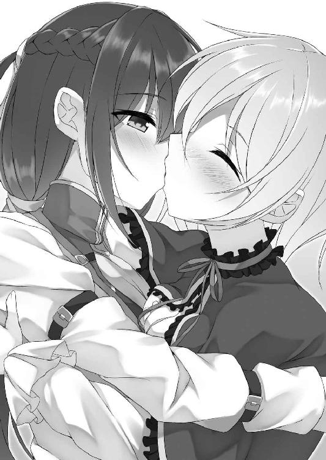
やがてどちらからともなく唇を離す。
「私......貴女のこと好きみたいだわ」
そして静かにそう告げた。
これにサリアはきょとんっとしたような表情を浮かべた後、ボッと音がしそうなほどに顔を真っ赤に染めた。
「......返事は？」
けれど羞恥に悶えることは許さない。囁くように問いかける。
「好きって......それは......その......」
まさかの事態だったらしく、明らかに動揺した様子で視線をサリアは泳がせる。
「べべべ......別に私はそ、そういうつもりでここに来たわけじゃ......」
自身の思いをはっきりと伝えてきた先程までとはまるで違う。見ているだけで笑いたくなるような姿だった。ただ、そのような姿にも愛おしさを感じつつ、
「騎士らしく答えなさい」
重ねて問う。
逃げは許さない。
「あ......それは......あうううっ......」
女騎士は言葉に詰まる。そんなサリアをジッと真っ直ぐ見つめ続けた。
この視線に女騎士はやがて観念したように──
「わ......私だって......その......す......好きだと......思う」
そう答えてくれた。
「思う？ 曖昧な返事ね？」
「そ、そんなこと言われても仕方ないだろ！ こ......こういう想いを人に抱くのは初めてのことなんだから！」
「......私は人じゃないわよ」
「そ、そんなの関係ない！ 人とか人でないとか......どうでもいいだろっ!!」
動揺しつつも真っ直ぐな言葉を向けてくれた。
「......そういうところが好きよ」
胸に温かさが広がっていく。
より膨れ上がる想い。それに逆らうことなく──
「んんんっ」
「んふううっ」
キスをした。
想いのままの口付け......。
別に舌を挿し込むわけもない。身体を弄りあうわけでもない。ただ、唇と唇を重ね合わせるだけだ。
けれど、これまで感じたこともないほどの心地よさを覚える。心も身体も満たされていくような気がした。
「......ふふ、もう離れてあげないんだから」
唇を離して、微笑みかける。
「あ......ううう......の、望むところだ......」
顔を真っ赤にしながらも強がってみせてくる。そのような態度もまた堪らないほどに可愛らしく、もう一度アーニャはサリアにキスするのだった。
こうして悪魔アーニャは騎士サリアによって討ち取られてしまったのである。
「ふふ、やっぱりいい部屋ね。落ち着くわ」
ガザラからも首都アスハからも離れた地方の街レティナ──そこに買った新居に入るなり、アーニャは幸せそうな表情を浮かべた。
「......小さな家だけどな。それに......小さいけどやっぱり家は高い。父上の遺産......全部なくなったぞ......」
そんな悪魔に対し、女騎士ははぁっとため息をついてみせる。
「まぁ確かにちっちゃい家ね」
サリアの言葉にアーニャも同意してくれた。
実際新居は明らかに小さい。玄関があって部屋がある。それだけだ。一応キッチンスペースや浴室はあるものの、以前首都で暮らしていた二階建ての家とは比べものにならないほど狭いといっていい。
「それに......ちょっと殺風景......」
以前の家に置いてあった可愛いぬいぐるみなどを持ってくることはできなかった。悪魔狩りがいる首都には長居できなかった為である。大規模な引っ越しはできなかった。
その点ははっきりいって寂しい。
けれども悪魔はまったく不満そうな素振りを見せない。
それどころか──
「でも、別にそれでも構わないでしょ？ 私は貴女と暮らせるなら家の大きさなんか関係ないからさ。っていうか、寧ろこれくらいの家の方がいいくらいよ。だってそうでしょ？ 狭い家ならいつも近くにいられるんだからさ。それに、可愛いグッズもまた集めればいいし。そうね......今度は私も一緒に......。二人で沢山集めましょう。ふふ、考えるとすっごく楽しみだわ」
なんの躊躇いもなく、そのような言葉をサリアへと向けてきた。
「なっ......そ......そそ......そういう恥ずかしいことは言うな......」
ストレートに想いをぶつけられ、思わず顔を赤く染めてしまう。動揺せずにはいられなかった。
「恥ずかしい？ でも本当のことだし。だいたい......サリアだって私と気持ちは同じなんじゃないの？」
上目遣いで尋ねてくる。
「そ......そんなことは......」
「嘘は駄目よ。教えて......サリアの気持ち......。私、貴女のことなら全部知りたいのよね」
一度想いを口にしたことで吹っ切れたのか、本当に遠慮や躊躇というものがなかった。
金色の瞳でジッと見つめてくる。
まさに小悪魔的な態度だった。
逃れることなどできそうない。
「......あ......ああ......そうだよ。同じだよ。私の気持ちだってお前と......アーニャと......。ち、近くにいられて嬉しいよ」
少しやけくそ気味だけれど、正直な気持ちを素直に伝えた。
「でっしょ～！ んふふっ!!」
嬉しそうにアーニャは微笑む。それと共に、サリアに抱きついてきたかと思うと、躊躇なくキスをしてきた。
「むっふ......んふううっ」
「んっちゅ......むっちゅ......ちゅっちゅっ......ちゅふぅうう......」
ただのキスじゃない。舌まで挿し込んでくる。
クチュクチュという音色が響いてしまうことも厭わない。いや、それどころかわざとこの音色をより大きく奏でようとするように、ねっとりと濃厚に舌を蠢かし、サリアの口内をかき混ぜてきた。
そのような口付けをサリアも受け入れる。
抵抗などせず、挿し込まれた舌の動きに合わせるように、自分からも舌を蠢かせた。
舌と舌を絡め合わせる。上唇や下唇を甘噛みする。頬を窄め、自分から激しく吸ったりもした。濃厚すぎる口付けのせいで口端から唾液が零れ落ちてしまうことも厭わない。
互いの身体を強く抱き締めながら、互いを求めあうように口腔を貪り続けた。
それほどまでに濃厚な接触──当然のように身体も熱くなってくる。まるで発熱でもしているかのように全身が火照り、ジンジンと下腹部が疼き始めた。触れて欲しい。自分の大切な場所に──肉体が訴え始める。
キスを続けつつ、自然と太股同士を擦り合わせ、モジモジと腰を振った。
すると、その求めに応えるように、アーニャがサリアの身体をすぐ近くに置かれていたベッドに押し倒してきた。
ギシッと軋んだ音色が響く。
「んんんっ......はふぅううっ......はぁっはぁっはぁっ......」
一旦唇が離れた。
二人の間に唾液の糸が伸びる。
「私......我慢できない。サリアが欲しいわ」
頬を上気させ、金色の瞳を潤ませながら、自分の想いを伝えてきた。
「ああ......私も......アーニャをもっと感じたい」
何度しても恥ずかしさはある。けれど、覚えてしまう羞恥以上に、愛しい相手を求める想いの方が強かった。
「ふふ......大好きよ」
嬉しそうにアーニャは微笑む。
大好き──その言葉を聞いた途端、さらに胸がドキドキと激しく鼓動を始めた。
「あ......わ......私も......その......す、好きだぞ......」
顔が真っ赤に染まる。羞恥で頭がどうにかなってしまいそうだった。それでも自分の想いも伝える。
「サリアっ！ んっちゅ......むちゅううっ」
するとアーニャは感極まったような表情を浮かべると共に、もう一度キスをしてきた。
「むっふ......んんんっ......」
舌も挿し込んでくる。再び口内をかき混ぜられる。歯の一本一本をなぞり、舌に舌を絡みつけてくる。口内粘膜に舌粘膜を密着させたりもしてきた。
サリアのすべてを舐め取ろうとするような舌の動き。感じていると全身から力が抜けていく。火照った肉体がより熱くなっていく。キスをしているだけで心が満たされていくような気がした。
ただ、これだけでは足りないと思ってしまう自分もいた。もっと感じたい。感じさせて欲しい──と本能が訴える。
キスをしながらサリアは身体をくねらせた。
その想いにアーニャは応えてくれる。
口付けを続けつつ、ゆっくりと手を動かしてきたかと思うと、サリアが身に着けていた騎士服を器用に脱がせてきた。
上着を、パンツを、剥ぎ取られる。
白い肌と白い下着が露わになった。
もちろん、それだけでは終わらない。アーニャは当然のように下着にも手をかけてくる。サリアはこれに抵抗しない。
結果、女騎士は少女悪魔の前に生まれたままの姿を晒すこととなった。
「んっふ......はぁあああ......やっぱり、いつ見ても綺麗ね」
唇を離し、サリアの肢体を見つめてくる。
「は......恥ずかしい......」
こうして肌を晒すのは当然初めてのことではない。それどころかもう何度もしてきたことである。
だというのに、羞恥は消えない。
アーニャの瞳で見つめられていると、それだけで頭がどうにかなってしまいそうなほどに恥ずかしかった。だから両手で乳房や秘部を隠す。
「隠さないで......もっと見せて。貴女の綺麗な姿を......大好きな貴女を......」
そんなサリアに優しく囁いてきた。
「そんな言い方......ひ、卑怯だぞ......」
大好き──言葉が胸に広がる。耳にするだけで心が満たされるような言葉だった。そのようなことを言われたら、隠すことなどできない。
「ふふ、卑怯で当然よ。私は悪魔なんだからね」
楽しそうに微笑んでみせてくる。
無邪気な笑顔だ。一瞬見惚れてしまうほどに可愛らしい。
（こんな顔......やっぱり卑怯だ......）
そのようなことを考えつつ、無言でサリアは乳房や秘部を隠していた手を離し、再び少女悪魔の前に自分のすべてを晒した。
「いい子ね......ふふ、それじゃあご褒美に、沢山気持ちよくしてあげる」
言葉と共に乳房に唇を寄せてくると、んちゅっと乳首にキスをしてきた。
「あっ」
既に勃起していた乳頭に柔らかな感触が伝わってくる。途端にサリアは電流でも流されたみたいにビクッと激しく肢体を震わせた。口を開け、甘い悲鳴も漏らしてしまう。
「キスしただけなのに凄く敏感」
「そんなこと......」
素直に認めることができない。
「そんなことない？ ふふ、説得力がないわよ。ほら......んっちゅ......ちゅっちゅっちゅっ......こうされるのがいいんでしょ？ こんな風にされて......感じちゃってるんでしょ？」
けれど、否定したところで意味などなかった。
アーニャはさらに愛撫を激しいものに変えてくる。
乳首を転がすように舐め回し、時には吸引してきた。右胸をそうして口で愛撫しつつ、左胸を揉みしだいてくる。指で乳首を摘まんで引っ張ったり、指先で押し込んだりしてきた。
「ああっ！ 駄目......あっあっあっ......それ......声......抑えられない......あっは......あんんんっ」
どこをどう弄ればサリアが感じるのかということを知り尽くした愛撫である。どこまでも的確に敏感部を責め立てられ、サリアは切なげにベッドの上で身悶えることとなった。
指の動きに合わせて愉悦の啼き声を上げ、秘部からは愛液を分泌させる。
「凄い......こんなの......私......抑えられない......」
堪え難いほどの愉悦が膨れ上がってくるのを感じた。
「もうイキそうなの？ いいわよ。イキたいなら我慢する必要なんかないわ。ほら、遠慮なんかしないでイキなさい」
達しそうになっていることにアーニャも気づく。
嬉しそうに瞳を細めると、ただ乳房を責めてくるだけではなく、サリアの下半身にまで手を伸ばしてきた。グチュッと指を愛液に塗れた秘部に密着させてくる。
「ああっ！」
指先が媚肉に触れた途端、意識が飛びそうになるほどの刺激が走った。触られただけで本当に達してしまいそうになる。
が、ギリギリのところで絶頂感を抑え込む。まだ達するわけにはいかないから......。
「別に耐える必要なんかないわよ。イキたければイケばいいのに......。我慢なんて辛いだけでしょ？」
秘部を愛撫しながら、空いた手で優しくこちらの頬を撫でてきた。
「そ......それは......確かにそうだ。でもまだ達するわけにはいかない......」
「どうして？」
不思議そうに首を傾げてくる。
「どうしてって......その......イクのは......ぜ、全部をあげてからがいいから......」
真っ赤な顔で疑問に答えた。
「全部？ それって......いいの？」
言葉の意味にアーニャも気づく。
「......ああ。家も買って、今日から新しい生活が始まるんだ。だからその......記念というわけじゃないけど、全部をあげたい......アーニャに......」
真っ直ぐ少女悪魔を見つめながら自分の想いを伝える。
これにアーニャは何も答えず、しばらく黙ったままこちらを見つめてきた。
しばらくそうした後、ゆっくり身を起こす。
「アーニャ？」
一体どうしたのだろうかと首を傾げる。
すると少女悪魔はこちらに見せつけるように、身に着けていたゴシックドレスを脱ぎ捨てた。サリアと同じく生まれたままの姿を晒す。
「貴女の気持ち......よく分かったわ。凄く嬉しい」
美しい肢体を晒し、微笑んでくれた。
「でも、もらうだけじゃイヤよ。だから......貴女にもあげる。私の初めてを」
そう口にすると共に再びサリアにのし掛かってきた。乳房と乳房が触れ合う、ドレスの上から感じていた時以上に温かな体温が伝わってくる。
もちろん、ただ身体を重ね合わせてくるだけでは終わらない。
「んっちゅ......」
またしてもキスをしてきた。
唇を啄むように、何度も何度も口付けの雨を降らせてくる。
その上でこちらの手を取ると、自身の秘部へと導いてきた。
クチュッ。
指先に湿った感触と、火傷しそうなほどの熱気が伝わってくる。
「凄い......グショグショ......」
愛撫を受けたわけでもないというのに、アーニャの秘部はお漏らしでもしたみたいに愛液に塗れていた。
女蜜が絡みついてくる。襞の一枚一枚が、サリアを歓迎するように吸い付いてきた。欲しい。サリアを感じたい──身体がそう訴えてきているようだった。
「ええ、濡れてる。私もサリアと同じ......。貴女を感じたくなってる。もっともっと......だから......」
切なく潤んだ金色の瞳が向けられる。
「本当にいいのか？」
「当たり前......嫌なはずなんかないじゃない。それとも......サリアは私なんかいらないかしら？」
「な......そ、そんなことない！ あるはずないだろっ!! 欲しい。私だってアーニャが欲しいって思ってる！」
嘘なんかじゃない。心の底からの言葉だった。
「ありがとう。嬉しい」
本当に幸せそうに笑ってくれる。
その表情を見ているだけで、ただでさえ高鳴っていた胸が、さらにキュンと疼いた。
愛おしさがさらに募っていく。自然とサリアは顔を上げると、今度は自分の方から口付けをした。
再び唇と唇が重なる。
途端にアーニャの秘部からはさらに愛液がトロッと溢れ出し、より指を濡らしてきた。
ただ、それはサリアも同じだった。
（なんでだろう？ 唇を重ねているだけの行為なのに、どうしてこんなに幸せな気分になるんだろう？ どうしてこんなに気持ちがいいんだろう？）
心地よさが止まることなく増幅してくる。それに比例するように、身体が熱を持っていった。特にあそこが激しく火照る。ジンジンと疼いていく。
欲しい。感じたい。あげたい。自分のすべてを......。
想いを抑えることができない。
ほとんど無意識のうちに自分からアーニャの指により強く淫部を押しつけようとするように、腰を上げた。
アーニャもサリアを求めるようにクパッと膣口を開いてくる。
「アーニャ......」
「サリア」
名前を呼びあう。
「んっちゅ......んんんっ」
「んっんんっ......むふううっ」
もう一度唇を重ねあう。
それと共に、互いの膣口に互いの指を挿し込んだ。
ぐっちゅ......ぬちゅううっ......。
「んあっ！ あああっ......来た......挿入って......」
下腹部にこれまで感じたこともない異物感が広がる。
「あああ......私の膣中にも......んんっ......サリアが......」
アーニャも眉根に切なげな皺を寄せて悶えた。
挿し込んだ指がキュッと締めつけられる。指が押し潰されてしまうのではないかとさえ思えるほどに、きつい締めつけだった。
その締めつけが心地いい。締めつけられているのは指先だけでしかないというのに、まるで全身をアーニャに抱き締められているような気がした。心も身体も蕩けてしまいそうになる。気持ちよすぎる。挿入を止めることなどできはしない。
ズブズブとさらに奥にまで挿し込んでいった。
「来てる......あああ......奥にまで......」
ヒクヒクとアーニャは肢体を震わせる。
震えつつ、負けてはいられないとばかりに、サリアの膣に挿し込んだ指をより奥にまで進めてきた。
やがて、二人の指は膣中の膜に当たって止まる。
純潔の証、二人がまだ女ではなく少女である証......。
「はぁはぁ......いいのね？」
「もちろんだ。アーニャも......」
「ええ」
頷きあい、もう一度キスをする。
それと共に二人は指を押し進め、互いの純潔を奪い合った。
「あっぐ......んんんっ」
「ああ......来てる。サリアが......ふっく......んんんっ」
身体が引き裂かれるような痛みが走る。二人は同時に表情を歪めた。
膣口からは破瓜の血が溢れ出す。
「これ......い......意外に痛いわね......」
辛そうな表情をアーニャが浮かべる。
「確かに......くううっ......き、騎士になる為に結構鍛えてたから......んんんっ......痛みには強いつもりだったけど、これ......結構辛いかも......」
サリアも同じだった。
「だけどさ......でも......確かに痛いけど......」
そんな女騎士を見つめつつ、少女悪魔が口を開く。
彼女が何を言いたいのか？ すぐに理解することができた。
「ああ......うん。多分思ってることは同じだ」
痛みを感じつつも微笑む。
「痛いけど......」
「それがいい。この痛みが......」
「幸せ」
苦痛なんて本来ならば辛いだけでしかない。そのはずなのに、堪らないほどに幸福だった。こんなに幸せな痛みはない──とさえ思う。
全身が多幸感に包み込まれる。
「好きよ......サリア」
「うん。私も......アーニャが好きだ」
改めて想いを伝えあう。
そのまま二人は互いの秘部に指を挿し込んだまま、またしても唇を重ね合わせ、わき上がる幸福感に浸るのだった。
だが、やがてそれだけでは我慢できなくなってくる。
もっと感じたい。感じさせたい──そのような想いが膨れ上がってきた。
「ねぇ......アーニャ......」
「分かってる。構わないわ。動かして......。私を感じさせて」
想いを理解してくれる。
「ありがとう......でも、私だけじゃなくてアーニャも......」
「ええ。もちろんそのつもりよ。沢山感じさせてあげる。私を貴女に刻んであげる」
息が届くほどの距離で囁きあった。
そして、行為を開始する。
乳房と乳房を押しつけあいながら、ゆっくりと指を動かし始めた。互いの秘部をかき混ぜあう。できる限り痛みを与えないよう気遣いつつも、グッチュグッチュという卑猥な音色が響いてしまうほどに大きく指を蠢かし、膣口を撫で上げていった。
「あっあっあっ......動いてる......。私の膣中でサリアが......んんっ......いいっ。これ......痛いけど......それ以上に感じる」
少し指を動かしただけでしかない。けれど、敏感にアーニャは反応してくれる。指の動きに合わせて「あっあっあっ」と可愛らしく啼いてくれた。
そんな姿が堪らなく愛おしく、より指を淫靡にくねらせていく。もっと見たい。もっと感じている姿を。もっと気持ちよくしてやりたい──想いは止まることがなかった。
「凄い......イヤラシい音。興奮しちゃう......でも......私だって......んっんっんっ......」
アーニャもされるだけじゃない。感じさせたいという想いは彼女も同じだった。
ぬっちゅ......くちゅうっ......。ぐっちゅぐっちゅぐっちゅ......。
「ああ......動いてる......。アーニャのが......んんんっ......」
指を蠢かせ、蜜壺をかき混ぜてくる。己の存在をサリアの肉体に刻み込もうとするように、激しい抽挿を加えてきた。
途端に性感が走る。破瓜の痛みを塗り潰すほどの快感が大波のように押し寄せてきた。
「これ......あっあっ......いいっ！ アーニャ......凄い。んんんっ......私......感じすぎる。初めてなのに......気持ちよすぎる......」
否定できないほどの性感に身悶える。
いや、感じるものは性感だけではなかった。
気持ちよさと共に充足感のようなものも覚える。身体だけじゃない。心までも満たされていくような気がした。
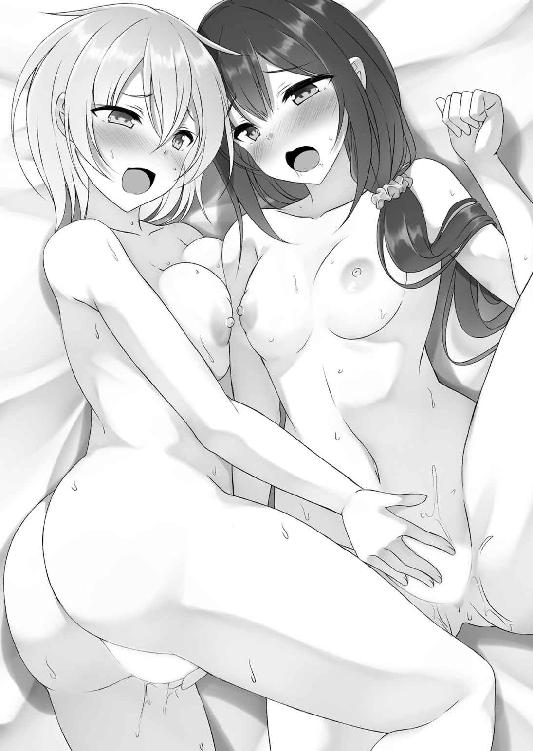
「こんなの......すぐ......私......すぐいく......。イッちゃう。抑えられない......」
当然のように絶頂感まで膨れ上がってくる。
「構わないわ。イキたいならイキなさい。我慢する必要なんかないから」
秘部だけでなく、空いた手で乳房まで愛撫しながら、熱っぽく囁きかけてきた。
「で......でも......私だけじゃ......」
自分だけ達したくない。一緒がよかった。
「大丈夫よ。私も......んんっ......イクから......。貴女と一緒に......だから......」
分かっていると頷いてくれる。
私もイク──その言葉を証明するように、これまで以上に膣口を収縮させて指をきつく締めつけてきた。
感じてる。気持ちよくなってくれている──それがよく分かる。嬉しかった。
「好き......大好き......アーニャ」
ずっと一人だと思ってた。だけど、今はもう違う。一緒にいてくれる人がいる。
「私も......サリア......好きよ」
言葉だけじゃない。想いまで伝わってくる。
好き──互いの心が混ざりあう。身体だけじゃない。すべてが一つになっていくような気がした。
昂りに身を任せ、どちらからともなく口付けをする。
刹那──
「んんんっ......くふんんっ」
「いっく......んっんっ......んんんんっ!!」
二人は達した。
強く互いの身体を抱き締め、肢体をビクビクと震わせながら......。
「......ずっと......ずっと一緒だからね」
それからどれだけの時間が過ぎただろう。
抱き合いながら心地よい脱力感に包み込まれていると、アーニャが囁きかけてきた。
「......それはこっちのセリフだ。こうなった以上、嫌がったって離れてやらないからな」
嬉しさを感じつつ、言葉を返す。
「ふふ、そっか......離れないか......そうね。ふふ、約束よ」
「ああ......」
二人で笑いあいながら、小指と小指を絡ませた。
ゆっくりとアーニャは閉じていた瞳を開く。
（懐かしい夢を見たわね）
クスッと口元に笑みを浮かべた。
（あれから何年......何百年が過ぎたかしら？）
ついこの間のようにも、ずっと昔のようにも感じる。
そんなことを考えながら、アーニャは壁にかかった一枚の絵を見つめた。
二人の少女が描かれた絵だ。
一人は騎士服に身を包んだ凛々しいサリア。もう一人はゴシックドレスを可愛らしく着こなすアーニャである。
椅子に座った二人の絵。固く手を握りあっている。
本当に幸せそうな表情を浮かべていた。
この絵を描いてもらってから長い月日が流れている。人の身では生きていけないほどの年月が......。
だから絵の中の二人みたいに並ぶことはできない。
ただ、それでも、アーニャの心には確かにサリアが存在していた。ずっとずっと、消えることなく......。
（ずっと一緒にいる......あの時の約束を今でも貴女は守ってくれている。律義ね本当に......。やっぱり、騎士だったってことか）
隣にサリアはもういない。
それは寂しい。それでも──
（人とか悪魔とかは関係ない。私は私で貴女は貴女......それを教えてもらった。だから私は絶望せずにいられる。生きていられる。私は......）
私は幸せよ──絵の中のサリアに微笑みかけた。
幸せな悪魔。
本当に幸福な......。
「アーニャさん？ どうかされたんですか？」
ガチャッと部屋の戸を開け、可愛らしい少女が首を傾げてきた。
「別に......なんでもないわ。それより、なんの用かしら？」
優しい瞳で少女を見つめる。
「なんの用かしら？ じゃないですよ！ 次のお祭りの打ち合わせがあるって話したじゃないですか。こういうことは顔役のアーニャさんがいないと話にならないんですからね。だからほら......早く来て下さい！ みんな待ってるんですよ！」
むんずっと手を掴まれた。グイッと引っ張られる。
「ちょっ！ そんなに急がなくても大丈夫よ。まったく......」
有無を言わせぬ扱いだ。
思わず苦笑しつつ、もう一度壁の絵を見つめた。
（貴女のお陰で一人じゃない。私を受け入れてくれている人は沢山いる。だから......もう少し待っていてね。いつか必ず貴女のところに行くから......それまでもう少し私の我が侭を許してね）
この言葉に──
「分かってるよ」
というサリアの声が聞こえた気がした......。
私が尊敬しているある漫画家さんがとある単行本でこう言っていました、普通の少女漫画みたいなお話でも、女の子同士だと「うぉおおおお！」となると。描いていて楽しいと。それ！ まさにそれ！ それなんですよ！ うぉおおおお！ うぉおおおおおお！ うぉおおお!!
http://uedanagano1103.blog120.fc2.com/
最近自分の誕生花の一つが「百合」であることを知りました。自分の百合好きは生まれた時から定められていたのかもしれません。百合の花言葉のような「純粋」「無垢」な女の子たちを魅力的に描けるようにこれからもより一層頑張ります。
二次元ドリーム文庫
騎士の私と悪魔の取引
百合の口付け
著者 上田ながの
発行 株式会社キルタイムコミュニケーション
〒104-0041 東京都中央区新富1-3-7ヨドコウビル1Ｆ
編集部 TEL 03-3551-6147／FAX 03-3551-6146
販売部 TEL 03-3555-3431／FAX 03-3551-1208
URL http://ktcom.jp/
©Nagano Ueda 2017
当ファイルは、二次元ドリーム文庫『騎士の私と悪魔の取引 百合の口付け』（2017年4月6日 初版発行）に基づいて作成しております。
※本作品の全部あるいは一部を無断で複製・転載・配信・送信したり、ホームページ上に転載することを禁止します。本作品の内容を無断で改変、改ざん等行うことも禁止します。また、有償・無償にかかわらず本作品を第三者に譲渡することはできません。
※本作品は電子書籍配信用に再編集しております。